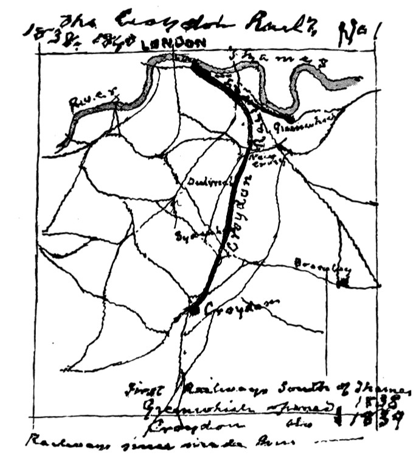
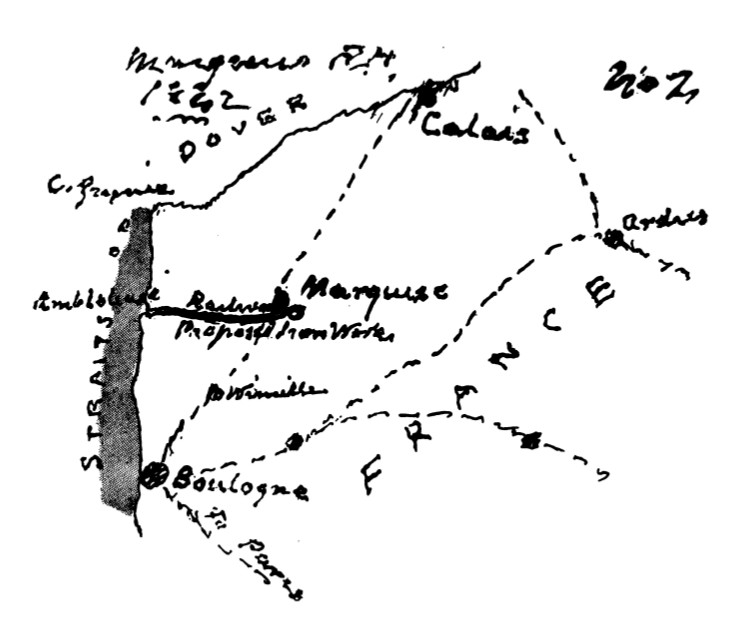
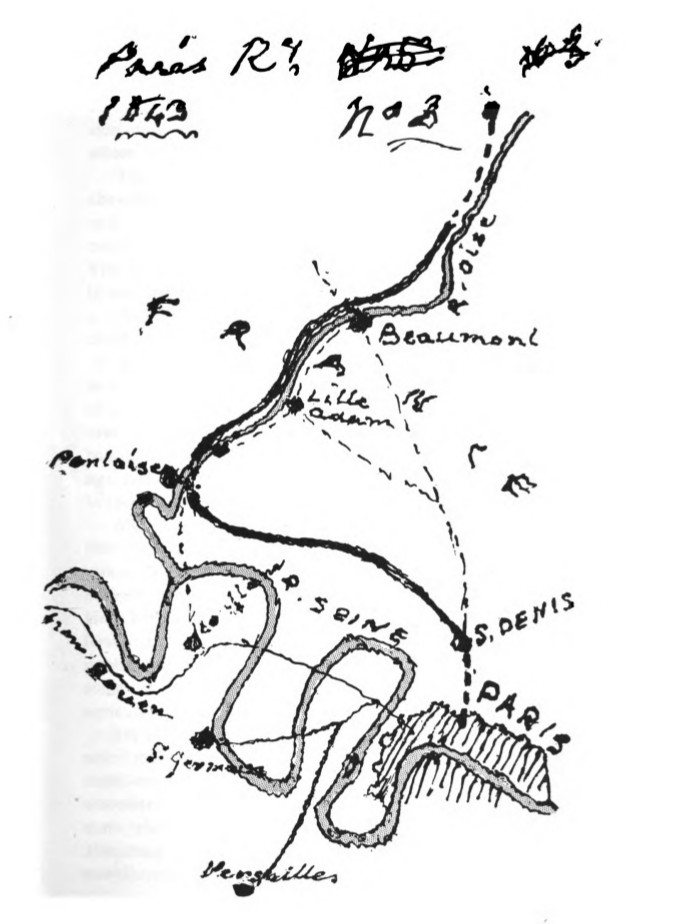
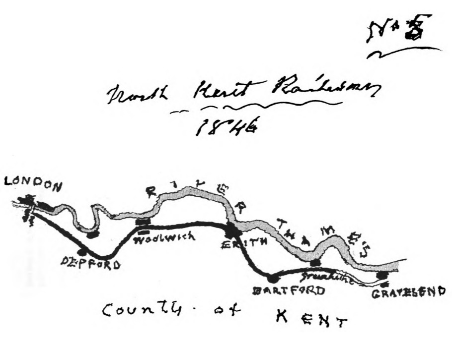
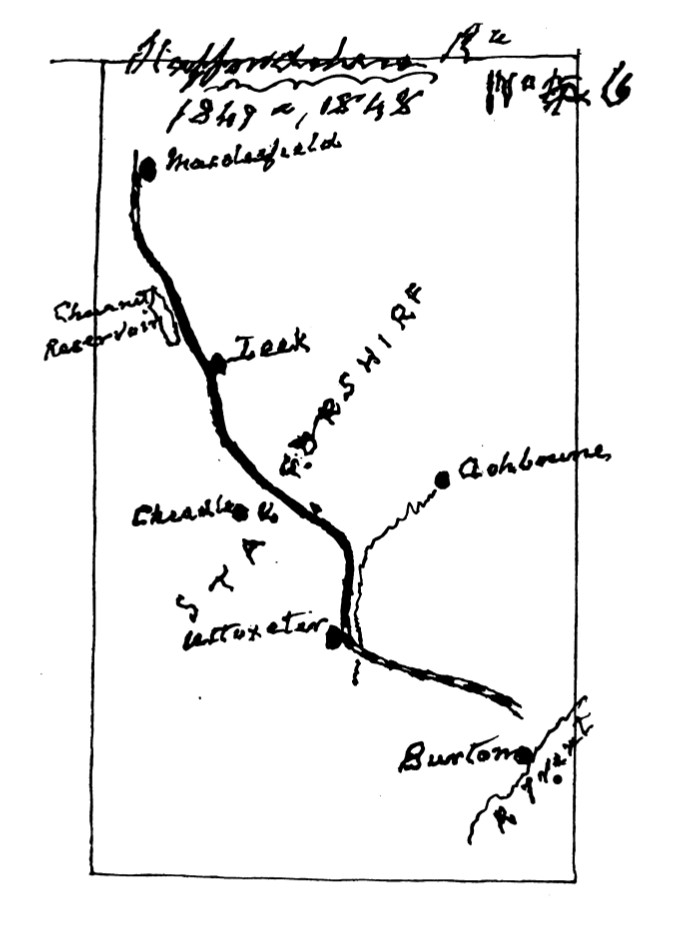

A RAILWAY PIONEER
NOTES BY A CIVIL ENGINEER
IN
EUROPE AND AMERICA
from 1838 to 1888
W.H. Lloyd
London
Baines and Scarsbrook, Printers,
Fairfax Road, N.W.
1900
Internet Archive
Hathi Trust
INTRODUCTION.
Having been frequently asked by those closely connected with me to give some particulars of my Professional Wanderings, the following has been written in compliance with such desire.
Wanderings which, with some 130,000 miles of Atlantic and Pacific voyages—equivalent to about five times around the globe—besides many thousands of land journeys in parts but little known, cannot be altogether devoid of interest even in these days of cheap excursions everywhere; so that my experiences in France, Italy, Chili, Peru, the Argentine Provinces, Brazil, Central America, Guatemala, Mexico, the United States, Canada, and the West Indies, should, perhaps, yield some items of amusement, if not of instruction, and repay for the perusal of these rough notes of one of the earliest of Railway Engineers.
A RAILWAY PIONEER.
1838.
I VENTURE to consider that it was an evidence of my beloved father's sagacity and affectionate kindness when he determined that I should be articled to a civil engineer, for I am persuaded no other profession would have suited me so perfectly or have afforded me more pleasure, excitement, or novelty during the half-century, more or less, that I have had the honour to practise it.
At the time when this momentous decision was arrived at, I had scarcely reached sixteen years of age, but was considered to have completed my education ; but it soon became obvious to me that I had everything to learn, and that I was only approaching the threshold of the vast storehouse of practical information wherein, by my researches, my future would be either conducted to success or requited by failure.
On leaving my last school—that of the Rev. R. Simpson, at Islington, a worthy Scotch Presbyterian, with whom I had taken some interest in chemistry under Professor Ritchie of the London University, and had made some progress in drawing with the Dominie's nephew—I was first sent to a mechanical engineer's works beside the Thames, near the old timber bridge at Battersea, where the above bridge steamboats, the Bachelor, Bridegroom, Bride, and others were put in proper trim and arrayed in festive-coloured attire for
service. These works were nearly three miles from our residence at Stockwell, and one had to reach them by six a.m. across the meadows now forming the Battersea Park, and across the South-Western Railway, then in course of construction.
This experience was not agreeable, and I was soon transferred to some other works at Pimlico, where small steam vessels were constructed, and where I spent some time in the drawing-office, which suited me better; but just before my sixteenth birthday my father obtained an introduction to Mr. Joseph Gibbs, the civil engineer, through, I believe, a brother of the celebrated Arctic voyager. Sir James Back. Mr. Gibbs was then engaged in converting the Croydon canal into a railway, and, on being applied to, consented to take me as a pupil; and on the 15th October, 1838, I became articled to him for a term of four years, during which period it was stipulated I was to receive " such instruction as shall be most conducive to his " (the said pupil's) " advancement in the said Art and Profession, and all and every matters and thinfrs incidental thereto.^' And I have often thought that to have fulfilled such an obligation, on account of the innumerable ramifications of civil engineering, four hundred years of pupilage, instead of four, would scarcely have sufficed.
But under the tuition of my excellent and talented master I could not fail to acquire knowledge, and to become interested in the work being designed and executed by those with whom I was associated, who were universally men of refinement and of rare abilities; for at Gibbs's we did everything in the office. Our chief was an universal genius, a clever artist, a good architect, a most skilful mechanician, and not unskilful as a chemist; and as an evidence of such qualifications, I need only refer to pictures of his hung at the Royal Academy; to

PUPILAGE. r
his design for the Royal Exchange, to which the present structure bears an almost " Pecksniffian " resemblance ; to his bold and masterly plan for the drainage of Haartem Mere; and to his researches into the galvanization of metals, pursued in a laboratory behind our office.
The iriends of Gibbs were men of mark at the time t Lumley, the lessee of the Italian Opera; George Cruik-shank, the caricaturist; Edward Duncan, the water-colourist; Huggins, the marine painter to William the Fourth; and many others of like prominence; and, finally^ he was a man of great simplicity and of an amiable and generous disposition.
Our office was one of two houses standing in Kenning-ton Oval, opposite to what is now the entrance to the Surrey Cricket Ground, but which was then a market garden. In the adjoining house Mr. Gibbs lived with his family, and this made it very pleasant for me. Altogether the situation left little to be desired in any respect.
On my joining the profession of civil engineers in 1838, railways were quite in their infancy; the Greenwich line, the only one south of the Thames, had been in operation for a year or so, and the only line out of the metropolis north of the Thames—the London and Birmingham—had only then been just completed. The third line out of London was therefore the Croydon line, and this was not opened until the autumn of 1839, ^^^ became eventually the parent stock from which sprung both the South-Eastern and Brighton systems of communication, the Acts for which were under consideration by Parliament, and as yet unauthorized. Thus in 1839, within a radius of ten miles from London Bridge, there existed about fifteen miles of railway where, fifty years subsequently, nearer 150 miles of line were in use by the public. (See map No. i.)
The execution of the Croydon railway afforded me

S A RAILWAY PIONEER.
much valuable instruction, as there was not only originality in its design, but also considerable boldness in its execution. It was the first time, I believe, on which an incline of i in loo (52ft. per mile) was adopted, and upon which longitudinal sleepers were used. The construction of some of the bridges presented features of novelty, but these, to provide for subsequent widening of the line, have mostly disappeared. The acclivity of 52 feet per mile was considered by many at the time a very hazardous experiment, but, as will appear hereafter, inclines of four and even five times as steep are employed in later times.
The Croydon railway commenced at the present Lrondon Bridge Station, and ran parallel with the Greenwich line for about 2J miles; it then diverged towards New Cross, beyond which place the ascent of 52 feet per mile was rendered necessary to attain to the summit of Forest Hill, reached by the old canal by a long series of locks, and to accomplish this one of the deepest excavations then attempted became necessary, its depth being go feet in that most treacherous material, London clay. And here it was remarkable to unearth, thirty yards below the surface of the ground, and above ten yards above the level of the Thames, a bed of oyster shells a foot in thickness, retaining their shape until exposed.
Some fragments of the old Croydon Canal which were not utilized by the railway long remained, and on one of these I was sent to make drawings of a gas engine which had served to supply the canal with water. Of this I made careful drawings before its demolition, for it was then probably unique, though now gas engines are common enough, but perhaps not of a like simplicity; for it simply consisted of a tall upright cylinder standing in a well, and having a loose cover. Into the interior of this cylinder gas was introduced, and when it was charged the gas was exploded, and the vacuum thus

^
produced thereby drew up the water from below, to be then discharged into the canal.
At that time the vicinity of the railway was " truly rural/' and in great part was innocent of houses or population—Forest Hill, Sydenham, Norwood, were names of districts, and the stations were entitled the *'Dartmouth Arms" or the "Jolly Sailor" Stations, local hostelries in their vicinity which possibly still exist. The Crystal Palace did not rise above Sydenham until about twenty years after, and Norwood, with its Beulah Spa waters (as beneficial as many now obtained from abroad), was the favourite haunt of gipsies. But now my first love, the Croydon line, has been attacked on all sides, swallowed up and absorbed by monster extensions, and is scarcely to be now identified as the germ from which a mighty system of communication has sprung.
It was indeed a proud and happy day for me when, in the autumn of 1839, ^ secured an invitation for my beloved father to attend the opening of this my first railway, and to assist at the banquet customary on such occasions, at the terminus at Croydon, two years before his lamented death; and although I have, on many occasions since, attended not a few of such celebrations, none I am sure ever gratified me so much.
But the Croydon was not the only railway we had to do with, for Mr. Gibbs laid before Parliament plans for a line to Brighton, for which Edward Duncan supplied some large and beautiful views. He also submitted the project of a London and York line, so that in the production of such plans I had some minor share in surveys in the field, meeting at times with no little opposition from the owners of the land we were compelled to pass over, who stubbornly refused to admit of the benefits we desired to provide. At times men would
i
confront us with pitchforks and bludgeons, or obstruct the sight of our instruments by holding up trusses of straw, but our surveys were made notwithstanding all impediments, although in some of the worst cases we had to accomplish our purpose at night by the aid of lanthorns; but there were other cases where we received a hearty welcome as the harbingers of future benefits.
These expeditions, at my then age, were most enjoyable, and sometimes not a little exciting; they made one familiar with many charming and remote spots not often visited then by tourists, and brought me into contact with all sorts ind conditions of men, many of whom were noteworthy in many ways.
Then after the surveys were completed one had to attend the Parliamentary Committees, with perhaps Thesiger, the dignified, as counsel for us, and Serjeant Meriweather, the corpulent, against us, and our staff giving evidence—all very instructive and occasionally very amusing. I remember when, on the day of publication of one of the numbers of Pickwick, we were in committee, and the Serjeant was violently opposing us, someone laid before him the illustration of the trial of " Bardell versus Pickwick," with Serjeant Buzfuz addressing the Court. Meriweather, who somewhat resembled the counsel in the picture, looked at it, gave a loud grunt, and went on with his speech.
The drainage of Haarlem Meer was obtained in competition with others, and was carried out in conjunction with Mr. A. Dean, an expert in Cornish mining, the plans being made in our office. The Meer was a large lagoon in Holland, lying between the cities of Amsterdam, Haarlem, and Leyden, in area nearly one hundred square miles, and containing 160 billion gallons of water. This enormous body of water it was proposed to drain by means of three monster steam engines, each of one
thousand horse power, and capable of raising together one hundred and ninety million gallons of water every twenty-four hours. Of course the preliminary works and the construction of the engines occupied some years, so that the pumping did not actually begin until 1848, but the Meer was successfully drained by July 1852, or in the space of about forty months.
Occasionally I assisted in experiments for the galvanization of iron with copper and zinc, with the object of avoiding the use of the costly copper bolts then employed in the construction of wooden ships by the substitution of iron bolts coated with such metals, but the construction of iron vessels rendered the use of copper fastenings unnecessary, and the galvanization of iron is now employed for many other purposes with immense advantage.
We at this time made some experimental trials for the propulsion of vessels by the projection of water at high pressure at the stern, with the view of reducing the wash caused by paddlewheels in narrow channels or in canals, this being before the introduction of the screw, and I am still inclined to believe that such mode of propulsion may be found to possess many advantages.
Amongst other things of interest which came under observation while I was with Mr. Gibbs were his inventions in connection with wood - cutting and inlaying by machinery, which were most ingenious; one of the tools he contrived for forming spirals was said to be the study of the mandibles of the timber - boring marine worm, the Teredo Nevalis.
Of course our office was the resort of inventors of all kinds with all sorts of contrivances, with possibilities of acquiring ** wealth beyond the dreams of avarice "— now a safety lamp, a new paddle-wheel, an improved cab, or a theodolite ; then an artist who would copy you a
Morland or a Hogarth so that you could not detect the copy from the original. But, alas 1 with the majority of such the genius displayed seemed to have been sadly unremunerative.
My professional education, varied as it was (although I was unconscious of it at the time), fitted me admirably for the positions I was subsequently to occupy, for I had often afterwards to rely on my own unaided skill in many things which, had it been obtainable from others, I should gladly have sought; and I have thought myself fortunate, when thrown completely on my own resources, that my education enabled me, when in far remote countries where railways were unknown, to project, trace upon the ground, design the bridges and buildings requisite for a railway, and even, finally, to drive a locomotive (if necessary) over the line when completed.
In Europe there is little need for such versatility, for skill and experience are to be obtained in plenty : judgment in its selection is the principal requisite ; but it becomes a very different matter when one has to instruct inexperience, and resist prejudice where mechanical appliances are unknown, and where novelty is regarded with suspicion.
At Gibbs's my companions were, however, my good friends, and generously gave me every chance of learning as much as I desired. From the two architects in the office one obtained some valuable ideas of design, not only of railway buildings, but in connection with competition designs sent in for the Royal Exchange and St. Giles's Parish Church, Camberwell—which latter proved only inferior to that of Sir Gilbert Scott, a deifeat by no means dishonourable. Another of my old friends at the time, Mr. G. H. Andrews (to whom I shall ever be indebted for my fondness for sketching), became a very distinguished artist, and attended H.R.H. the Prince of Wales on his visit to the United States and Canada.
In the companionship of such as the above, with kindred tastes, we partook of the same amusements, never missing the opening day of the Royal Academy, invariably appearing on the first nights at Macready's Theatre to see " The Tempest," " Coriolanus,'* " Money," " Acis and Galatea," " Richelieu," &c., for some of which the scenes were painted by Clarkson Stanfield, R.A., and where we usually found assembled the celebrities of the times—as Macaulay, Dickens, Thackeray, Carlyle, Lord Lytton, with Charles Kemble and old Liston, the actors of a previous age.
We also had our little sketching-club, to which we contributed an original sketch for criticism, and sometimes I was permitted to enjoy an evening, by the kindness of Mr. Lumley, at Her Majesty's Theatre to hear Grisi, Pusiani, Rubini, and Lablache, or witness ballets in which Taglioni, Cherito, Carlotta Grisi, or Fanny Elseler took part.
On other occasions we attended the Corn Law meetings at Drury Lane to hear the speeches of Bright, Cobden, and others, or went to Peckham to listen to the eloquent sermons of the Rev. Henry Melville, or witnessed a political meeting on Kennington Common (now a park), where I once saw the new police scatter the assemblage by the liberal use of their staves.
Other places of occasional resort were Vauxhall and the Surrey Zoological Gardens; to the latter had been transferred the animals from the old Exeter 'Change in the Strand, which I remember having visited when a boy. These places have all long ceased to exist, are built over, and no trace of them remains, like many other things I have known—as old London Bridge, the old Houses of Parliament, and the old Royal Exchange; but these have been replaced by new and nobler structures, and their disappearance need cause no regret.
In the retrospect of the period of my pupilage—1838-1842—it is remarkable how deficient we then were in such things as, fifty years after, we find indispensable to our comfort and convenience. Then, to reach our places of business we found few conveyances, as cabs or omnibuses, and no railways or tramcars. If we went on a journey out of London we had to travel by stage-coach at ten miles per hour instead of fifty or sixty as now. If we went abroad (as few but the wealthy did) we posted to Dover in our carriage (which we shipped on a tiny steamer to cross the Channel), and posted again over the Continent; while if we had to cross the Atlantic we had to do so in sailing vessels—a voyage perhaps of months, and not of a few days as now. There was no telegraph or electric lights, and not even a lucifer match. Waterproof clothing was unknown, the Penny Post had not been dreamt of, our food was almost exclusively English, and not obtained from the Antipodes; our portraits were cut out of black paper, and not executed instantaneously by the sun. If we required to converse with anyone we had to visit him ; now, however distant he may be, we talk to him through a wire. Gas was hardly known in the suburbs, and the new police had only just displaced the watchmen of Shakespeare's plays. Yet of all the modern marvels we pride ourselves on, how many of them are really new ? Are they not only developments of former notions or contrivances ? Even the popular "bike ** was anticipated by a car on the Croydon line in 1840, contrived by my late lamented friend Sir Charles Gregory, worked by the feet, which was used for inspecting the line. The Electric Telegraph seems to be foreshadowed in a paper (No. 241) by Addison, in 1711, in the Spectator (quoting from a sixteenth-century writer*), describing a magnetic tele-
*Strada.
graph, but mentioning no wires; yet we are beginning to think that even wires are superfluous. We find also in the Harleian MSS. of the British Museum a drawing of a vessel with paddle-wheels, and the Marquis of Worcester, in the seventeenth century, suggested the steam-engine and claimed the invention of a flying-machine. Indeed, the latter eminent personage, with Roger Bacon in the sixteenth century, has been the means of infinite disappointment to modern inventors; and one is reminded of a remark made by a very ingenious man who proposed to us a new form of cab, which we showed him in an old Dutch work on coachbuilding, when he exclaimed, ** Ah! how those Ancients do rob us Moderns ! "
Reflecting upon the marvellous changes that the world has seen in the half-century since my entering the profession of a Civil Engineer, one is at a loss to conceive how we then existed without our present advantages, or what may be in store for us in a like period of the future ; and it is quite possible the enlightenment of to-day may appear as only a gleam of light penetrating the clouds of ignorance which envelop us.
ON RAILWAYS IN FRANCE. 1842—1843.
It would seem to have been my destiny to have been sent to foreign parts, not for my country's good, not perhaps with the view to my own advantage, but, it may be hoped, somewhat for the benefit of those amongst whom I have served ; for I had no sooner arrived at the end of the term of my articles of apprenticeship than I was taken by Mr. Gibbs by a steamer from London to Boulogne, named the City of Edinburgh (Captain Tune),
the same vessel which two years previously had conveyed Louis Napoleon with his Eagle on his ill starred expedition to France, and which led to his six years' imprisonment at Havre, and to his poor old Eagle's confinement at the abattoir, where I used to pay it a visit now and then, as to an historical personage of high lineage.
Being then a good sailor, the voyage delighted me, and on arrival at the quay, the foreign aspect of all around, the martial appearance of the Custom House people, with the ** corps de ballet" fisherwomen gazing on us, and all chattering together, interested me greatly. But what surprised me most was that my school French appeared unintelligible to the natives; but that was a thing soon rectified.
On landing we were evidently regarded with intense suspicion, and it was only after a most rigid investigation we were liberated from the Custom House with our luggage, which was placed on a truck and drawn before us by some of the merry corps de ballet to the Hotel des Bains, then the principal hotel, where we obtained rooms on the first floor in the courtyard, whence we found constant amusement in watching the arrivals and departures of the wealthy and distinguished travellers in their heavily laden carriages, drawn by four big Norman horses with postillions, conveying " mi lord'' and " mi ladi" within, and the maid and courier on the rumble without. The postillions were objects of admiration, as, clad m their glazed hats with cockades, their short jackets braided, their legs encased in enormous jack boots, and their hair tied behind in a sort of queue, the inevitable pipe in their mouths, and armed with their heavy whips, they seemed equal to any emergency; and many were said to perform wonderful journeys, as riding for days at a stretch, even from Marseilles to Boulogne. What became of them ?—ces brave gar9ons.
Then France was French; our bedrooms were not too luxurious, the floors were of red tiles innocent of carpet, water was limited in quantity, and soap absent from the washstand—this had to be purchased of the chambermaid, who early each morning appeared at one's bedside with a cup of coffee au laii^ and laid the wood fires which pretended to warm the rooms. Then the neatly attired waiters, and the unaccustomed dishes at the table d'h6te, the novel fashions of attire worn by the guests, all contributed to interest me with the novelties in the town itself— the delightful old walled-in upper town with its shady ramparts and quaint medieval chateau and belfry, the ever changing scenes of the port and harbour—even the fishmarket had its attraction for the lounger, so unlike our repulsive Billingsgate, to say nothing of witnessing the daily departure of the Paris diligences^ those unwieldy combinations of the omnibus, the coach, the postchaise, and the cabriolet, with their biting, kicking, and screaming team of five horses, and its swearing, yelling driver. But we also then could boast of an English four-horse coach on the road to Calais, complete with guard and horn, by which I travelled backwards and forwards to Marquise, where I was engaged in making the surveys of a large ironworks, and of a proposed line of railway thence to the port of Ambleteuse.
The road to Calais had its interest, although the country is not attractive, for one passes by the place where Napoleon collected his huge army for the threatened invasion of England ; we go through then the little hamlet of Wincile, with its humble church and graveyard, where lie the aeronauts Rosier and St. Roman, who lost their lives here in 1785 in an attempt to cross the Straits of Dover by balloon, and at about halfway to Calais we reached the small town of Marquise, known for its marble and large iron-smelting works, at that time idle.
Here I was engaged for some time, occupying quarters, primitive enough, in the humble auberge of the place, ivhere I was kindly entertained, and fed sumptuously on wild ducks and fieldfares, which abounded in the vicinity, •especially along the course of the railway I was sent to survey, beside the little river Slack, which, traversing some broad marshy lands, flows into the sand-choked harbour of Ambleteuse, historically interesting as the landing-place in 1688 of the unhappy king of England, James II., on his flight after dethronement, and as also one of the places used in the preparation of the flotilla for invading England in 1803, abandoned wisely; but the place when I was there presented the most forlorn and melancholy aspect, containing only a rotting mildewed fort or blockhouse, some skeletons of timber moles, but nothing living to be seen except scores of wild rabbits.
Boulogne, where I remained for two or three months, was a very quiet place in the winter of 1842, but by no means dull. As yet the railway from London to Dover was unfinished, and that from Boulogne to Paris was not commenced; tourists were few, and travelling carriages seldom seen, but we had a theatre, the caf6s and their billiard tables, and, above all, the residents to study and amuse us; for they were of an infinite variety, and almost all of fairly good appearance, but practising a rigid economy; a number bore a rather horsey look, most of them were rather fortunate at games of skill, and I think they all appeared to have enjoyed the intimacy when in JEngland with members of the aristocracy.
For a while at Boulogne I resided with the editor of the newspaper, who was married to an excellent lady, who, like most of her countrywomen, was an admirable housekeeper; with them I lived thoroughly d la Francaise^ and on one occasion, specially for my benefit, a dish of fricasseed frogs was provided, but failed to meet with my

approval. While with them I made a trip to London by way of Dover, thence by mail coach to Headcorn, and on to the Metropolis by the South-Eastern Railway, thus far opened for traffic. On my departing on this occasion I was commissioned by the editor to apply to Rowlands for payment of arrears for advertisements of the Macassar oil, and by Madame to procure for her needles and cotton stockings, all of which I duly complied with—I hope successfully. During my stay at Boulogne I was visited by a party of my engineering friends who had come from London to witness the destruction of the Round Down Cliffs at Dover; among them was the late Sir Charles Gregory.
This, the first of my unassisted engineering experiences, was invaluable to me, besides leaving behind it many pleasing reminiscences, with an affectionate regard for a people I have found act kindly to me, who possess transcendent abilities in literature, science, and art, and who have numerous inestimable qualities besides to recommend them.
To Paris, upon the Construction of the Great Northern of France Railway.
Having completed my work at Marquise, instructions came for me to proceed to Paris; therefore, early in 1843,1 secured a seat in the coupe of the Paris diligence leaving Boulogne at five in the afternoon for the capital. It was a journey I had long desired to make, for should I not pass near the glorious battlefields of Crecy and Agincourt? and travel over the ground of Sterne's " Sentimental Journey," by Montreiel, Nampont, and Abbeville ? But I was alone in my coupe, and the uneven road rendered sleep impossible when in motion, and when we stopped to change horses the screams and shrieks of the great
Norman cattle, with the yells and cries of the ostlers in attendance, effectually put an end to slumber.
However, the following morning we lumbered into the city of Beauvais, where we had breakfast, and had afterwards time for a hurried visit to the noble cathedral of the thirteenth century, the choir of which is said in height to exceed considerably that of Westminster Abbey.
With a great cracking of whips and a torrent of choice expletives by the driver, we proceeded on our way—after leaving one of the few cities in this part of France besieged but ttot taken by the English—over paved roads and along endless avenues of poplars until we came to the Oise River, which we crossed by a good bridge, under which great barges with huge rudders were on their way from Paris into Belgium, the proposed railway from Paris to the North crossing the high road close by the bridge; and it was here I subsequently began my section of the line.
The town of Beaumont stands pleasantly upon rising ground at the end of the bridge, overlooking the river, and in this clean and salubrious spot I afterwards resided for some time agreeably enough. The road after leaving Beaumont offered little that was attractive beyond the increasing wayfarers with their blouses and sabots, for we soon approached the city of St. Denis, with its ancient church—the desecrated sepulchre of kings—and thence the signs of our nearing a great city became conspicuous enough, and at length, at about 6 p.m., after twenty-five hours of sleepless torture, our " bone-setting " journey came safely to an end, and I sought refuge in the Hotel de Lille et d'Albion, which then stood on the site of the Louvre, and, I believe, almost facing the royal mews of the then king, Louis Philippe, afterwards dethroned in a revolution, which in Paris are almost as frequent and infinitely more sanguinary than in a South American Republic.
I was unable then to see much of the city or its curiosities as subsequently, for I was almost immediately appointed to assist in the proposed railway from St. Denis to Pontoise and Creil. There then existed one short line out of Paris—that to Versailles, with branch to St. Germain—and the line to Rouen was in course of construction by the eminent English contractor, Thomas Brassey, under the direction of Joseph Lock, C.E. The line to which I was attached was the first main line undertaken by the Government out of Paris, was under the superintendence of the Engineers of the Ponts et Chauss6es, and the works were let to English contractors, with certain limitations as to number of foreign labourers; so that, at under twenty-one years of age, I shared in carrying out the third railway opened out of London, and the third also out of Paris, and I feel some pride in having been one of the early pioneers of a system of communication from which has been derived such incalculable benefits to the entire globe.
We therefore, with only a brief delay, set out from Paris for Pontoise, where we found excellent accommodation at the Hotel du Grand Cerf, by the bridge over the Oise River, where we remained until we secured more commodious quarters at a neighbouring chateau close by the works.
The hotel was a good example of a French provincial hotel. It was managed by a cheerful, bustling woman ; there was no male, as far as we saw, in authority. The chief entrance was into a spacious kitchen, where the chef displayed great dignity in front of his fire. In the centre of the room, which was scrupulously clean, was a huge table, on which was displayed attractive!}' and ready for immediate use the viands for the day, thus offered for inspection and selection by the customers—fresh fish, cutlets, breaded and larded veal, poultry, fillets of beef,
&c., interspersed with fruit and vegetables, all skilfully arranged and appetizing in appearance, so that the guest obtained an assurance not only, of the soundness but the genuineness of what he partook of, which printed menus sometimes fail to do. Thus our repasts seemed perfect, especially as the waitress, Lisette, with her bright and merry looks, would have dissipated the gloom even of a City chop-house during a November fog.
Our rooms looked out on the pleasant river, on the further side of which stood a fine old chateau, but which had been converted into a Hour mill; and behind this, upon the hillside, rose the city of Pontoise, culminating in a mound where once stood a castle-keep, besieged and taken by our countrymen in 1491, the site of which had been converted into a charming garden, while the mound of the keep, affording a most extensive view, was made use of for practising on the cor de chasse (French horn), where quite a number were to be heard in full blast.
From the hotel, after a while, we removed about a mile away to the Chateau d'Epluche, which stood on high ground overlooking the valley of the Oise. It was approached by an arched gateway, having wings on either side containing stabling, granaries, &c. Within was a large courtyard, at the end of which stood the chateau, and on one side was a large shrubbery (or so-called English garden) which was a favourite resort of nightingales and huge snails, which were considered by epicures especially suitable for making potage d'escargot (snail soup), and they were collected by the porter and dispatched to Paris, adding to the revenue of the chateau in addition to supplying the larder of the owner, who was said to be a banker of St. Denis, and who lived here en garcon, having, in accepting us as tenants, reserved two rooms for his own use, passing the whole of his time (his wife managing the bank) in shooting the nightingales, I fear, capturing
t*^nl»'\.

^
snails, and in smoking a very black pipe, and, I fancy, living en pension with the porter, for we had entire posses-^ sion of the kitchen, where Lisette from the hotel presided whom we had engaged as housekeeper and cook.
The chateau itself was a long building of one story^ above the basement, and some attics in the high mansard roof. The principal rooms were lofty and spacious, but comfortless; the rest were very inferior in every way. The house was convenient to the heaviest wolrk we had to execute, which consisted of deep rock excavations and a large bridge crossing the river Oise, which was to be chiefly of stone, of which an abundance was obtainable on the opposite side of the river from a quarry belonging-to an old General, with whom I had often to treat for it of a morning, whilst he, scarcely dressed, was sitting^ over his fire in very humble quarters, preparing his bouillon, or soup, for the day. He was over 60 years of age, looked a thorough veteran, and might have been at Waterloo with Napoleon.
After residing for some time at the chateau, we received orders to commence work at Beaumont, and I was sent there in charge. On my arrival I found myself entirely unprovided with men, tools, or materials of any kind, but with peremptory orders to employ 300 workmen forthwith. I was at a loss, but it occurred to me that a public notice, if posted up in the town, might induce some of the peasants around to assist with their agricultural implements.
Such a notice was made public forthwith, and the next morning, agreeably to my surprise, when we made an appearance at the spot indicated, there was assembled a motley crowd of volunteer navvies, numbering more than a hundred, with every species of earth-disturbing implement, and with a perfect collection of wheelbarrows, many of remote antiquity.
With this force we began our task, and soon our numbers increased, and the work went on briskly enough ; but as there was no communication with our headquarters at Pontoise, I purchased at a farm, near by, a pony, which I took away amid the lamentations of the entire family, who clung round its neck with sobs and tears, and implored me to be kind to their pet, and bring him often to see them.
Thus I was enabled weekly to reach the chateau for the means to pay the workpeople. It was a ride of about twenty miles there and back, partly through forest, where the charcoal-burners bore an indifferent reputation ; then through the village of Lille Adam, a charming spot on the Oise ; and after over open country to my destination. Before returning I had to pay a visit to the bank ai Pontoise, to obtain a sackful of five-franc pieces, which I slung across the saddle, and, having paid my respects to our amiable banker, who was, as usual, a lady, I returned to Beaumont, too late sometimes to be pleasant or very safe with the burden I conveyed.
With the workmen in general I got on pretty well, but of course they were altogether inexperienced, and I was only allowed six Englishmen on my portion of the work, so that having an offer of a party of Belgians who had seen similar work executed, I readily engaged them, and thus planted the seeds of rebellion: for while at breakfast the following morning one of the Government inspectors rushed in exclaiming that murder was being committed amongst my men, and that I must proceed at once to quell the disturbance.
Somewhat startled by such alarming intelligence, I hurriedly finished my meal, and went to obtain assistance at the gendarmarie; but none was to be had, for the whole force had gone to Paris with prisoners, availing themselves of the occasion, it being the King's Birthday F4te :
therefore one had to make the best of it and personally try what I could do. On passing over the bridge to reach the work, I encountered the whole of the men—about 300 French and Belgians—on their way to interview me, all in the greatest excitement, and making a fearful demonstration of their discontent with every thing and person not French. I at once addressed the Belgians, demanding why they were not working. They declared the French threatened them with death if they did, so I ordered them all to return with me so that I might ascertain who would attempt to interfere. So they all followed to the spot where the riot had broken out, which was found deserted by all but my gang of six English navvies. On our arrival, in my best French I endeavoured to pacify them, but seemed only to inflame their passions, for from violent abuse they proceeded to brandish their spades and pickaxes in a most energetic manner, while some ventured to suggest violent measures. Then to my side came my chief English navvy (a splendid specimen, named Tom Breakwater, from having come into the world on the Plymouth Breakwater), who had observed their threatening gestures, and asked me what they were saying, and, when I told him they proposed throwing me into the river, coolly remarked, " Never mind, master, rU pull you out."
Seeing, however, that the men were deaf to reason, I decided to suspend work altogether for the time, and I made it known that as it was the King's f^te-day we would all take a holiday, a proposal which met with unanimous approval, and we all went into Beaumont, where we proceeded to a timber merchant's to purchase some materials, and, having done so, were invited by the owner to take a glass of wine, and, accepting his hospitality, entered his house, which proved to be a wineshop, wherein was assembled the ringleaders of our
mutiny, but who now, instead of desiring to plunge me into the river, wanted to drown me in the bowl; so I drank with them, proposed the health of the King, and wished them and France all prosperity.
The next day the Government engineer returned, and several of the men were arrested, but at my intercession they were soon liberated, and tranquillity was assured.
At the works of the Oise Bridge we had a much more serious affrav between the French and Belgians, which resulted in the loss of several lives, after which we had piquets of cavalry posted along the line to maintain order.
During this stay in France I enjoyed many visits to the capital—now half a century ago, before it was annexed by Americans and Cook's tourists, and before it had been restored by Baron Hausseman; its picturesque features, so quaint and antique, destroyed; its historical monuments, in many cases, razed to the ground ; and so much of its romantic interest dispelled by the ravages of the improver, and the destructive insanity of Communists. It now may be a handsomer and perhaps a wholesomer city, but one regrets the loss of things and objects intimately associated with the history of a country and people so interesting.
Riding from the chateau to the station of Confleurs on the newly opened Paris to Rouen Railway in the forest of St. Germain, I was enabled to dispose of my spare time in making acquaintance with even the most obscure and retired places in and around the ** Ville Lumiere," which yielded me much satisfaction and instruction ; and on the completion of my section of the work, at the close of 1843, I returned to England by way of Rouen and Dieppe, and thence by steamer to Shoreham, the then port of the Brij^hton Railway, the easiest way then home, and still, one believes, the most agreeable and attractive if not the most expeditious.
PRACTICE IN ENGLAND. 1843 to 1848.
The period of my return to England from France was one of great activity in the railway world, so that one soon found an engagement in surveying some of the then projected lines. That proposed from Salisbury through Shaftesbury, Sherborne, to Yeovil (now forming part of the South Western to the S.W. of England) was the first —thus I became intimate with these towns, and with many of the objects of interest in their vicinity, such as Old Sarum and Stonehenge, of which an American, when asked what he thought of it, declared, ** Wal, its very rustic! " The ruined Fonthill Abbey—the sad relics of ambitious folly of the author of " Vathec *'—with its weed-covered lawn and neglected plantations; the fine old Minster of Sherborne and its ruined Castle, once the dwelling of murdered Sir Walter Raleigh; terminating this excursion at Yeovil, where I first went after the foxhounds on a hack hired at the inn, and fell in leaping into a newly gravelled lane, and had to return to town across Salisbury Plain on a bitter night late in November with an injured knee.
A similar engagement took me over the country between Bath, Wells, and Glastonbury, than which three places, so near to one another, there can be no greater contrast; in the modern fashionable aspect of the first, the mediaeval appearance of the second, and the moss-grown crumbling ruins of the last. At another time Dorchester, with its Roman remains, with Weymouth and the Isle of Portland, demanded my attention.
Early in 1844 I joined the staff of Frank Giles, C.E., whose chambers were next door to the College of Surgeons, Lincoln's Inn Fields, and whose practice was
mainly connected with Mr. Robert Stephenson, C.E., M.P.; and this engagement, ultimately, to my great delight, procured me the honour of becoming associated with that distinguished engineer.
As Giles's we worked from 9 a.m. to 5 p.m. without interval for luncheon, and the scarcity of transport from my residence at Vauxhall obliged me to walk five miles to and fro daily. No Saturday half-holidays were then thought requisite, but we seemed none the worse for their absence, but we always were rejoiced to obtain occasional duty in the field, especially as then our pay was doubled.
Mr. Giles was one of the first, as far as I am aware, ^o originate the idea of underground railways, for in 1845 I made for him the plans and sections of a proposed line from the North Western Railway at Mornington Crescent, Hampstead Road, moving south behind the Tottenham Court Road to the then Brengerford Market, now the Charing Cross Station. These investigations had to be made soon after daylight, before the traffic began, but when the latest night-birds had yet unsought their roosting places.
This project was, I think, then considered premature, but would now have been most advantageous and beneficial, for Charing Cross would have been the central station for London from the north and south, would have provided a direct communication through the Metropolis, and saved millions annually in the transportation of passengers and goods.
Its execution ^yould have presented no difficulty of a serious nature, for it only interfered with one sewer, that under the Strand, and the properties affected by it were mostly of no great importance at the time.
The year 1845 was that of the " Railway Mania,'* and of exceptional activity in all departments of such enterprises. Every engineer of ability, with many of no

>
29
PRACTICE IN ENGLAND.
ability whatever, were engaged on all sides; and we were hurried from place to place with scarcely time to take a meal or seek a couch. Travelling by night, and plodding over the country all day, so that, in consequence of such feverish haste and the employment of unskilled persons, the result was inevitably the rejection of many such schemes through inaccuracies in the plans or failure in their preparation in time.
Our lives at such times were one perpetual trespass; no property, however sacred or private, of noble or peasant, was regarded by us as such. We penetrated into the most exclusive pleasure grounds, perforated garden walls and fences, roused the game in strictly preserved plantations, no doubt doing some damage and rousing some bitterness of feeling, which I trust has been amply compensated for by the benefits since derived.
I fear we were not generally popular, for many opposed us with active resistance or violent threats, so that we sometimes, to thwart our opponents, were obliged to resort to stratagem, working by lamplight when our adversaries were slumbering, and even on Sundays when they were better engaged, for some of our most energetic objectors were of the Church, but who in vain resisted the great social revolution, which has done more for brotherly love and international harmony than all the lectures ever delivered.
At one time during this period I was on the Sheffield and Lincolnshire Railway, when I became acquainted with Sheffield the grimy, Worksop, the neighbourhood of the Dukeries, Retford, and the grand old cathedral city of Lincoln; at another time I found myself among the burning cinder heaps, between Birmingham and Dudley, and through the country of Coalbrookdale, by Buildwas Abbey, past the Wrekin to Shrewsbury. Another time to regal Winchester, to partition the water of the River
Itchen between rival millers, and in similar excursions, with intervals of office work in designing bridges, &c., for railways then in construction. My time passed away until the early part of 1846, when my opportunity came, and I became connected with the most eminent member of my profession, Robert Stephenson, M.P., by whom I was favoured with instructions to set out upon the ground the North Kent Railway, then about to be commenced from London to Gravesend, through Deptford, Woolwich, Dartford, and Greenhithe, and this, in conjunction with my friend the late Frederick Turner, C.E. (afterwards the engineer of the London, Chatham, and Dover line), we duly accomplished.
Kent was always a favourite country of mine, thus to help to execute works of utility amid its pleasant and varied spots of rural beauty and historic interest was a pleasure; therefore, with much gratification, I received the offer of the appointment of resident engineer when the works of the railway were commenced by the contractors, of whom there were two, Mr. John Treadwell and Mr. John Brogden, both gentlemen of well-known ability.
AS RESIDENT ENGINEER ON THE NORTH KENT RAILWAY.
1846.
On this line the works were of an interesting character. My section commenced at London Bridge, and consisted of a further widening of my old acquaintance, the Croydon Railway, from which it diverged across extensive market gardens to Deptford, where massive retaining walls were required; it then passed under Blackheath by

\
a long tunnel in clay, a work which was rendered necessary by the astronomical authorities of the Observatory, who opposed us passing then under Greenwich Park, as the line now does, from fear of disturbance of their instruments, a fear which has proved groundless. Beyond this tunnel the line ran below Charlton and through Woolwich (where again heavy retaining walls became necessary), until the Arsenal gates were reached, when it entered the Plumstead marshes and ran on to Erith Old Church, and thence through the town and on to Dartford; on approaching which place we discovered in a cutting through alluvial soil, the fossilized remains of a number of antediluvian animals, such as elaphas insignis, rhinoceros, deer, &c., which were submitted for inspection by Mr. Stephenson to Dean Buckland at the time. Kent was prolific of treasures of the remote past, for such were often met with; quite extensive discoveries of funereal Roman urns were unearthed beyond Gravesend and also near Richborough.
At Dartford the work was of importance, consisting of bridges, retaining walls, and a deep excavation in chalk, therefore I made the town my headquarters, and stayed for some months at the old Dover posting house, " The Bull," which was one of those ancient hostelries where the bedrooms were reached from galleries, as in Shakespeare's time, and might have sheltered him, if not the Canterbury Pilgrims. It was entered beneath an arched gateway, under which hung invitingly large joints of meat, poultry, and game. There was an old-world look about the place and of cheery welcome, even its one-eyed boots, who we believed was its last surviving post-boy, was in keeping with the house, in which many pleasant hours were spent by us.
Beyond Dartford the line reached Greenhithe, and there we had a second tunnel through chalk, at the end
of which my section of the works terminated near Gravesend. They were enjoyable days passed on the North Kent. I had a good horse, on which I made now and then a visit to my home in town, or made trips to Gravesend, whence we took sailing excursions to the Nore and back, returning late to Dartford, our way cheered by the songs of nightingales ; and one day, seeing a crowd in the marshes by the Thames, went to view a prize fight between two celebrated pugilists, for which we paid for front places, viz., a handful of straw, from which, as the fight was coming to an end, we were dislodged by the unruly and most disreputable mob assembled around us.
Unfortunately, before the completion of the works, Mr. Stephenson resigned the position of chief engineer, and was succeeded by Mr. Peter Barlow, who afterwards designed and constructed the Lambeth Suspension Biidge, probably the ugliest structure of its kind existing. I was offered the privilege of remaining in my post, but I naturally preferred to follow my great and venerated chief, a decision never regretted by me afterwards.
I parted from my able, hearty, and industrious associates of the works with great regret; but before my departure the principal workmen insisted on inviting me to a supper, at which they presented me with a handsome silver tankard, as they said for me " to drink my beer out of," on which their names were duly engraved. Amongst them several afterwards acquired considerable distinction, and secured handsome fortunes, to which they were well entitled.
This supper was, I am disposed to think, rather a noisy one, but did not pass the bounds of propriety, though the songs were stentorian and the horseplay somewhat rough. I call to mind the chorus of one of the songs of a Dover boatman, which was done full justice to it may be believed.
It ran thus :—
No 1 deuce a bit, said Jolly Jack of Dover,
No more of those infernal French will ever I bring over.
And I remember that veritable Samson amongst them, who the whole party failed in an endeavour to put in the chair, so that they might carry him round the room.
Railway contractors of those days in many instances were uneducated men, but I have ever found them warmhearted and trustworthy. Many stories are related of them when they became wealthy, as evidence of their inexperience. One I knew, an excellent fellow, having bought a noble mansion with extensive grounds, desired to adorn the place with some what he called " Stattys,'* and sent an agent for the catalogue of a sale, about to take place on the Marylebone Road. He duly complied, and they both examined it together, but it was unintelligible to both. Lemprierewas to them a sealed book, Ganymede and the Graces, Psyche and Pan, Juno and Jason were all equally unknown, and the worthy contractor, unwilling to confess ignorance to his subordinate, settled the matter thus: ** Well Dick,you'd better go and buy the whole lot,'* which accordingly was done.
Another well-known example of industry and affluence found himself at a palatial railway hotel at midday, and demanded a plate of soup. ** Soup sir, yes sir," said the waiter, **What soup would you like, sir?" "Which is the best soup ? " asked the guest. " Well, sir," answered the other, " turtle soup is the best, sir." " Then bring me some," ordered the visitor, not having heard of such soup in his life before. The soup was served, and was so much approved of, our maker of railways ordered a second and even a third plate, after which he asked for the bill, which he found amounted to fifteen shillings. " What's this," he inquired of the waiter, ** Is this soup five shillings a plate ?'" " Yes, sir," answered the waiter with
3
2L chuckle, " turtle soup is five shillings a plate, sir," and no doubt thinking the guest would feel somewhat amazed; but the guest astonished him instead by pulling out a well-filled purse, and saying, " Well, bring another plate to make up the pound."
AS RESIDENT ENGINEER ON THE CHURNET VALLEY RAILWAY, STAFFORDSHIRE.
1847.
In the Autumn of 1847, having been appointed to •superintend the works of the above Railway, I proceeded to Leek to take charge of the line for Mr. Stephenson in the vicinity of that place, and proceeded to that pleasant Midland town to make arrangements for the reception of my family, soon after to join me from London. Leek then was rather a retired spot; its nearest station was Whitmore, on the North-Western Railway, fourteen miles distant, whence we had to post through the Potteries to reach our destination, where we arrived half-frozen, to find the quaint old house I had secured the picture of comfort, with blazing fires in every room, and a plentiful repast provided by my valued friend and assistant, Harold, who some years after fell a prey to the climate on the Indian Peninsular Railway, where he was one of the engineers.
My sojourn at Leek extended over two years—very agreeable ones—in a clean, healthy town standing in an •elevated position on the old red sandstone formation, and where we soon met with pleasant friends. The works under my charge were interesting, and the surrounding ■country was picturesque and most attractive, offering ample scope for the pencil.
We had within our reach some of the most beautiful scenery of Derbyshire at Buxton, Matlock, Dove Dale, &c. ; the noble demesnes of Alton Towers, Trentham, and Chatsworth, with the porcelain wonders of the Potteries, or the silk manufactories of Macclesfield ; and were not too distant from Manchester so as not to be able to attend an Oratorio with Jenny Lind, or join a Meet with Meynal Ingram's foxhounds at Uttoxeter. But our work was never neglected, but proceeded with all possible energy by our worthy contractor, a brother of John Tread well of the North Kent Line, and a gentleman of great practical ability, who afterwards undertook the execution of the works of the ascent of the Bolne Ghauts of the Indian Peninsular Railway, and succumbed to the climate during their execution, when his young and clever wife, the daughter of another contractor, bravely undertook to complete her husband's contract, and accomplished it, acquiring fortunes for her children.
During our stay at Leek I had opportunities of visiting Chester, Bolton Abbey, Worcester, Ashby de la Zouch, with other places, and during the time made acquaintance with the Colossus of Railway Contractors, the late respected Thomas Brassey, who was a man of the kindest and most amiable disposition, of immense tact and ability, and who well deserved his success.
It is related of him that when Sir Samuel Peto failed he offered him his assistance with £"300,000, which Sir Samuel gratefully declined, saying " It would only be a drop in the ocean." Such an offer from a friend is unusual, but perhaps more rare to be declined. Sir S. Peto's failure was due to his departure from the legitimate business of contractor, and becoming financier also, which, I thmk, Mr. Brassey never did.
I went once with Mr. Brassey to visit the wreck of a
N
36 A RAILWAY PIONEER.
viaduct, over 100 feet in height, which he had built, and which had in great part fallen when just completed, and which presented an awful scene of loss to him as con-^ tractor, but he never uttered a word of complaint or annoyance, and when our inspection was finished I expressed my sympathy with him on the disaster. I ventured to offer my opinion that I thought no fault was apparent with either the workmanship or materials, and asked him " What he proposed to do ? " " Why! set ta work and build it up again," he replied calmly, and gave orders accordingly, and I am glad to say that the collapse of the work was subsequently proved to have been caused by circumstances for which he was in no way accountable.
Among the works under my charge was a tunnel through the sandstone, which had two shafts worked by one steam engine between them, so as to lift the skips or buckets from both, the descending skips being lowered by brakes. I had just gone down one of these shafts, and was standing below, when the next skip containing several miners came down with fearful velocity, and the poor fellows were dashed dying and dead at my feet, the brakes above having failed to act through negligence of the attendant.
At another time, when on a locomotive passing over an unfinished bridge, the engine left the rails, and we most narrowly escaped being precipitated into the River Chumet beneath us; and again, whilst examining a slip, over another tunnel on this line, the rocks and earth began to shower down upon us, and we escaped death only by a miracle, as the slip soon extended up to the surface of the ground 150 feet above the railway. This, slip was, however, instructive to me afterwards in South America. Such as are employed on great public works. must necessarily incur risks, but perhaps not greater thaa

'encountered by the wayfarer in a crowded street of the Metropolis.
An interesting feature on the line was the Rudyard Reservoir, a veritable and beautiful lake, along the side cf which it ran for about two miles under steep larch-covered hills, an attractive feature on this work—but not by any means the only one, for many positions were extremely beautiful, particularly around Alton (with its great monastery, built by Pugin for the Eairl of Shrewsbury), Tutbury Castle, &c., while numerous things of antiquarian interest in the vicinity gave ample means of amusement and intellectual study.
Altogether our experiences of Staffordshire were pleasing in every way, and upon leaving it, on the completion of the work, we experienced sincere regret, and the reminiscences of our sojourn will ever remain green in our memories.
On returning to London I resumed my position in Mr. Stephenson's office, which then occupied the position in Great George Street, Westminster, where now stands tfie new and handsome Institution of Civil Engineers.
IN THE OFFICE of MR. ROBERT STEPHENSON.
1848 TO 1853.
During five years I remained constantly in this office, whence issued the designs for some of the greatest, as well as of the most original, of the engineering works of the age, or with matters connei:ted with the numerous railways then in progress under his able management. We occupied three floors of the house, the ground floor being that occupied by Mr. George Parker Bidder, C.E., who had begun life as the celebrated calculating boy.
of whose wonderful powers of mental calculation I had many proofs. He was associated with Mr. Stephenson in many things, and was invaluable in conducting Bills before Parliament, and, if somewhat rough in manner and address, showed me much kindness, when I least expected it. He seemed only to have an engineering secretary^ and was always reading the Times and smoking a good cigar, when cigars were less found in offices than now. Mr. Bidder could mentally extract the square and cube roots, and once multiplied 12 figures by 12 figures, which he said was " hard work."
The first floor of the house of three rooms were Mr. Stephenson's, one his secretary's, next the chiefs private room, with consulting room adjoining; and on the second floor the nephew of Mr. Stephenson, George Robert,, presided over myself and one or two others. This completed the stafi", and I have often wondered at the work accomplished by so few of us. For at this time the designs were in hand for the Great Victoria Bridge at Montreal, the Benha Bridge of the Nile, with numerous others of less importance.
Then there were duties occasionally elsewhere, such as a visit to Belgium, where we were entertained by the Minister of Public Works to an elaborate banquet, and when, having gone to Wavre, we made a pilgrimage to Waterloo ; or being at another time despatched to make a survey of part of the Wash, Lincolnshire, in connection with the outfall of the Nen River and the Bedford Level Drainage, I stayed at Sutton Bridge and Wisbeach, and cruised about in a fishing smack hired for the purpose, which enabled us when at leisure to dredge for the strange and often repulsive creatures of the deep; and when exploring the drains, investigating the aquatic vegetation which flourished in the placid waters of the dykes of these otherwise unattractive Fens.
At one time I was entrusted to report on a system of drainage for the rapidly expanding town of Middles-borough, in Yorkshire, for the distinguished Quaker^ Mr. Joseph Pease, M.P., who showed me great kindness while thus engaged. 1 found him a man of high worth and intelligence, and well worthy of the position he held of the founder of a thriving city. This investigation interested me profoundly, for it made me acquainted with the parent passenger railway, that on which George Stephenson, the father of my Chief, gained his first triumphs, and inaugurated the system which has done so much for the happiness and welfare of the whole universe.
At another time I was engaged for some weeks in computing the amount of work executed on the Chester and Holyhead Railway at Bangor, and thus had an opportunity of examining the two colossal Bridges of Telford and my Chief, Robert Stephenson, over the Menai Straits, with that by the latter beside the old castle at Conway ; our Sundays being spent in exploring Snowdon, or in visiting Carnarvon, Beaumaris, Harlech, and other of the many objects of note in the vicinity.
We had quarters at the George Hotel, where we had a sitting-room appropriated to the engineers of the line, and it was, I believe, the only apartment in which Miss Roberts, the admirable hostess, permitted smoking; and here on one occasion Thomas, the Sculptor, and John Leech, the Punch Artist, were together, the former reclining on a couch enjoying his pipe, while Leech sat at the table looking over the Visitors' Book, and while doing so he amused himself by making one of his inimitable sketches of "A British Lion enjoying of Himself." It represented a lion, such as Leech only could pourtray, lying on a couch, with an expression of intense enjoyment, smoking a long clay pipe, his legs crossed, and his tail thrown
gracefully over his loins. Thomas was the sculptor of the lions of the Britannia Bridge, and also of the Houses of Parliament.
During 1851, while surveying a line of rail from Boston by Sleaford to Grantham, I listened to the bells of the churches tolling for the funeral of the Duke of Wellington, whose lying-in-state I had seen before leaving town ; and in the following year I was engaged on the East Anglian Railway, and gave evidence before the Parliamentary Committee of the House of Commons on the Bill.
In 1852 I undertook the drainage of Watford, which was duly executed, and also reported on that of Banbury, which, however, was hardly ripe for execution, when other business of greater importance absorbed my attention, for early in 1853 a powerful combination of capitalists appointed Messrs. R. Stephenson and Bidder to prepare a project for supplying Sweden with railways, and 1 was summoned by Mr. Bidder to undertake the task of preparing the plans of seven hundred miles of railways for submission to the Diet of that Kingdom.
I was informed of my appointment to this business early one day, with the intimation that the steamer would leave Hull for Gothenburg the next morning, and that I had better prepare at once for departure. So, having done so, I returned for final instructions, which I obtained from Mr. Bidder in his most characteristic manner.
Said 1, " I am quite ready to start." " Well," was the reply, " Don't go and make a fool of yourself"; and on my indignantly demanding to know if " I had been in the habit of doing so in my work," he rejoined—" No I or you would not have had this appointment"; and he then explained that Robert (Mr. Stephenson) and he had recently recommended someone to a post in Egypt, where

their nominee had immediately started a four-in-hand, and displayed total want of common sense, and causing those who recommended him much annoyance.
SURVEYING IN SWEDEN.
1853.
Having received these specific instructions, with a map of Sweden, I left London by Mail train the same evening for Hull, where the next morning, before daylight, I went on board the steamer Scandinavian forthwith to sleep. We soon made way out of the Humber, and, after experiencing the playfulness of the North Sea for a couple of days or so, eventually sighted the north coast of Denmark, where lay a recent wreck; we crossed the Cattegat and entered the port of Gothenburg.
Of course, I was utterly ignorant of the Swedish language, therefore an interpreter was requisite, and I found one in a young English gentleman, the son of a merchant of the city, a Mr. Seaton, who I engaged, and who afterwards became an able engineer. With him I explored the city and neighbourhood, which repaid us well for the trouble. It was odd to find oneself reading the paper at almost midnight. It was strange to find the floor of our room at the hotel strewed with green pine tops instead of carpets, and it amazed us to discover that lobsters and strawberries could be had for almost nothing.
At that time a short piece of railway had been begun by Count Rosen (an Admiral in the Swedish Navy) from Orebro towards Westeras, and this it was intended to extend to Gothenburg on one side, and to Stockholm on the other, so as to form a communication across the country by way of Falkoping.
A second line was to be surveyed from the latter city southwards, by Jonkoping to Lund and Malmo, opposite to Copenhagen, with a branch to Christianstad; and in addition to these lines from Stockholm was another proposed line, by Upsala to Gefle, on the gulf of Bothnia, and to Fahlun, the mining district of the north, a total of about 700 miles of survey, which had to be made before winter set in, as then operations would be impossible. Therefore, as winter might be expected early in December, the surveys had to be completed in five months, so that no time could be wasted, and, consequently, we had to take the first available means of reaching Orebro by the canal and lake steamer.
This part of the journey was very enjoyable; the steamer, commanded by a Naval officer, was a comfortable one, and the river scenery was very attractive as we ascended to the foot of the Falls of TrollHattan, about 50 miles. Here we went on shore, while the steamer ascended a long series of locks to the level of the Wenern Lake at the head of the Falls, the passengers having meanwhile reached the same place by a path on the riverside, thus obtaining a full view of the cascade.
The Wenern Lake is a noble sheet of water, about 90 miles long and 30 miles wide, and this we traversed for its entire length to a village in a pine forest named Hust, where we landed, and procured a vehicle to carry us on to Orebro. It was an oblong box mounted without springs on four wheels, and drawn by two horses, and the road being merely a forest track, was of the roughest, besides which our driver, having before starting fortified himself with a good pint of fiery spirits, drove recklessly; but we reached Orebro at last, and found Count Rosen, with whom and his charming family we spent a few days in making preparations for the works.
From Orebro we resumed our journey by a steamer
along the Malar Lake, by which we were enabled to reach Stockholm, where on arrival one was soon busily employed in securing the services of a sufficient staff of assistants among the military engineers, of whom I soon had thirty, all of whom, with one exception (a Major of Engineers), were either Barons or Counts; but they proved excellent fellows, and performed their duties satisfactorily, in all respects most conscientiously.
Having thus arranged matters as regarded the line from Gothenburg to the capital, it was necessary to inspect the country to the south, and for this examination of 400 miles—scarcely liking to rely on native vehicles—a carriage was purchased, and we determined to post to Malmo, walking over such portions as was necessary.
We thus proceeded to Westeras, where we were entertained to tea and introduced to the Governor by the good and amiable Bishop, continuing our journey next day to Orebro, where I established an office, and commenced work there. Beyond this point, until we were near to Falkoping, we had to make our way on foot, as the road was somewhat remote, but the forest paths were pleasing enough, with secluded lakes, and the abundance of wild strawberries and raspberries growing everywhere about us; but at Falkoping—then a poor-looking place—our progress south seemed likely to meet with serious impediments, for cholera had broken out in some places, and quarantine had been established in all the chief towns through which we had to pass, and the most stringent measures taken to prevent infection.
Our first difficulties were met with on entering the next town, Jonkoping, where we were stopped, and a man put on the box with our driver to conduct us to the Board of flealth, but we told our coachman to drive to the nearest hotel, at which we descended; and having mixed with the people, it seemed to be considered that we had done
all the mischief possible, and that there was no longer any remedy, so we were left in peace.
Jonkoping appeared to be a flourishing place; it is charmingly situated at the southern extremity of Lake Wetter, a sheet of water 84 miles in length, connected both with the North Sea and the Baltic; its chief manufacture then was lucifer matches, for which the surrounding pine forests supplied the material.
Soon after leaving Jonkoping, we skirted the remarkable ferruginous deposits of Taberg, where the ore was being quarried from the face of a clifi, about 300 feet in height, in the midst of the pine woods; and thence for days we saw nothing but pine trees, stopping at night at a post-house, where was but poor accommodation and poorer fare, and where none seemed to welcome us, or regret our departure; but now and then on our way coming across a lovely sylvan lake or retired clearing, with its cluster of humble dwellings, and its wooden chapel and quaint belfry. These surroundings continued the greater part of our way until we reached the University City of Lund, where, on attempting to enter the place, we encountered a guard of soldiers, who stopped our carriage, and detained us for some time until their Commandant arrived, to whom we explained the object of our journey, and who, without any hesitation, mounted into our vehicle and took us to the Governor, and introduced us to him in the kindest manner.
From Lund, the sedate and tranquil, the distance is small to the busy port of Malmo, where we met with the utmost courtesy and kindness from the Governor Troil downwards. Here we stayed for a few days, when letters reached me requiring my presence at Christiana (Norway), and the question arose how to reach that city, for on account of cholera all communication was suspended with the north by steamer, and a journey thither
by land was out of the question, so I consulted with the Governor, who only suggested my hiring a boat, sailing across to Copenhagen, and remunerating the boatmen for their detention in quarantine on their return; but this appeared both costly and difficult, and after a day or so we found a way out of our trouble, inspecting meanwhile the industrious community around us—their harbour (at the entrance to which lay a corvette), its dock, the churches, a large cigar factory (with 3,000 female operatives), and the prison, in which were two murderers awaiting decapitation by the sword, the then mode of execution in Sweden.
At length we prevailed on some fishermen to smuggle us out of the Port at night, and convey us over to Denmark, about nineteen miles away across the Sound, and this we did on a dark and boisterous night in an undecked boat, and were landed at a place called Belle Vue, seven miles from Copenhagen, about 4 a.m., where we were angrily refused admission at a small seaside hotel, but seeing a light in a cottage window near, we found a worthy Dane who undertook to find us a conveyance, which he proceeded to do, leaving us to entertain his wife, who was in bed, until his return, when we soon were on our way to that city of so much interest, Copenhagen. When we arrived we at once went to bed, only very shortly to be disturbed by a visit from the police, demanding our passports, and being destitute of such documents^ were summoned to the police bureau forthwith, where, as we were not without the best of recommendations, we were at once made free of a city fast in the grim clutches of a fatal epidemic, where all places of amusement were closed; where people were actually falling dead in the streets, the pavements of which bore signs of mournings for they were coated with tar as a sanitary measure.
This police privilege of remaining in a city from which
its inhabitants (who were able) were fleeing, we made use of to visit Thorwaldsen's Museum of Sculpture, the Free Kirche, the Royal Palace, and the many notable objects of the place, making many most interesting acquaintances during the visit, as those of Stephens, the translator of ** Frithiot's Saga," and Dr. Hanover, with whom I visited some of the worst cholera-infected localities; and in illustration of the state of things then, I may mention that on visiting an English lady resident, she told us that her coachman had been to receive his orders that forenoon for her afternoon drive, and she just then had been told of his death.
A few days later we heard that a steamer would leave Elsinore for Gothenburg, and we therefore went on thither the day previous to its departure, so as to see the castle, made famous by Shakespeare, and thence the next day went on board the S.S. Hamlet^ northwards, soon encountering her sister, S.S. Ophelia, going south.
Arriving at Gothenburg, found our way barred by quarantine northwards, and had to postpone the journey to Christiana, so resolved to return by the canal to Stockholm, a pleasant voyage of two or three days.
Having provided ample accommodation in the hotel for my numerous assistants, we now proceeded with the preparation of the plans, &c., and having made such arrangements we proceeded by steamer to Gefle, and examined the country thence to Fahlun, on the way to which place we were entertained by some of the members of the Diet to a banquet in a pine wood.
From this inspection we returned to Stockholm, by way of Upsala, the Oxford of Sweden, to which city I had already paid a visit as the guest of the governor, and had become acquainted witl^ many of the professors and the remarkable features of the place, such as the garden of Linnaeus, the huge tumuli of the Scandinavian gods—
Thor, Odin, Frigga, &c., but on this second occasion we were, on account of the cholera, not allowed to alight from our carriage, and at another place we only escaped fumigation by a bribe.
I now made another trip to Gothenburg to meet my wife, who had ventured to come alone from London to stay with me until the completion of my work in Stockholm, where, on returning, we remained, making many friends amongst the kindly Swedes, until the winter began to set in at the end of October, when the plans were completed and put in charge of Major Pringle, the then British Consul, ready for presentation to the Diet.
Among the notable personages this engagement brought me into contact with was the King Barsadotte, the celebrated General of Napoleon I., the only king made by him who retained his crown ; and the good and brave Admiral Sir Edmund Lyons, afterwards Lord Lyons, who I took leave of on his departure to assume the command in the Black Sea in the year following, when he so distinguished himself, by, I believe, silencing the only battery on the sea side of Sevastopol. Count Rosen, the originator of railways in his country, deserves for his kindness my grateful acknowledgments, as do many others eminent then in the capital, who must be yet held in proud remembrance by their compatriots.
At length we took our departure for home by the last steamer leaving Stockholm for Lubeck, the cold becoming intense, and finding the navigation there becoming obstructed by ice. Thence we reached Hamburg, a fine and prosperous city, where, having passed two or three days, we crossed the river Elbe on a ferryboat in an omnibus—with about a dozen Germans, each with his pipe—among floating ice to Harburg, and thence by railway through Hanover to Cologne, where we visited
the cathedral, &c., and went on to Brussels and Paris, home.
It would have been pleasant to have taken part in the execution of these railways, but the Swedish Government decided on executing them, and have since done so, compensating the English syndicate for its outlay on the plans, which I think have been generally adhered to.
AS CHIEF ENGINEER TO THE CHILIAN
GOVERNMENT.
1854 TO 1864.
Railways in Chili and Peru.
One was not fated to remain long in England, for within a few weeks of our return from Sweden it was intimated to me that the Government of Chili required an engineer to carry out the railways in that Republic, and by the kind introduction of Mr. R. Stephenson, aiki through Messrs. Thomas Baring Brothers, I was shortly appointed to that post, and immediately after was elected a member of the Institution of Civil Engineers, on the proposals of Mr. Stephenson, M.P., Sir John Fowler, Bart., Sir C. H. Gregory, Sir W. Cubit, Sir S. Morton Peto, Bart., Sir H. A. Hunt, Sir John Hawkshaw, Mr. Gooch, M.P., Mr. Thomas Brassey, Mr. William Haywood, and my old master, Mr. J. Gibbs.
After having, therefore, made preparations for a prolonged residence at the Antipodes, I left London with my wife and our two young children for Liverpool, to take passage on the Cunard steamer Africa (Captain Harrison, who afterwards commanded the Great Eastern), for New York. The Africa was then thought a noble vessel, but
was only of 2,500 tons, not a fourth of the size now of some of the Atlantic ships that make the passage in six or seven days, which then took us seventeen and a-half days to accomplish, for we encountered the worst gale I ever witnessed in all my experience, which the Captain attributed to having seven brides on board. Then we found ourselves among icebergs, some of huge dimensions, a sight never to be forgotten, and then our engines struck work for hours, so altogether we did not have what our cousins call a "good time;" but it repaid one for the delay, as we tried to calculate the height of the waves, and to measure the size of icebergs with the sextant, and made the former to exceed 35 feet in height, from the trough to the crest, while one berg the captain and I pronounced nearly a mile in length, and 100 feet above the water, or probably 1,000 feet high altogether above its base.
In spite, however, of all obstacles, our good ship with her paddlewheels (screws were not then in use) forced her way on, not without damage, and at last, when our provisions were almost exhausted, we reached New York safe and sound, notwithstanding we had not enjoyed the luxuries provided on the liners nowadays, for then we had no music room or library, no smoking room, no electric lights, only oil lamps, extinguished by the master-at-arms at II p.m., no refrigerators, the food being packed with ice—^fish, flesh, and fowl together, and no band of music as now seems indispensable.
On landing at New York we were most kindly assisted by a fellow passenger, an American engineer, who conducted us to the marble-veneered hotel, on the much " cracked-up " Broadway—the " St. Nicholas "—now converted into stores, where we found good accommodation. It was then one of the largest and best, and boasted of a bridal chamber with State bed, &c., and a
4
dinner menu printed on the premises, which included fifteen entries, with forty other dishes, besides sweets, &c.
My American colleague's attentions did not cease when we remained in the city, for he introduced me to some of the leading engineers, who enquired if I proposed seeing some of their works, for if so they would " chalk my hat," which meant they would give me free passes to any place I wished to go to—a most generous offer which I could not avail myself of, as I felt bound to pursue my journey south by the first opportunity, which, however, was not offered for several days, during which we explored the city, which, apart from its admirable situation^ I was, after all I had heard, much disappointed with. The Croton aqueduct was a fine work, but there were then few buildings which attracted attention—two or three huge hotels, a marble-fronted dry-goods store, and only one church of any architectural pretension—^while the paving of the streets was simply atrocious, and the want of cleanliness so conspicuous even in its best thoroughfare; and this condition of them is not so much better to-day, I believe, as the municipal government of the city is still notoriously inefficient.
Having in a few days procured a passage by steamer to Colon (Panama), we went on board with 900 gold-diggers bound for California, a wild and ruffian set for the greater part, unkempt, unwashed, and uncouth in their conduct. No order was kept on the quay, and with much difficulty we reached the vessel, which we found to be the North Star, of 2,000 tons, and in which its owner, Mr. Vanderbilt, had just before been cruising about JSurope as his yacht; but, having found no purchaser for it, had brought it back, taken out its ornamental fittings, and put it to its present purpose, for which it was shamefully unfitted, and provided accommodation for barely half the souls on board, boats only sufficient for
one-tenth, food of the most inferior kind, and a crew of the most doubtful qualifications; so that had it not been for a worthy Welsh captain, my family, I think, would never have survived the eight days in the tropical heat; but through the mercy of providence we were permitted at last to reach that hotbed of fever, the Isthmus of Panama, and were hurried ashore to a train ready to convey us partly across, for the line was then only half made.
So early one morning, fasting—for no breakfast was given us—I deposited my family in the train, and was taken to see the United States Consul, who was in his office, with some bottles of spirits and two revolvers on the table; after which I rejoined my people in their carriages, and we started for Panama through a mangrove swamp—for a mile or so of the most offensive kind— immediately adjacent to the place; and then the tropical forest began, through which, by a narrow track, just wide enough for the train to pass, and among the wilderness of tangled vegetation, we slowly proceeded, until the overladen engine came to a dead stop for want of steam. Here we alighted, for the edge of the forest was close to us; gorgeous flowers, rare to us, attracted our notice, and birds of gay plumage, with strange cries, invited the attention of the diggers with their amply supplied revolvers.
While thus at a standstill, we perceived crossing the line a perfect army of land crabs, and to our intense disgust we saw one of our famished passengers seize one of these creatures and commence to devour it alive. Then rain •descended, not in drops, but in sheets, driving us to take refuge in the carriages again, and shortly we went on to Obispo, having accomplished in three hours about twenty-four miles. Here we obtained food, and then prepared for a land journey of equal length on mules, of which animals at least a thousand were in an enclosure in readiness for
the use of the travellers ; and having selected from them three, and obtained an Indian boy to convey one of my children, we set forth about i p.m., only to reach the shore of the Pacific at ii p.m., after one of the most trying and fatiguing journeys ever experienced by me; for the route was bad and notoriously unsafe, and, but for the existence of a vigilance committee and its agents, would have been completely intransitable, murders and robberies being even there of frequent occurrence.
At Panama we had to wait some days for a steamer south, during which time we explored the sweltering ruins of the city, and made many acquaintances, among whom was Capt. Marshall, of Her Majesty's Ship Virago^ and Lieut. Strain, of the United States Navy, who had only just been rescued from starvation with his party—sent to explore the Isthmus of Darian—after they had suffered many losses by death and privation in the pathless wilds they had endeavoured to traverse. We found also agreeable friends among the residents, who we learned afterwards were believed to be principals of the Committee of Vigilance, of whose chief officer, Ran Runnels, I made the acquaintance. He was a person of marvellous determination and of undaunted courage, so that he seemed alone to keep order among the lawless on the Transit, the Government doing absolutely nothing.
At length our relief came, and we gladly took leave of this mouldering den of fever grog shops, low gambling hells, of flies, mosquitoes, oppressive heat, and social disorganization, by going on board an English Mail steamer, where all was discipline and propriety, and where, oddly enough, the first person I encountered was my worthy old navvy, Tom Breakwater, of the French railway, on his way to Peru, where we left him at Arica, only to die in twenty-four hours of fever, leaving his widow and children helpless, poor fellow!
On leaving Panama, in weather fine, but with increasing heat—^for we were fast approaching the Equator—our course for the first three days was out of sight of land, but then at nightfall we found ourselves at the mouth of the River Guayaquil, up which we steamed until noon the next day to the city of that name, the port of Quito, and situated almost at the foot of Chimborazo and Cotopaxi, those monarchs of the mighty Andes.
This river passage afforded us a view of the mountains, surprising me greatly, for I was at the side of the vessel gazing across the broad sheet of water at the adjutant cranes, with an occasional alligator near the shore, beyond which stretched a wide expanse of forest, over which hung a mist—as I thought, obscuring completely the mountains beyond, until the captain came to me and pointed almost over our heads, where, to my amazement, I beheld, hung as it were in the sky above the mists, the snow-covered peaks glowing in the sunlight for miles and miles toward the south, a sight of marvellous sublimity and grandeur never to be forgotten.
We had time at this city to land, and were delighted with the tropical appearance of everything. The native belles swinging in hammocks in the balconies, the merchants in their Panama hats (made here) smoking cigarettes—unknown then at home—with the grinning negroes munching their sugar-cane, made a novel and pleasing sight until dark, when we returned to the ship by the light of myriads of fireflies that hovered around us.
Of course, parrots and monkeys abound here, and current stories of them are numerous—as of one parrot who had escaped from confinement after being taught the looth Psalm, when, subsequently, someone journeying through the recesses of an adjacent part of the forest, found all the parrots around singing the well-known hymn which they had acquired from their liberated friend. And again,
" Si none vera ben trovarta," a Chilian wishing for a monkey, wrote to a correspondent at Guayaquil for one or two monkeys, in Spanish, thus: " * 1 o 2' monkeys "; and in
due time a frightful chattering was heard on board a vessel entering Valparaiso Bay, and the Chilian received an answer from his correspondent expressing much regret that he had been unable to complete his order, but had sent him g8 monkeys, and that the balance of four monkeys would reach him by the following steamer. The order had, of course, been mistaken for 102 monkeys instead of " one or two."
The next port touched at was Payta, in Peru, where the small bay literally swarmed with pelicans and other sea fowl; and towards sundown enormous flights of them began to make their way seaward, to distant islands perhaps.
Neither at Payta nor at Lambayeque, the next port, was there opportunity for landing; but between these places we were followed closely by a number of those curious creatures, hammer - headed sharks. And at Lambayeque, where we arrived late on a squally night, we unhappily embarked about 500 Peruvian troops, who came from shore on huge rafts (balsas), over which the waves broke. These unwelcome passengers took possession of the decks fore and aft, so that we were confined to the cabins until two days afterwards, when we were relieved of their insufferable presence, for a cargo of pigs and polecats would have been preferable.
At Callao, the port for Lima, the capital of Peru, we had to remain for two days, so were enabled to visit that interesting city (eight miles inland) by a railway, which was then possessed by a Peruvian and an Englishman, who were said to divide the profits nightly between them. This railway was subsequently bought by an English company, with its branch to Chorilhos (another eight miles), and I became its consulting engineer.
Lima is full of interest, its architectuie partaking both of the Moorish and Spanish character, in its wooden-carved balconies and massive gateways ; the cathedral is imposing, and the cloisters of the Church of San Francisco are handsome. The ladies of Lima are justly celebrated for their beauty and gracefulness, but the men are a poor, effeminate-looking race, and the lower classes do not inspire one with confidence, and in fact are not deserving of it.
The road to Callao was dangerous to travel alone, and during my stay on the coast the captain of a man-of-war was murdered in Lima; and Admiral Bruce told me that while strolling one day on the shore at Callao with one of his midshipmen, under the guns of his flagship, he was attacked by two armed men, who robbed him of an old and valued family watch he was wearing.
Leaving Callao, we next touched at Pisco, fronting the guano islands (the Chinchas), where there lay several score of vessels shipping this much-sought-for fertilizer. At Pisco afterwards, I superintended the formation of a line of railway of 40 miles to the town of Yea, of easy construction.
Our next stopping-place was Islay, the poor and miserable port for Arequipa, fifty miles distant, and separated from it by an arid desert; and here again I was instrumental in surveying a line, subsequently carried out. From thence we proceeded to Arica, where I landed with poor Tom Breakwater, who was engaged for the construction of a railway thence to Tacna. At the time yellow fever was raging in the place, and to it my faithful and worthy old acquaintance fell a prey almost immediately. At Arica, which stands in front of a lofty hill on a narrow plain only a few feet above the level of the sea before a small bay, we spent a few hours, but there was little to see beyond the Custom House—fronted with
columns said to have been some of those formerly of the Regent Street Quadrant in London—and the English Consul's garden, which contained an exceedingly interesting collection of tropical and other trees and plants. The owner was not visible, however, being a victim of the epidemic. Arica, since the period of my visit, has suffered severely, for it was almost swept away by an earthquake wave, caused, I presume, by a volcanic eruption under the ocean not far off, which had the effect of withdrawing all the water from the bay, depositing the vessels at anchor there on the bottom of the harbour, and then, in a wave said to have been forty feet in height, rushing back with irresistible force upon the unfortunate town, sweeping all before it, and carrying a United States gunboat from its anchor on to the land beyond the railway, which had then been made; and the English Consul related afterwards that as he sought refuge on the higher ground, sulphurous fumes were issuing from the earth, while he watched his garden floating bodily out to sea.
Pursuing our voyage southwards, we next came to Iquique, a place at the foot of cliffs rising to some 3,000 feet in height, and presenting a picture of nakedness and sterility most unattractive to the eye; but it nevertheless is a place of great commercial importance, and has since been provided with a railway to the interior for the transport of the nitrate of soda now used so extensively by agriculturists. This port was at that time the most southern one of Peru, but now belongs to Chile.
The passage along this portion of the west coast of South America, where rain seldom, if it ever, falls, is the greatest contrast to that previously seen, for not a tree or blade of grass, bird or insect, is to be met with. The course of the vessel is close to the shore, and the bare sun-baked coast-range is so lofty that the Andes beyond are shut out from view; but however repellant it looked from
the ship, the scene changed at sunset, for then the whole became crimson in hue, and seemed to become incandescent.
Our next port was Cobija, then the only seaport on the Pacific of the Republic of Bolivia, near Chilian territory, a most wretched-looking place, offering no inducement to go ashore, for its surroundings were a parched desert, and one began to have misgivings as to what we should have to meet with in Chile, which we reached at the next place, Caldera, the port of the silver-mining district of Copiapo, a railway connecting these places. The town of Caldera consisted of a railway station, a few hovels, and one two-storied house of a merchant, who had a garden, perhaps three yards square, which was made with imported soil, for all around was loose sea sand. The town possessed no trees (no fuel therefore), and no water except condensed water from the sea, obtained by the railway for the engines, and sold to its neighbours, for no stream flowed within forty miles of the place, where the only stream for miles in any direction sank into the parched earth, and was no more seen.
Our last stopping-place before reaching our destination, Valparaiso, was the port of Coquimbo, a small place in the corner of a wide and handsome bay, where in the distance became visible the main range of the Cordillera of the Andes; and although the situation looked rather barren, still, we knew that streams from the interior near by managed to reach the ocean, and the beef shipped here for our consumption gave indisputable evidences of rich pastures not remote.
Here subsequently I executed about fifty miles of railway to the chief city of the province Serena, and to the copper-mining district of Charanal in the south on this line, made with capital raised in Chile. The works were not very costly or troublesome, but they made me
acquainted with the very important mineral operations of the locality, which are most extensive and well conducted.
At Coquimbo there began to appear some faint signs of fertility. We had left behind us the inhospitable-looking shores of Peru, and the climate was sensibly cooler, for although the month was May—the beginning of summer in England—we now, at 30 degrees south of the Equator, were at the commencement of winter. It was midday on the 13th of May, 1854, when we cast anchor in the Bay of Valparaiso, bringing news of the declaration of war with Russia; and the first thing which became apparent to us was that we had only just escaped a violent northerly gale which prevails here at this season, and which had strewed the shore with eight or ten wrecks a day or so before, leaving, however, still some fifty or sixty merchant vessels at anchor before the city.
The appearance of Valparaiso was a striking one. Around a semi-circular bay, well sheltered to the south, but completely open to the north, and about two miles wide, stood the city, mainly on a level space of ground at the foot of hills rising to an altitude of 1,200 feet, up the lower slopes of which the houses in places had spread. On the west these hills terminated in a series of rocky cliffs, on which was a lighthouse; and within this at a little distance stood extensive warehouses, from which for two miles stretched the houses, with here and there church towers and other public buildings, closed in on the westward by high hills, their bases washed by the ocean, and ascending beyond, in tier above tier, until one hundred miles away they culminated in the everlasting snow-covered range of the Andes, with the cone of Aconcagua towering over all to the height of 24,000 feet above the sea—half as high again as Mont Blanc—the monarch of the Andes being plainly visible.
Thus our voyage of sixty-three days came happily to an end, to be succeeded by a long period of anxious labour, but attended by experiences which have left ineffaceable recollections of an agreeable nature, with an affectionate regard for Chile and its people.
A RAILWAY PIONEER.
CHILIAN AND MEXICAN RAILWAYS,
1854—1866.
A RAILWAY PIONEER.
CHILIAN RAILWAYS. 1854—1864.
I
Valparaiso (the Valley of Paradise) is not situated in a valley, and bears no resemblance to a Garden of Eden, for it contains no garden of any size or importance. One portion of the city is certainly called the Almendral (or Almond Grove), but it is doubtful if the closest investigation could find such a tree within miles of the place; but although possessing few, if any, of the attributes of its namesake, we found it an agreeable and prosperous city, of then about 60,000 inhabitants, of whom probably one-tenth were foreigners, for a number of leading English, American, or German mercantile houses were represented here; the principal shopkeepers were English, French, or German, while the vessels in the bay bore mostly the English ensign. The houses seldom exceeded then two stories in height, the lower one being generally ofiBces or stores, the upper one dwellings. The streets were rather narrow, but were clean, and better paved than in New York. There was an English and a German club, two or three hotels, a spacious theatre, and a large newsroom ; while a cricket club and an excellent pack of foxhounds supplied means of recreation, and there existed both an English and Spanish newspaper, so that on our arrival we at once felt perfectly at home—the more so as we found living both reasonable and good, while the
climate appeared to be all that could be desired, even in the worst season in that latitude.
We took up our quarters at a French hotel, and the very first night, after retiring to rest, had our first experience of an earthquake. I was still awake when a heavy rumbling sound was heard, as if of heavily laden wagons being driven towards us along the streets, the windows and doors of our rooms began to shake violently, and we heard the people in the hotel rushing frantically downstairs into the street; but soon these noises ceased, and our rest remained undisturbed for the remainder of the night. The chief disturbers during our ten years' residence in Chili were earthquakes and attempted revolutions : of the latter we had two, of the former several more or less violent, and I certainly prefer revolutions.
We remained only a short time at the hotel, having been most kindly offered the use of a country house called " Salinas," on the seaside, about five miles north of Valparaiso, and not far from the railway—a lonely but charming spot in the midst of a delightful garden, amply supplied with water, with fruits and flowers in superabundance. Here we passed some months in great tranquillity and comfort, the house being commodious, and the garden affording endless delight by its treasures from all lands—Norfolk Island pines, English oaks, rare shrubs such as the hibiscus, daturas, lantanes, stephanotis, with giant fuchsias, rose-trees, and magnolias almost always in bloom ; be'sides which there were a vineyard and large beds of the monster strawberries of the country. It was a veritable paradise in miniature, but was not without imperfections. Eden had its serpent, and our provisions had to be conveyed five or six miles across a river which was sometimes impassable; enormous hairy spiders ( i rachnida) occasionally penetrated into our rooms; and midnight marauders stole our poultry and fruits. Here
the only fire was required in the kitchen, for frost or snow was unknown, and only once we had a shower of hail, a thing of extremely rare occurrence.
I had been assured before leaving London that the railway, for the first thirty miles out of the hundred and twenty, had been so far advanced that I should only have to put the finishing touches to it, but I at once found that nothing of any consequence had been accomplished, so that I had to do everything; but, being furnished with ample funds, and through my introduction of the English contract system, the work soon got into a practical shape.
In the execution of such works in England we experience no difficulty in procuring skilled labour or mechanical appliances of all descriptions, but at Valparaiso few had ever seen a railway, and no one had ever made one; therefore the workmen had to be taught, the appliances had to be made, and instruction given as to their use in person, and this often tried one's patience severely.
By him, the Chilian navvy, who had all his life transported earth or other material in hide bags on his back, the wheel of a barrow was regarded as an ornament, and not for use, therefore he hoisted the clumsy contrivance on to his shoulder in triumph ! Again, for the removal of heavy stones of tons in weight the only power employed was " brute force," the masses of granite being drawn along the ground by twenty or thirty men with ropes or chains; and when we introduced cranes, they at first declined to use them, nor until they were told they would receive no pay as long as they refused to make use of the labour-saving machinery.
But the Chilian, although considerably more than half Indian, is a tractable and reliable being. They make brave soldiers, sailors, and good servants; and if they, when excited by politics or jealousy, are apt sometimes to have recourse to lethal weapons, they are on the whole
trustworthy and well disposed, so that neither I nor my assistants had occasion to carry arms amongst them, npc to apprehend danger from them at any time. Indeed, after very extended experience with Indians in Chili, Brazil, Mexico, and elsewhere, my opinion is altogether in their favour, and, notwithstanding my ignorance of the people and language, we soon found that, in spite of every disadvantage, the work progressed—if not at first with rapidity, at least with certainty of the desired result.
At the eastern extremity of Valparaiso was the open bed of a small watercourse, called inappropriately the , Delicias (the Delicious), ending near the sea in a foul i swamp, surrounded on one side by the wretched huts of the poorest of the population, the streets being usually almost girth-deep in foetid mud, while on the other side clustered a collection of ruinous hovels of fishermen, ' around which were drying their nets and fish on a strip of sand below high and rugged cliffs bare of vegetation.
Here it was intended should be the station, on a foundation of sand and filth of unspeakable noisomeness, but we soon effected a transformation in the aspect of the I place. The miserable huts of the fisher-folk disappeared a s } if by magic, and the occupants were transferred to better quarters elsewhere, the muddy swamps were filled in, the stream was enclosed by massive stone walls, and covered in so that a station could be built, with workshops, engine-house, extensive warehouses, foundries, &c., and all requisites, protected from the attacks of the Pacific Ocean by a sea-wall, costly in execution, but quite indispensable, and neatness and cleanliness reigned in the place of filth and unwholesomeness.
Beyond this the railway for the next three miles crept along the base of the rocky cliffs of the coast, rendering almost continuously massive sea-walls, and at one point through an advanced spur a tunnel was necessary in

granite rock. This was the first railway tunnel executed on the Pacific Coast, and its completion was duly celebrated by a breakfast within it, to the strains of the Chilian and English National Anthems by a military band, in 1855.
While this tunnel was in progress, we were visited by a whale and her calf; anyhow, as the water was very deep, the huge creature approached the line so closely for some weeks that the workmen amused themselves when at leisure by pelting it with stones.
In May, 1855, we were able to begin laying rails, and in the following September, as the i8th was the day of Chilian Independence, an universal desire was expressed —that a portion of about eight miles should be opened. We had then no mechanics, no engine-driver, and only two engines had been landed, but, to satisfy the public wish, we set to work, with the assistance of the chief engineer of one of the mail steamers; fitted up the two locomotives before the mechanics arrived; arranged a number of wagons for passengers; and undertook, still in the absence of engine-drivers, to commence traffic, taking charge of one engine myself, and one of the mechanics who had just arrived, the other.
I apprehend that few, if any, railways have been opened under similar circumstances—without drivers, firemen, or engine-fitters—but it was done with all the usual ceremonies of Roman Catholic countries, and without accident whatever; but it was providential, for the enthusiasm and curiosity of the people could hardly be controlled so as to avoid casualties. And as to meet the demand for trips on the line, it was arranged to run trains to a station four miles distant every fifteen minutes, from eight in the morning until eight at night. This twelve hours of continuous travel, labour, and anxiety for a whole week— when, happily, the drivers landed—was the most
arduous task I ever undertook during my professional life.
On the opening day an amusing contretemps occurred, for, having been instructed by the Directors to provide the provisions for a picnic, after the benediction, for about 200 guests, but not to obtain the wines^ as one of the members of the Board had undertaken to furnish those, I therefore conveyed them to a pleasant spot near the line, where, in a deep ravine, through which flowed a pleasant stream, among a grove of cocoanut-palms arrangements had been made by me for the party with an ample supply of delicacies.
Here the enthusiastic guests arrived, after a walk from the train, headed by the Directors and the officiating Bishop, only to find that there were victuals everywhere, but of wine there was not a drop; for the Director had omitted to send it by the train, so that none was obtainable until we returned to the carriages, where the wine had arrived ; but we there were without glasses, so from a neighbouring hut having procured a cow's horn, it was made a " loving cup," with which the Directors and I pledged the Bishop in champagne. It seemed like a return to Saxon or Scandinavian primitive simplicity.
During this first week of excitement and worry, it was determined to hold upon the line a Review of the National Guards—about 1,500 men. These we conveyed to the appointed spot with a huge concourse of sightseers, but in due time we had to bring them back, and they all wanted to return at the same time, which being impossible, we appealed to the Colonel in command as to whether we should take troops or the public, when he very kindly undertook that his men should march in—as I presumed they would—by the high road, which was a very hilly one; but this, however, his brave warriors flatly refused to do, preferring to use the level railway; the
consequence being that on returning with the train we found, to our great alarm, as we emerged from the tunnel on the coast, which was on a sharp curve, the whole line a mass of these soldiers, who, happily, had not entered the tunnel, or the loss of life must have been fearful. Of course we took all precaution in passing through them by driving at the slowest speed, but some of them displayed their warlike propensities by thrusting the muzzles of their guns into the ballast, and discharging their spare cartridges at us on the engine. One particularly attacked me, but was knocked down by an officer who was near.
During 1856 we ascended and passed the night on the snow-covered summit of the Campana (Bell) of Quillota, a mountain 7,000 feet in height, and about thirty-three miles from Valparaiso, whence at sunset the crimson glow upon the snow-clothed range of the Andes for a hundred miles was indescribably magnificent on the west; and next morning the panorama eastward of the city of Valparaiso and the vast Pacific, with the well-defined shadow upon it of the mountain on which we stood, was equally striking. A light shown by us on this occasion was distinctly visible by my family thirty-three miles away.
In March of the same year, a disastrous gale at Valparaiso drove several ships on shore, destroying a large iron suspension pier, erected by one of my Directors ; but my works suffered scarcely at all, and the traffic was uninterrupted.
In May we opened the first iron bridge, ten miles from Valparaiso, and at this point commenced a series of heavy works through Paso Hemda (deep pass), where three viaducts, each seventy feet high, were necessary, besides one smaller. The nature of the ground at the upper part of this ravine was auriferous, and gold had evidently been searched for extensively at some time, and was still

obtained in the bed of the torrent which passed under our viaducts.
We resided at this time in a house of one story with attics in the roof, adjoining that of General Mervyn, the American Consul, who, of course, had affixed to his dwelling a flagstaff on which to display the Stars and Stripes. Up this flagstaff we suspected that some agile Lothario ascended to the roof, and visited an exceedingly attractive native nurse of ours; and one night I found the interloper concealed in her room, and facilitated his descent of the stairs exceedingly, the maid receiving her dismissal. Shortly after, we were knocked up in the night, and, on opening the door, my manservant, who slept at my stables in the rear of the house, made his appearance in his night clothes, covered with blood—a ghastly sight. He had been attacked whilst in bed and asleep, and had been stabbed several times with a knife. After doing all I could for him I went to his room (which gave evidence of the struggle for life), and found his assailant's hat. The police were summoned, but did nothing, but I had good reason to suspect the would-be assassin to be the climber of the Consul's flag-pole, a young Irish shipwright who lived near.
We now established a Literary and Scientific Society, of which i became President, and, as such, read several papers on subjects of local interest, as the irrigation of land, and of a proposed water-supply for the city, then much wanted. This project has been since imperfectly carried out. This Society was warmly taken up, and existed for several years, until threatenings of revolutionary proceedings caused people to confine themselves to their homes, withdrawing them from the meetings.
Before the end of 1856 the first twenty-five miles of the line was opened for traffic as far as Limarche, a place of great fertility and of increasing importance, the wine

^ '-y
Mi
produced here being of excellent quality, and pasture bein^ rich and abundant.
At the close of the year we sustained the loss of our youngest child, whom we had brought from England, and it was on this sad occasion that Captain Nelson, of the United States Navy, showed us such kindness in sending his own boat's crew to carry her to the cemetery. Captain Nelson was to us always a good warm-hearted friend, but his manner to some was imperious and dictatorial. His presence was imposing, and his address authoritative and somewhat peremptory. Poor Nelson was, of course, a member of our club, and once he was in the newsroom descanting upon the Mississippi in his loud tones when a quiet member, whose reading was interfered with, inquired: ** Captain Nelson, you have mentioned several times the Mississippi; kindly tell me what is the Mississippi." ** Sir,*' responded the Captain, " are you so profoundly ignorant of geography as not to know that the Mississippi is the greatest river in the world ? "* ** Ah ! so it's a river is it ? Well, I never knew any river of importance except the Thames," observed the other.
Nelson in the Civil War became a Brigadier-General, and, in consequence of a dispute at the mess-table, was shot dead on leaving by a subordinate officer.
In the fulfilment of my task, it surprised me to find that, notwithstanding such a work was entirely new to the country, everyone was quite ready to offer an opinion as to where it should be made, or how it should be done, and my ignorance of Spanish for a time possibly deprived me of many valuable suggestions, but economized my time. And it is recalled that one day, when returning tired and harassed from my work, meeting with Dr. Ancrum, our chief English physician, he inquired how I was getting
* The Captain seems to have ignored the Amazon.
on; and I replied: " Pretty well, considering that all Chilian men are engineers," when he consoled me by saying, " Well, you are better off than I, for all the men and women are doctors."
Beyond Limarche the line had to pass through a spur of the Campana Mountains by a long tunnel, which was, in opposition to my advice, entrusted to a Chilian contractor who had never done such a work before, and I therefore refused to have anything to do with it, and was relieved of my charge of it by the Directors. The Chilian made a futile attempt to execute it, and, finding it beyond his skill, at last threw it up, and instituted legal proceedings against the Company, causing the suspension of this important work for eighteen months; but as we had the railway formed, at the time of the contractor's failure, for seven miles beyond the tunnel to the town of Quillota, we suggested making a temporary line over the spur, so as to establish a communication without delay with that large population. This was accordingly done by an ascent on either side of one foot in thirteen feet, or at the rate of 440 feet per English mile, and by fixing on the summit one of our ordinary locomotives to draw up the trains, and this expedient proved eminently successful during four years, or until the law proceedings were ended, and the work had been again entrusted to me to complete, which I undertook alone, living mostly on the spot until it was accomplished, though not without difficulty, for it was mainly through hard granite rock, and at one place passed through a quicksand, which caused great trouble to successfully overcome.
Meanwhile the British community were desirous of erecting a church in Valparaiso, and I offered my services, and was appointed the honorary architect. This was duly erected from my designs and under my supervision. It was in the Early English style, with a lofty hammer-beam
roof, and was then an unique example of a roof without a tie-beam in the country. Its consecration took place in the presence of three British Admirals—Sir E. Harris (our Minister), Sir H. Bruce, and Sir Lambert Baynes — and I was honoured on the occasion, in the church, by the thanks of the congregation. Admirals Harris and Bruce had always been most kind to me. At the Legation I had always been welcome, and Admiral Bruce had offered me a cruise to Juan Fernandez on his eighty-four-gun flagship which I, most unwillingly, was unable to accept. (It was he who lost his watch at Callao.) Indeed, the naval officers on the Station were always ready to help me in any way. Their men helped me to make ropes — and good ones they were—of native hemp. They assisted me materially in landing my locomotives by hoisting them out of the ships; and on one occasion, by some neglect of my men, a locomotive boiler hung during the whole of a Sunday suspended from the yard-arm of H.M.S. (I think) the Ganges, to my horror and the despair of the Commander, now Admiral Connolly, to whom, with Admiral Somerset and the lamented Captain Hugh Burgoyne, V.C. (who, dear, noble fellow! was lost in the Captain), 1 have ever felt most grateful.
The presence in Chile at this time of Mr. David Forbes, F.R.S., the eminent geologist, and an Austrian astronomer. Captain Friesach, led to our undertaking a visit to the Cordillera and the mighty Aconcagua, which, so far as we could learn, had never been reached, for even its exact position was unknown, it being generally believed to be in Chile, whereas our observations went to show that this volcanic peak—visible from Valparaiso a hundred miles away—is really in the Argentina provinces. Our party on this enterprise numbered four—the two gentlemen named above, myself, and one of my assistant engineers— and we set off by the way of Quillota, San Phillipe, and
Santa Rosa, where we obtained provisions, cattle, and two men who professed to know the country, but who, after the first night of camping out, wanted to go back again, which of course was out of the question.
We had no maps, no information of any value, and practically no guides, but we relied on ourselves, being all well accustomed to make our way amid difficulties and in strange places. So we left Santa Rosa by the Upspallata Pass leading to Mendora, which we pursued until we reached the river Colorado, an affluent of the river Aconcagua. The course of the Colorado we now ascended, and camped for the night at the foot of a range of hills on which snow lay thickly, which the next morning we ascended, and found the rarefaction of the air beginning to tell on our animals, although our altitude did not exceed 12,000 feet.
The view from this eminence was grand in the extreme. A vast valley fronted us, along which ran a river, beyond which rose precipitately a rugged and lofty range of mountains with serrated crests ending abruptly in a huge precipice on the right hand, where another valley joined; and then, rearing themselves into the ether, towered the everlastingly snowy summits of the main range of the Andes, each peak higher than Mont Blanc, with still again the volcano of Aconcagua, dwarfing all beside in its proud pre-eminence, 24,000 feet high, or 8,000 or 9,000 feet above the Alps. The deep silence around us struck one forcibly; the only symptoms of movement were some silvery threads down the furrowed sides of the mountains here and there, which we knew were streams issuing from the snows above. Even the air was still, for there lingered in the deep recesses of the hills a purple haze, the undis-pelled gloom of night.
The route we had taken had been used by contraban-distas (smugglers), but then probably mostly by herdsmen
in search of cattle, who follow upwards the melting snows in search of the young, fresh herbage. But, if suitable for such purposes, this was a breakneck sort of trail, as we found on descending into the valley below, which, by a series of zigzags on the abrupt slope, we accomplished by sundown, and encamped for the night by the river in front of the Organ Rocks.
The next morning we ascended this range by noon, and on the summit of a precipice nearly lost our cooking utensils by a mule kicking off its load at one of the most awkward spots. Thence the track became easier for some distance, and we came to a ruined shelter of stone (like a great oven) in case of storms, at the junction of two valleys leading upward. Here a small torrent plunged downward, and we tried to enjoy a bath, but the water was too much iced to be enjoyable, and we proceeded, startling at one place a small herd of cattle, which fled wildly away from us up the mountain-side; then we came on the carcase of a bull, from the interior of which, on our approach, issued a lively young condor who had been using it as a restaurant, and not long after we again camped, down at the entrance to a valley which reached up to what we believed was the base of the cone of Aconcagua, which, however, was not visible from our camp. The next day we set out at dawn on foot, and with much difficulty and some personal risk—for we were above the perpetual-snow line—we reached the crest of the Cordillera, 17,000 feet above the sea, only to discover, to our great disappointment, that an enormous valley still intervened between us and the object of our journey, which, although still some miles away, by the clearness of the atmosphere was seemingly almost within reach, every patch of snow, every rock on its giant flanks, being visible to us. Returning to camp tired and famished, we were horrified to find that about loolb. of jerked beef—
our whole remaining supply of food for six persons—when examined, was found uneatable, and we decided it would not be prudent to venture further. We therefore next day set out on our return, and it was as well we did so, as we suffered for two days greatly from want of food.
Our excursion, although we failed in reaching the mountain sought, well repaid us. The scenery was inexpressibly grand ; the remarkable character of the Andesian vegetation, the infinite variety of the geological formations—assuming often eccentric features—the lofty cascades, the vast expanse of snow and ice, the almost total absence of life, and the solemn stillness around us, made upon us the most profound impression.*
The summit we ascended, ascertained by my mountain barometer, was 17,000 feet. Its lofty head was a mass of agate, which had evidently been thrust up from below, lifting superlying formations with it; for, about 1,000 feet lower down. Professor Forbes detected the coal measures, with sandstone shale, and even volcanic coal. Specimens of each of these were obtained, one piece of shale containing a fragment of a plant.
The rarefaction of the air affected us but little, and we doubtless could have attained a much greater altitude ; and the ascent of the cone on its north side seemed quite practicable if we had been able to reach it.
The year 1858 was a memorable one in many respects, for during it I made the plans and began a tramway for Valparaiso—about five miles of single line—which had some novel features. The company was formed and the capital raised in the country; the rails were obtained in England; the timber on which they were laid came from California, as well as the cars; the horses (300) came from
*The Peak of Aconcagua has been since ascended by one of the party, led by Mr. E. A. Fitzgerald, from the eastern side, and is admirably described in his book of " The Highest Andes," 1879.
the Pampas of Argentina, and were broken on Airey's system. The car-drivers sat on the top as they do on the omnibuses at home ; the cars were reversed by the horses on a turntable instead of by the clumsy method adopted elsewhere. There were two staircases to the top, and there were female conductors instead of men. The cars ran every five minutes, and the enterprise has proved since completely successful.
In 1858 also occurred an extensive and disastrous conflagration in Valparaiso, which swept away a large section of the city and caused much distress; and I ventured to follow the illustrious example of Sir Christopher Wren after the Fire of London, and proposed to remodel the portion destroyed, and received the like opposition to my proposal.
In 1858 we also celebrated " The Union of Great Britain and the United States by the Atlantic Cable " by a banquet at which I had the honour of presiding, being supported by the English and American Consuls. It was most successful, and was the first time, I think, that choral responses were introduced after the toasts at public dinners in Chile.
Early in 1859 ^^ ^^^ rather a serious attempt at a revolution, for no particular reason apparently, as the country was prospering, and no one seemed to know who were the instigators. But suddenly volleys of musketry were heard near the Governor's official residence close by my daughter's school. So I hastened thither to rescue her, but was stopped by military; therefore I dismounted and proceeded home on foot over the hills behind the city, having, however, to cross the line of fire on my way, with the bullets whistling unpleasantly near. On reaching home, happily I found my child safe at the house, so descended into the town to learn what had occurred, for the firing seemed to have ceased, but as I was in a street
6
making inquiries it recommenced at the end of the thoroughfare, and a young Englishman was shot down within a few yards from me, and lost an arm and his watch.
Again in September of the same year, on a Sunday, when we were at service in my church, a second outbreak took place, our congregation, en masse, leaving hastily for their homes. On this occasion the Governor was General Vidaurre, called "El Leal" (the Faithful), who was also at church, and who came to the door and appealed to the armed men he found there to disperse quietly, but the miscreants shot him dead on the steps of the church. I afterwards saw the wretched, cowardly assassin, who had thus deprived of life a brave and universally beloved servant of the State, conducted to execution in a scavenger's cart, with a priest and a coffin, to the spot where the crime was committed, as such criminals went once to Tyburn.
In i860 I was again given the direction of the Limache Tunnel, and there I had a mauvatse quart d'heure or so, for a German sub-tractor, to whom had been entrusted a portion of the work, somehow got into arrears with his miners (of whom he employed about 300), and the unpleasant duty was imposed upon me of taking the work out of his hands and of explaining to the men that the Company declined to be responsible for any arrears due to them. This I proceeded to do as gently as I could, but a storm arose against the unfortunate German which rapidly increased in fury. Their threats were bad enough, but when they began a bombardment of big stones, I dispatched an assistant to Quillota for assistance, and in about two hours some troops arrived; but meanwhile we had to stand a siege, which, with enraged Chilians, was not pleasant while it lasted, as ammunition was superabundant, and our only refuge from their fury was a small house with a wooden roof, on which the
missiles sounded terrifically. I was rejoiced when the troops came, and we could take our departure with safety, the German in our company; for the position looked serious for both him and ourselves.
In the autumn of 1861 the proposed Coquimbo line was entrusted to me, and I examined the country with the Directors, with whom I visited the principal copper-mines of that part of Chile, including the wonderfully productive ones of the Compania Pamucillo and Tamayo, the latter having, it was stated, yielded a profit in one year of 3^300,000. The mine is situated almost at the top of a lofty hill, and to it was a carriage-road of easy ascent, admirably constructed. Its owner, Senor Unmeneta, was a gentleman of whom any country might have been proud, and employed his wealth and high intelligence to the best advantage for those around him.
The Coquimbo railway altogether was about forty miles in length, running northward to Serena, the capital of the province, and southwards towards Ovalle. The works upon it were not of an unusual nature, and its cost was moderate. It was completed and opened for traffic in two years, when the officers of the Company were entertained by the authorities to a series of entertainments lasting several days, with balls and banquets, and at one of the latter the table decorations were both novel and tempting, for they consisted of groups of flowers admirably imitated in a sweetmeat, made there by nuns, and of the nature of what used to be called " rout cakes.** The effect produced was exceedingly pretty.
The bay on which Coquimbo stands is a fine one, surrounded by a sandy beach; its waters are alive with fish, over which hover sea-eagles and the curious " scissors-bill," which skims rapidly along the surface of the sea. Seals are abundant also, and have been found slumbering peacefully in our railway wagons at daybreak.
Rain falls here, therefore the produce of the district is good and abundant; thus the cattle obtained are exceptionally good.
Of earthquakes we had experienced several, but none causing serious damage or alarm until January, 1861, when one evening, whilst a friend and I were amusing ourselves with a microscope, we were startled by the creaking of the walls, and the violent shaking of the doors and windows around, with a considerable movement of the earth beneath us. Hurriedly we rushed upstairs to the aid of my family, having to pass along a corridor to reach them, the oscillations continuing for some minutes with violence, but then ceasing. It was not for some days we learned that the zone affected was in the district lying about Mendoza, on the eastern side of the Andes, a town of 16,000 inhabitants, which had been almost destroyed with 10,000 of its population; so that the whole mass of the Andes must have been set in motion by the gigantic force then exerted. I met subsequently one who had been buried, but was rescued alive. He said that he had been standing with his wife conversing in their saloon, and knew no more until dug out and restored to consciousness, and that when able to do so he had searched for his house where he had lost his poor wife, and he could not identify it; and my friend Dr. Leahy, R.N., who volunteered to go across the Cordilleras to the aid of the sufferers, assured me that one man was exhumed from the ruins twelve days after the catastrophe still alive, though he soon succumbed to his injuries, for he had partly been eaten by rats. Professor Forbes, who afterwards visited the ruined city, showed me also a photograph of the remains of the tower of one of the churches, which had not only been partially destroyed, but showed signs.of having been subjected to a twisting motion. The houses of Mendoza were of sun-dried
bricks (adobes), and the roofs were of heavy tiles—a construction not adapted to resist such a terrible convulsion of Nature.
The railway having been completed to Quillota (33 miles), at a total cost of about half a million sterling— one-half of which had been provided by Government, the remainder by two native and one English capitalist—we received orders to proceed with the remaining 81 miles to the capital, Santiago, the Government having made provision for its execution on its own account. Therefore the President turned the iirst sod, and the usual banquet was partaken of (with wine), and we set to work, but indifferently, for a high official of the State contrived to secure the first contract of 20 miles of fairly easy work, and, not having had the least practical experience, shortly gave it up. Then appeared an American, to whom the execution of the whole was given, and he fully justified the confidence placed in him.*
These 81 miles of railway had to be carried through the coast range of mountains into the central valley of the Republic, involving works of much difficulty and magnitude. It had to climb along the precipitous planes of lofty cliffs of granite and porphyry, through interlocking spurs of rugged hills (necessitating three tunnels), a lofty viaduct 150 feef in height, with other works of lesser magnitude; besides which was required an exceptional ascent of 120 feet per mile for a length of twelve miles, an acclivity which would have been considered by many as quite beyond practicability not long before; but I had ascertained what even an ordinary locomotive could do at Limache on an incline nearly four times as steep, and therefore had every confidence in what I was undertaking. The exceptional nature of the ground here traversed may be judged of by one portion of the line being half in
• Mr. Henry Meiggs.
cutting and half embankment, the cutting being 70 feet in depth, and the embankment being 300 feet in height.
The gorge selected for the passage of the line was called Tabon, a wild and forbidding-looking chasm, through which ran a small stream between overhanging rocks many hundreds of feet in height, and with its bed choked with piles of huge boulders which had been detached from the cliffs around, probably by earthquakes; for on one occasion, while on one side of the place, I saw a huge rock detach itself from the mountain-side opposite to me and precipitate itself downwards, and instantly I felt the ground quiver under my feet. At the entrance to this gorge we had temporary quarters established, and the position was sufficiently a romantic one, surrounded as it was by lofty precipices and rugged inaccessible peaks, the homes of condors, eagles, and other birds of prey, with innumerable parrots and ringdoves lower down. Here the little stream widened out into a transparent pool, which furnished us at times with a small but excellent fish resembling a smelt (the Peccarai), and with delightful bathing. And here we collected a number of pets—two young condors, an eagle, and a goat—brought in a friend's yacht from Robinson Crusoe's Island. Condors were numerous, and on one occasion I rode into a group of about a hundred of these feathered monsters, who, as they rose around me from the ground, presented a most striking and almost alarming spectacle.
In 1862 I was commissioned by the Government to examine and report on the railways from Caldera to Copiapo and Chanarcillo, the silver-mining district of the Republic; and I accordingly visited with much pleasure and interest that remarkable district.
The city of Copiapo is reached from the coast by a railway 51 miles in length, the altitude of Copiapo being 1,200 feet above the sea. The line is then continued to
Pabellon, 23 miles further, *where it attains a height of 2,200 feet. From this place it has been extended an additional 26 miles, by a line of an extraordinary character, over a summit of 4,470 feet, to the great silver mountain of Chanarcillo—a total length of 100 miles of railway from Caldera,
This portion of the country is a rainless one, and^ is within the gi*eat and arid desert of Atacoma. There is no vegetation except on the course of the small river which runs by Pabellon and Copiapo, after which it soon sinks into the ground and is lost; and here it was that during an earthquake a portion of railway sank out of sight suddenly.
Animal and bird-life is here absent, and even insects are scarce ; yet every valley looks like the dry bed of an ancient torrent, and every hill seems to have been swept over by a deluge ; but the absence of moisture now is so complete that the houses are only covered with mud. No bridges or waterways are needed on the hundred miles of railway, and I was even shown the photographic portrait of an ecclesiastic who had been exhumed after thirty years of burial, which was still recognizable by those who had known him when living, as I could well imagine.
The railway as far as Pabellon was a very easy one to construct, but thence to the mines of Chanarcillo the works of construction, although simple enough, the ascent of the country was increasing so rapidly that, to overcome the intervening range without incurring an expense not to be contemplated, the American engineer of the railway adopted a gradient then, I believe, unexampled—viz., of 264 feet per mile, or 5 feet in 100 feet—for which special locomotives had to be provided. They were of Bnglish manufacture, weighing nearly sixty tons, and were found capable of ascending with
loads equal to their own weight—sufficient for the requirements of the locality.
The Chanarcillo mines honeycomb a lofty conical mountain of abrupt slopes, and its appearance on approaching it was that of a huge fortress, from the walls erected on its sides to form level spaces at the entrance to the various workings, for the selection of the extracted ore. The mines themselves are most pleasant to inspect, from whence untold wealth has been obtained; and one realized how a district, repulsive even in its aspect, could be found intensely attractive and immeasurably profitable by diligent observation and research.
On my return to Caldera, I was shown a melancholy record of a recently attempted revolution—which had not long before taken place here—in the fragments of two locomotives. It appeared that the Government held one end of the line, while the other was in the possession of their adversaries (there being only one line of rails between the two rivals), when both parties very unwisely decided to dispatch a train simultaneously from either end at express speed—a strategic movement which resulted in the trains meeting about midway, with the utter destruction of the engines, carriages, and most of the combatants.
On my return to Valparaiso, we were enabled to open an additional portion of the line from Quillota to Llailly at the entrance to the Tabon Pass, such portion as followed the course upward for some twenty miles of the Aconcagua River, a broad turbulent torrent which gave trouble, being most erratic in its course over the wide valley—often in flood, never remaining long in any place, and perpetually making inroads on the low land adjoining it where least expected.
At this time, also, the Municipality of Valparaiso engaged me to design and erect a market-place for the city, and this was undertaken, and completed early in
1864. It had foundations of concrete; the walls were of brick banded with hoop-iron—its first employment in the country—and its roofing of iron made in the city, the only timber used being in the fittings of the stalls, and it has since proved most useful and remunerative.
The Valparaiso Tramway had, with its stabling for 300 horses, been now completed, and put into operation with every success. On it was used, for the preservation of the timber, Burnett's process with chloride of zinc; we had first tried creosote, but our first consignment came out in a vessel with a large quantity of tea, which was spoiled by contact with its neighbour. On this tramway we employed, for the first time in Chile, granite sets (or blocks) for paving—a vast improvement on the pebbles formerly employed.
In January, 1863, I was sent by the Government to lay out a railway of 180 miles in the south from Chilian to Concepcion and the Port of Talcuhuano, thus to afford an easier means of transporting the cereal produce of the central valley of Chile to that excellent harbour, to which at that time it was conveyed over the coast range in small rude carts with wooden wheels and axles, with great labour and expense, by pairs of bullocks.
Here, at about three hundred miles south of Valparaiso, one found the climate and country a marked contrast to the sterility of the north, for rain descended here during every part of the twelve months, and all was fertility and verdure. The Andes had considerably diminished in height, but were still imposing in appearance; the coast hills were more rounded in their forms; broad rivers flowed uninterruptedly toward the sea; forest trees such as the beach, oak, and even pine,* were met with ; and European fruits, such as apples and vines, grew luxuriantly in the gardens; while the wheat-lands seemed
* The Aracaria imbricata, or Monkey-puzzler.
illimitable around us—a country not then scarcely utilized, but capable of development to any extent.
After an exhaustive examination of the district, it was determined to select a line from Chilian running due south to the important river Bio Bio, and to pursue that stream to Concepcion, and then to diverge to Talcuhuano; and this, having been approved of, has since been executed by Monsieur Poisson, one of my former assistants, in an able manner.
We were here on the verge of the Indian territory of Arancania, and subject also to occasional visits from the Pampas Indians from the eastern side of the Andes ; for, having paid a visit to an English gentleman at some distance from Chilian, at the foot of the Cordilleras, I learned that a troop of both sexes of the latter had recently been there and spent some days, during, which the Chief had killed one of his "squaws"; and having, on their departure, been given some cast-ofif clothing, the Chief had appropriated a dress-coat, which, without any other clothing, he had ridden off with in great glee.
In August of 1863 we completed the principal work of the railway, the viaduct of the Maquis, which practically finished the work, and enabled us to open the whole 114 miles of railway from Valparaiso to Santiago after ten years of labour, and an expenditure of two millions sterling, or about 5^17,400 per English mile.
Having duly tested the viaduct, I went throughout the line, and, with my family, placed in charge of the various stations the appointed officials ; this duty occupied the whole day, and night closed in before we reached the termination of our journey. It became intensely dark, and although we on the engine were driving slowly, and taking every precaution, we suddenly detected on the rails some obstruction, and, before we could stop, we ran on to a low truck laden with large blocks of stone—which must have
been left maliciously—close by a small bridge. Happily, however, our carefulness had saved us from plunging into the stream, for, although the engine jumped ofif the rails, we still kept on the bridge, and were able to clear the line and replace the engine on the track, so as to proceed, feeling deeply grateful for having escaped from what might have resulted in a most frightful disaster to all of us. The delay caused by this occurrence lost us so much time that our arrival long after midnight caused much alarm to our expectant friends, whose hospitality and kindness soon obliterated all fatigue and worry, and enabled us to prepare for the official opening of the railway the following day, September 14th, 1863, when with great solemnity the Archbishop duly consecrated the line, and I took charge of a train containing the President (Perez) his Ministers, the Members of the Senate, the Deputies, with other notabilities, whom we conveyed to the Llailly Station, where we met a train bringing from Valparaiso the Governor and a number of guests to partake of the usual banquet in celebration of the occasion, and at which nothing was wanting, and all passed off agreeably.
Thus the work that I had undertaken to execute was accomplished, and I should have returned to England, but the Government expressed the wish that I should remain in charge six months longer to get its arrangements into full working-order. To this I consented, and rejoice to record that, in spite of the inexperience of employees and the exceptional nature of the line, no accident or casualty occurred during my administration.
It was a few months after the line had been opened that occurred the fearful and disastrous conflagration of the chief Jesuit church at Santiago, a report of which appeared in the Times newspaper in February, 1864, and caused so intense a sensation of horror and sympathy. On the following day to the deplorable catastrophe, which
plunged a whole city of 200,000 inhabitants into mourning—for scarcely a family of any importance escaped without loss—Admiral Sir John Kingcome accompanied me to the capital, and we visited the ruins of the church, where they were still employed in removing the partly calcined remains of the unfortunate victims of this ill-conceived priestly ostentation and theatrical display. We found only the massive walls of the very spacious edifice standing; it had consisted of a wide nave with side aisles. The nave was filled with the rubbish from the roof, mixed up with a tangled mass of crinoline wires, which entangled our feet at every step; for then crinolines were worn universally, and to these may be attributed probably much of the loss of life. In the side aisles still remained half - consumed remains, packed so closely together that their lower extremities were unconsumed, so that identification in some cases was possible. They were all of females, who had taken refuge in the side aisles from the nave, which had first become ignited; for in the church the female part of the worshippers kneel on the floor of the nave, and the males occupy the sides of the church, and therefore the latter had the position nearest to the doors, of which there were two, both very large—one at the western end and another on the south, at which exit there was a low step to reach the level of a street which ran beside the church, and this probably caused the fall of some as they attempted to escape.
It was to celebrate a festival of the Virgin, and unusual preparations had been made, of which notice had been given so as to attract the devotees and sightseers of the city, and in consequence the old church became filled to repletion. The high altar, with a figure of the Virgin standing on a crescent moon, as [in Murillo's picture, was a blaze of light from numberless candles, while over the whole length of the nave were suspended by cords
festoons of camphine lamps to add brilliancy to the spectacle ; and, as a finishing touch to the whole, just as the service was about to commence, a man proceeded to illuminate the crescent below the figure of the Virgin, and in doing so ignited it and the draperies above it. Then the altar, which was of wood, burst into flames, and instantly the old dry woodwork of the roof was ignited, and the hanging lamps over the nave began to fall upon the terror-stricken congregation, who rushed to the outlets, only to fall over one another in agonized dying heaps in the doorways, and barring escape to the 1,500 women and children who lost their lives on this most melancholy occasion.
We afterwards visited the cemetery, where a huge excavation was still receiving the remains of the victims, which were all laid together—young and old, rich and poor without distinction—coflinless and unidentified, but covered reverently with green boughs.
Having duly presented my report on the railway to Concepcion to the Government, with my resignation of the post as its chief engineer, which was accepted in a very complimentary manner, accompanied by a present of Gay's valuable work on the Republic, my vocation terminated for the time with a country and people for which we shall ever retain the greatest regard and affection, and to which I ma}' hope that I contributed some assistance in its progress; for I had executed about 170 miles of railway, surveyed nearly 200 miles more, and in Valparaiso had designed and built the Protestant Church, the Market Place, Railway Station, and had made the Street Railway, while, at the same time, I had been instrumental in carrying out several of the railways in Peru.
Our return voyage was most agreeable. The director of the Pacific Mail Steamers most kindly offered my
family and myself a free passage to Panama; the like was extended to me across the Isthmus by Colonel Totten, with whom I crossed on the engine, nearly running over an alligator, which was stretched across the rails at one place. We had enjoyed from Valparaiso the companionship of Sir William Taylor Thomson, the English Minister from Chile, and we were now joined by that of Central America, Sir Buckley Mathew, on his way to the West India Islands; and with such companions we spent some pleasant times both afloat and ashore, for we touched at Jacmal (Hayti); Kingston (Jamaica), where we spent a day and had a charming drive; and at St. Thomas, where we were transferred to the ocean steamer La Plata for Europe, a passage of two weeks, ariiving in a dense fog at the mouth of the Channel, to find a fishing-smack near us, from which we learned we were in the Bay of Penzance (for any observations had been impossible for some days). But we soon reached Southampton in safety, and not long after our arrival I received from the Institution of Civil Engineers its gold Telford Medal and a premium of books for a paper I had sent home upon the Chilian Railway. The people of Santiago contributed also a gold medal, and the Two Cities a very handsome present of silver in recognition of service rendered in what I venture to think a model to most of the Republics beyond the Atlantic.
THE IMPERIAL MEXICAN RAILWAY.
My expectation of settling down to the exercise of my profession in England was not, however, to be realized, for before long two very advantageous offers were made to me—one in connection with the Khedive and Egypt,
while the other was to execute the railway which was intended to unite the Port of Vera Cruz with the capital, Mexico; and as the latter offered the most advantages in a pecuniary way, it seemed to be preferable, and the appointment was given me by the Company who had undertaken its construction, and I therefore proceeded to organize a staff of the most able assistants I could find in London, while I summoned others to join me in Mexico from Chile in whom I had every confidence.
The undertaking thus confided to me was of the utmost importance, and presented many exceptional features. The board of directors consisted of gentlemen of the highest distinction in the City, several being directors of the Bank of England. The cost of the line I had to execute was fixed at five millions sterling, and its length was to be 300 miles.
A problem of so much interest attracted one greatly, and, in carrying out the works, extraordinary difficulties would have to be overcome, according to the preliminary observations, apart from the unhealthy and lamentable political and social condition of the country, notwithstanding the French army of occupation and the presence of the amiable Emperor Maximilian and a number of Austrian soldiers. I knew, also, that a few miles of line had been made and opened for traffic under the direction of an English engineer, who had been shot dead in a train by brigands, and I therefore was by no means unprepared to find that the direction of these works over a hundred leagues in a mountainous and sparsely populated country would entail considerable personal risk to health and life ; therefore I took the precaution of considerably increasing my life assurance, and of adding a medical officer to my staff.
In the early part of October of 1864, I accordingly left home again, leaving my family this time where yellow
fever and brigandage fortunately are not included among the native productions, and therefore in comparative comfort and security. We left Southampton in the first among the large screw liners of the Royal Mail Company —the Tasmania —and, after the first twenty-four hours, had pleasant weather during the whole passage of twenty-seven days, mostly in the tropics.
Our fellow-passengers included the lady of Governor Eyre of Jamaica and her children ; the wife and daughter of Captain Kent, R.N. (relations of my wife), on their return to Jamaica; my own party of assistants ; and the celebrated Captain Semmes, U.S.N., of the Alabama, who was on his way home after the destruction of his ship, and who appeared to be the most unassuming person on board.
We first touched at St. Thomas, where we were transferred to the inter-colonial steamer the Solent, the ship from which Messrs. Slidell and Mason were taken by an American warship, nearly causing a war with England. From St. Thomas our course lay NW. along the shore of Porto Rico, Santa Domingo, Hayti, and Cuba to the harbour of Havana, at which city we spent a night on shore very agreeably, and had next morning the opportunity of visiting the paltry tomb of the great discoverer of America—Christopher Columbus—and of inspecting the market, where, among other strange things for sale, were young sharks. From Havana we crossed the Gulf of Mexico wHhin sight of the Alarcranes Reef (Scorpions)—where a Royal Mail steamer was lost—and at last sighted Mexico when still sixty miles from land. It was a white triangular spot high up in the sky, which was the snow-covered cone of the mountain of Orizava, 17,000 feet high, and ninety miles inland beyond Vera Cruz; and some hours after, we were passing a grimy, mouldy-looking fortress standing on a reef exposed at
low water to the broiling sun—a veritable hotbed of decaying marine vegetation and poisonous exhalations — and we confronted the city (which lies not far off) of Vera Cruz (True Cross), looking rather well from the anchorage with its domed churches and minarets, backed up by lofty though arid-looking hills.
Landing in the captain's boat at a short stone mole, I was surprised by encountering the German whom I had helped in Chile from ill-treatment (if not worse) from the miners at the tunnel who had come in search of employment, not knowing of my appointment; and, curiously enough, the first person I addressed in Spanish proved to be a Chilian boatman from Valparaiso.
Vera Cruz on intimate acquaintance proved to be a foul and miserable place, the towers of its buildings thickly ornamented with turkey-buzzards, which are religiously preserved, as they are considered invaluable in the removal of insoluble matters to be found in the open drains running through all the streets, which alone are enough to render the place insanitary in the extreme; but when combined with a festering reef in front, extensive swamps hard by, high walls all round the city, and no water supply, it cannot cause surprise that yellow fever finds here a congenial home, and that the French troops on landing died by scores in their foul, unwholesome surroundings.
W^ith unwillingness we spent some four days in making arrangements here, and then proceeded by the railway to a place called Cameron, twenty miles over an open country, which commenced with a large extent of marshy ground with stagnant pools at the foot of sand-dunes. On this part of the line it was that my predecessor met with his death in a train, the brigands shooting him from the slope of a shallow cutting. At one place just by was a small earthwork with a company of Moorish
7
troops, proof against the climate. At another point I was shown an isolated hill a mile or so away from us, said to be a stronghold of these ruffians; and at another was a branch of the line leading northwards, but not in use, as it was understood the brigands would not suffer trains to pass along it. This did not seem to offer much encouragement, but we could only hope for the best; so, after partaking of a breakfast which probably consisted of tinned provisions, we started for our next resting-place, Paso del Macho (Pass of the Mules)—at the foot of the mountains beyond the plains, another twenty or thirty miles further—by a diligence provided for our party. This portion of the journey, in an American diligence with leather springs, over the uneven plain (for there was no road), combined with the meal I had partaken of probably, so upset me that I thought my career was about to terminate, as, on arrival at our destination, I had to seek at once my bed and summon my doctor, and his presence was indeed welcome both to myself and one of my assistants—^who was also similarly laid prostrate—as also to a large detachment of French troops camped there; for it appeared the fever was raging amongst them, and their colonel and doctor had both succumbed, with others of the officers and men; so that our worthy doctor, who volunteered his aid, found his hands full, and received well-merited thanks for his services.
For forty hours I suffered greatly, but at last made up my mind for a start on horseback, and did so accordingly in company with one of our party, who, having his lady with him, had provided her with a diligence^ which proved a great incumbrance to us. Someone had also engaged a guard of a dozen Mexican Lancers, who, if picturesque, inspired me with no confidence whatever. My sick assistant was unable to proceed, so we left with him our doctor and another, and made our departure for the
mountain-pass before us, which we soon reached, and for the next hour enjoyed a fairly good road, and some of the finest tropical scenery one had ever seen. It is called the Chiquihuite, and is a deep rocky ravine, through which a torrent rushes beneath the most superb trees, which clothe the lofty hills on either side, many of the trees being twined around by climbing plants, among them the vanilla, which flourishes here. The torrent was presently crossed by a stone bridge, beyond which the road for some distance was good enough until we reached the summit of the pass, when it suddenly changed into a perfect quagmire, saddle-girth deep in fcetid mud, it being the end of the rainy season, and all vehicular traffic had long been suspended in consequence. And now our troubles with the cumbering diligence began, for we shortly came to a place called " Sal si puedas " (Get out if you can), and the clumsy conveyance sank down on its side, and the lady had to be taken out and conveyed to a place of safety, while our united force, with lassos, put matters a little more convenient for progress, which, at a snail's pace, we succeeded at length in doing.
Then we came to where, beside our course, two men within the forest were digging a hole, which was intended for the reception ol a corpse, lying near them, of a Mexican recently shot; and not long afterwards we came upon a French soldier who lay face downwards upon his rifle itt the mire, and who, when one of the Lancers proceeded to examine him, proved to be intoxicated. Staggering to his feet, and finding himself surrounded by our party, he concluded we were enemies, and began to fire at us, and we had some trouble to allay his suspicions, and we left him to his repose. We overtook afterwards the regiment he belonged to, floundering through mud above knee-deep and each one carrying his red trousers over his shoulders to preserve them from damage.
This part of the country was almost covered with dense unhealthy forest, which is almost useless, but must be susceptible of cultivation when opened up, for its fertility is evident by the luxuriance of the vegetation on all sides.
Our first day's journey was only of about fifteen miles, and although we had started early, it occupied us the whole day to reach the town of Cordova, which stands on rising ground, and looked clean and comfortable after our disagreeable experiences; and a tolerable hotel with baths soon restored us after our fatigues.
At Cordova we found the three daughters of Colonel Talcott, U.S.A., who had come from Europe with us to join their father in Mexico, having left Vera Cruz a day or two before us, and were now awaiting assistance to proceed. But the road onward was worse than had been passed already, and a carriage sent for them had been wrecked on the way ; therefore we offered our help, and by mounting them, en Amazon, on mules—as no ladies' saddles were obtainable—and providing them each with a groom to lead the mules by a lasso, so that if their leader plunged, as he occasionally did, into a mud hole, his fair charge could pull up in time to avoid disaster, we started again for Orizava, fifteen miles further, a journey which again consumed the whole day, for our route was indescribably atrocious—almost entirely in dense forests; and the mud-holes here and there were so deep that the stench from smothered mules engulfed in them was sickening, while not a dwelling was met with, and no refreshment was obtainable.
Brigandage, under the circumstances, was impossible at this time, and we therefore were free from their attentions ; but it was here we became aware of one of the most atrocious cases which occurred during our stay in the country. The facts were as follows:—A few miles before
reaching Orizava the road crossed a deep ravine called the Metlac, which the railway was proposed to traverse by a viaduct nearly as high as St. Paul's Cathedral. On one side of this ravine stood a solitary hut, miles away from any other, and here Colonel Talcott, our Doctor Manfred, and others halted to rest. They had not been long there when, to their surprise, a diligence drove up and stopped. This was unusual, so they went out, to find within it, to their horror, the nude and lifeless body of an Austrian officer upon its floor, and seated by it an almost unconscious lady, whose only apparel was a pair of military trousers. Her limbs and body, as the doctor declared to me, were bruised all over by the treatment she had been subjected to by a body of brigands, who had stopped the vehicle, had killed and stripped her husband, and had ill-treated her most barbarously and infamously.
Leaving the doctor to do what he could for the unhappy lady, the brave old colonel and the others rode to the scene of the outrage, and followed the trail of the miscreants for some distance into the forest, but without avail. The suffering lady finally reached Mexico, where the good and amiable Empress took her under her protection.
Approaching Orizava the forest ended, and the scene changed to one of surpassing beauty — magnificent mountains confronted us, with the peak of Orizava towering with its snowcap high above all, the plain around us teeming with luxuriant vegetation of almost every kind, but with one eyesore—namely : across the highway at the entrance to the city was a battery of French artillery with lounging artillerymen, a similar fortification opposite the principal church existing at the opposite end of the main street.
Orizava is a healthy and respectable-looking place. Standing on a small plain 4,000 feet above the sea, and
90 miles from Vera Cruz, its climate is exquisite, and residence here would be most agreeable so long as tranquillity could be maintained in its vicinity.
As far as this city, and for a few miles beyond, the proposed line followed pretty closely the road by which we had come, so that at Orizava we secured a house as offices and occasional residence, staying a couple of days, when we again set out to examine the chief difficulty to be encountered in the ascent of the escarpment of the elevated plateau of the country—4,000 feet above Orizava —on which the capital-city of Mexico is situated at 7,360 feet above the sea.
On leaving Orizava, therefore, our route was along the high road towards Mexico for a few miles, the highway being dry, and as good as are usually to be found in Spanish America—a contrast indeed to that already passed over by us, if road such could be called. Hereabouts the land seemed very productive, bearing tobacco and other crops in great perfection. Proceeding along the course of a small rapid river, we reached a country road on the right, where the ruins of a large farm bore testimony to the unsettled state of the country by the cannon-shot apertures gaping in its roofless walls.
Here it was on a subsequent occasion, when in attendance on the Emperor Maximilian on his inspection of the railway-works, that I saw him receive a deputation of Indian Chiefs belonging to a tribe superior to any met with during my stay. Although not tall in stature they were powerfully built; and their faces, which were not daubed with paint, were most intelligent, and with fairly regular features; their costumes were devoid of any fantastic adornment, and they were on foot. Curiously enough, however, they had provided themselves with a native band of instrumentalists, of the most extraordinary kind) attired in full festival panoply of the most original
character, the bandmaster having a headdress shaped, I suppose, to represent a ship in full sail. The Indians seemed almost unknown to our party, and were believed to be the actual remnant of the Aztecs, living amongst the mountains in a town into which none but their own tribe was permitted to enter, and intermarrying only amongst themselves. One had no means of verifying such report; but they were not, so far as we could judge, unworthy to represent the stout-hearted and wonderfully intelligent race vanquished by Cortez. We never encountered any again like them, for such as were seen came mostly from the north, and indulged liberally in paint, feathers, and rum.
Along a country track northward we now proceeded towards the base of the mountains of Orizava, and after a few miles crossed a low spur into a most charming amphitheatre, surrounded by magnificent mountains covered with forest up to their summits, in the centre of which stood a little hamlet clustering round an imposing church, which had a large dome—a structure spacious enough almost to contain the whole of the houses of the place. Around this retired spot the level surface teemed with all kinds of tropical produce; above which, up the hillsides, some 5,000 or 6,000 feet in height, the nature of the vegetation became transformed from that of the torrid to that of the temprate zone—from trees bearing superb orchids, to pine-trees supporting their cones.
This place, named Maltrata (ill-treatment)—from, perhaps, the trying nature of the ascent to the plateau above—was selected at once as our headquarters, and a house was secured for our use. It was a one-storied building of sun-dried brick, with the usual heavy tiled roof. It contained several large rooms, with a corridor at the back covered by a lean-to roof fronting an orchard of
100 A RAILWAY PIONEER.
fruit trees, and this corridor was used as the dining-room. I mention this as here the ill-fated Emperor dined with us on his inspection of the line, and where subsequently my assistants, when having a meal, were startled by the shock of an earthquake, and retreated into the orchard to escape from the fall of the lean-to roof, which was entirely destroyed, with, at the same time, the large dome of the church and other buildings—the vibrations being so violent that my assistants in the orchard had to take hold of the trees to avoid being thrown down.
At Maltrata we soon had a large force of men at work, and it became necessary for me to have a military force here of my own, consisting of a General (Gomez), a troop of cavalry, and a company of infantry, to maintain order and to protect the transmission of specie. We never lost anything confided to our General, who, being an Imperialist, had, on the return of Juarez, to fly the country, and died in Guatemala.
It was amusing once, on returning from a visit of some months to Europe with the editor of UEstaffte, the French paper of Mexico, to find on the road to Maltrata our General with the troop of cavalry drawn up and saluting me. Said the editor, " What troops are these ? " ** My cavalry," I replied; and at some distance onwards the company of infantry repeated the salute. " Are these yours also?" inquired my companion. **Yes," said I. ** But where, then, is the artillery ?" he demanded. That, I assured him, he would see later on; and next day, when we ascended the mountain-side, the miners (of whom there were about five hundred blasting the rocks), knowing of my arrival, had reserved a large number of blasts to be fired as a salute on my approach—the effect of which amply satisfied the editor as to the artillery, for the sight of huge rocks, of tons in weight, being precipitated down the almost perpendicular mountain-slope
THE IMPERIAL MEXICAN RAILWAY. loi
among the big trees, severing their trunks like blades of grass, was a spectacle to be marvelled at.
From Maltrata we ascended the mountain by a very steep and rough path through the woods—which, from the infinite variety of foliage, were exceedingly interesting— until we attained an altitude of over 8,000 feet above the sea, where one was reminded of home by the great extent of land covered with pine-trees; and then, as night was approaching, we made our way to the town of San Andres, not far off, where we stayed until next day. This was my first introduction to a provincial Mexican inn, and it was not by any means satisfactor}', for it was wanting in comfort, decency, and cleanliness. There was a filthy room, in which we were supplied with food cooked in our presence, and our sleeping-places were a series of cells on the side of a large courtyard, each provided with a door, but no window or means of ventilation, and no furniture, the floor of earth carpeted only with vermin. Under such circumstances daybreak was welcome; so, after bathing our faces in a tank of water in the yard at which our horses were drinking, we looked around us to see a remarkable sight, for we stood in the main thoroughfare of San Andres—with its one-storied houses, flat roofs, and large iron-barred windows—which stretched for some distance eastwards, terminating apparently almost at the foot of the snow-clad cone of Orizava, still 8,000 feet above us, behind which the sun was rising. The population, already astir, were gossiping at the doors or hanging up clothes to dry on the roofs; a milkman was supplying milk; and a woman with an infant was drawing along by ropes a barrel fitted with runners, which was the water-supply of the residents.
We were glad to proceed on our journey from this inhospitable and retired spot to return to the more civilized town of Orizava, which we proposed to do by the
coach-road, riding along the crest of the plateau southwards over land which had been cultivated partly for wheat. We hoped to intercept the diligence for Mexico, by which we knew the Misses Talcott would be on their way thither, and we accordingly did so; and on perceiving it, our party (about eight of us) galloped up to greet our friends, and in doing so the driver of the diligence stopped as we came up. We were taken for brigands—the passengers who were with our friends, we were told, being ready with their purses to deliver them and appeal for mercy, our appearance after such a night no doubt quite justifying their suspicions; and as the entire road is notoriously unsafe, and always exposed to outrage by mounted bands of these scoundrels, travellers could never feel secure from them.
The descent from the plateau on the coach-road is by a series of zigzags almost interminable, but easy and well made. Thus we soon reached Orizava, our destination, to prepare for our further journey on the morrow to Puebla, ninety miles by coach.
This journey occupied about eighteen hours, as we started at 2 a.m. and only reached Puebla at 8 p.m., almost shaken to pieces by the roughness of the road and the disagreeable motion of the vehicle—for I think an American diligence is the most uncomfortable conveyance in use—but we escaped from any disaster or interference, fortunately.
At Puebla—which bore abundant evidence of its recent siege by Marshal Bazaine and his forces- -we slept for about three hours, to start once more at 2 a.m. for Mexico, and this time over a country of intense interest, for we were nearing the range of mountains surmounted by the great volcano of Popocatepetl, which, snow-covered, towers over the valley in which stands the capital.
We soon reached its vicinity, and found ourselves
amongst forests once more, and by midday attained the summit of the ridge between the volcano and its sister, Itstachiwatil (the Woman in White), its crest, snow-covered, closely resembling that of a female corpse covered with a sheet.
This portion of the route is notorious for its many robberies and murders, the broken and forest-covered flanks of the hills forming a secure retreat for the marauders. Here I was once compelled to go back to Mexico, the road beyond being in possession of these brigands. And here took place an attack on Belgian officers who had been sent out to apprise the Empress of Mexico of the decease of her father, the King of the Belgians, when the aide-de-camp of the Duke de Brabant, who was of their number, was shot dead on the diligence as they were returning to Europe ; and although the Emperor, on hearing of this, immediately set out for the spot with a body of cavalry and scoured the country, no one was apprehended.
The descent from this ridge into the valley beyond presents one of the most superb views, perhaps, in the world. A wide-stretching valley lies before one, intersected in parts with a low range of apparently volcanic conical hills, beyond which are mountains closing in the valley. To the west, along the centre of this broad depression, extend a series of great lakes, and on the shore of the largest can be discerned the buildings and towers of the famous city—the scene of one of the most romantic episodes of history. It is not, as formerly, surrounded by the lake, but the site of the city is close by it, and so little above its level that a heavy rainfall occasionally floods the streets with a foot or so of water, as well as the adjacent land and roads, for its approaches are no longer by causeways as in the time of the conquest by Cortez, having disappeared entirely.
Having descended to the plain below, we were considered to be in comparative safety, but after-experience proved that perfect security out of the immediate environs of the city did not exist, notwithstanding its large garrison of French troops. But we met with no difficulty, and after passing along the low range of hills mentioned, and by the side of a lake absolutely covered with wild duck, with here and there a pelican, we at last entered Mexico, and were deposited in the courtyard of the once palace of the murdered Emperor Iturbide, who was shot in 1824, as was the good and well-intentioned Emperor Maximilian in 1869, forty-five years subsequently.
The Iturbide Palace was the principal hotel, and here we found rooms which were spacious, but gloomy and cheerless. It stood in one of the principal streets which led into the great square where stood the large cathedral, the Emperor's palace, and the Municipal buildings, and where in old times existed the great pyramid mentioned by Prescott, of which no trace remains; nor indeed are any left of the Aztecs m the city, except some rude and battered sculptures preserved in the museum—which few inspect—and a huge circular stone which leans against the wall of the cathedral, which no one rightly understands, although it has been described as an Aztec almanac or calendar. It was disappointing to find only such fragmentary traces of a race which must have been both intelligent, brave, and interesting; and that the antiquarian must content himself with works of the conquerors who succeeded them, which may be found in certain edifices, and the aqueduct that still supplies the city with water, which, coming from the mountains on the west, is good and wholesome.
Perhaps the only things coeval with the period of Montezuma are the great and venerable cypresses surrounding the rock of Chapultepec, where once a palace
of that murdered Emperor is said to have stood, and where the then Emperor used occasionally a more modern structure as his country seat.
One causeway alone existed, and that was evidently the work of Spaniards, and was utilized by us for the railway; it was about two miles long, and had been formed to give access to the great church of Guadalupe, for it had along it a series of dilapidated shrines from which the figures of the saints had vanished long ago.
The city of Mexico, which is nearly 7,500 feet above the sea, has an excellent climate, and is an agreeable place of residence ; its churches, of course, are numerous, and it has a fine opera-house and good shops. A tramway ran four miles out of town to a country suburb called Tucu-boya, where the wealthy had some handsome residences and fine gardens. To Vera Cruz there existed an electric telegraph, to which we added a second, as also a gas-works for the city, the gas being produced from wood, as there existed no coal. Canals, which from the city communicated with the lakes, enabled supplies of all kinds to be conveyed cheaply from long distances, so that fruits, vegetables, and flowers were obtainable in abundance.
Here, then, with plenty and no want of wealth, there should have been peace; but in spite of a foreign army of occupation, and all its other advantages (?) peace could scarcely be said to reign, for if we went for a picnic a few milea away, it was thought prudent to carry arms; and upon the tramway, which was under my charge, we sent two cars at a time, the drivers and conductors both being provided with revolvers, and after dusk each car having in addition an infantry soldier with rifle—a necessary precaution, for once or twice shots were fired at the cars.
Many instances of Mexico's social condition at the time could be given, but one will suffice. One night a gentleman of wealth and position came out of the opera
and entered his carriage, the door being opened for him by a bystander, who, unperceived, got up with the coachman, and they drove off; but the gentleman did not reach his home, and nothing was heard of him by his family for one or two days, when they received a communication to the effect that unless a certain sum of money were sent to a certain place, one of the absentee's ears would be returned to his family, with another a day or so after if the demand was not complied with.
The police were now induced by a large reward to exert themselves, and for a wonder they did so, and discovered the unfortunate gentleman imprisoned in the cellar of a house in the very centre of the city. They liberated him and seized three men who were in the house at the time, where was found also a list of proscribed persons, their first name being that of their prisoner, and the second that of a friend of mine, the manager of a bank. The three scoundrels were soon afterwards tried, and executed by the garrote publicly, many ladies and some of our people being present with a large crowd of spectators. As this barefaced exploit by brigands occurred as the audience were leaving the opera, in one of the leading streets of the city, no surprise will be felt that, in the remote places through which the railway had to be made, the engineers employed ran considerable risk in the performance of their duties, and scarcely any one of them escaped from their interference, several of them being plundered, and one even losing his theodolite, which was taken, perhaps for its telescope or lenses, to light fires with.
But notwithstanding its drawbacks, Mexico's charms were many. Magnificent scenery, delightful society, and a work of surpassing interest to me more than compensated for any discomfort or inconvenience put up with occasionally. Never will be forgotten the condescension
and kindness of the lamented Emperor and his most unhappy consort (the cousin of our late beloved Queen); the kindness of the English Minister and his most amiable daughter, and of the Marquis and Marchioness de Montholon (the French Minister); the goodwill of Marshal Bazaine and the members of his staff; the hospitality and friendship of the estimable family of Colonel Talcott; and the friendly aid of many others—amongst them many American officers who had served in the Confederate Army in the United States Civil War, and were now practising with me the arts of peace—more advantageously, perhaps, to themselves and others. With such as these to afford encouragement and assistance, combined with superabundance of labour and material, there was every prospect of a successful completion of the work, provided no unforeseen impediment should confront us, and this we endeavoured to provide against by additional efforts to secure the early construction of the work; for, despite of all the signs of pleasurable enjoyments of the people, and the evidences of wealth and luxury around one, the future seemed uncertain even then, and not to be relied on with any confidence.
We arrived in Mexico on the 14th of November—the Emperor having entered the city five months previously— and to outward appearance all looked tranquil and promising. Balls and other entertainments were frequent; ladies displayed their most brilliant jewels and richest toilettes both at these and at the opera—which was well attended—as also in the innumerable equipages which crowded the Alameda. Military bands played early in the morning in the public garden, and in the evening in the square fronting the Palace, and the Emperor's own band of eighty Austrians could be enjoyed. Yet one felt that, in Mexico, there was cause for apprehension—that a crash might come at any moment and neutralize our efforts.
We had some delay at first with the Government in settling matters, which detained us some time, during which interval I had the honour of dining with his Majesty on Boxing Day, when tokay, the Imperial wine from the Emperor of Austria's cellar, was served with others; and we also received cards for a fancy-dress ball at Marshal Bazaine's, which was very brilliant and attractive. But by the end of January all was ready for commencing the work, and I decided to begin on the jnost difficult portion—viz., the descent of the mountains to Maltrata. Therefore, among the pine forest at the summit of the pass, in February, 1865, we turned, in the name of the Emperor, the first sod, and proceeded to accomplish our task; and soon my old assistants flocked to my side from various parts of the world and of many nations, and everything went on briskly.
One of the chief difficulties which presented itself was the transmission of money over the 300 miles of wild and brigand-infested country for the pay of the thousands of workpeople (mostly Mexican Indians) we immediately collected. It must be borne in mind that the length of this railway was equal to the distance from London to Berwick-on-Tweed, that the country was traversed by almost inaccessible mountain-ranges or dense forests which few ventured to penetrate, and that a sum of 3^25,000 per month, on an average, had to be distributed over this extent of country, destitute of any reliable authorities or inhabitants. It was indispensable to protect ourselves, if possible, from loss, and therefore we established at Maltrata an armed force, and at a point about sixty miles from the capital another of mounted police, with the result that we never lost anything placed under the care of our own men; and the only time we suffered at the hands of the brigands was when ^600, sent from Puebla under the escort of thirty Mexican Lancers,
was seized by them on the road to Huamantla, the Mexican Lancers taking flight without firing a shot, pursued by the robbers, who overtook one of them and deprived him of his carbine. The apparent leader on this occasion was shot by an American lad who was leading the mule with the boxes of silver dollars, and was identified as a shopkeeper in Puebla, but we never recovered the money, although we had reason to suspect more than one of the owners of adjacent properties.
Having taken a newly built modern house as residence and offices in Mexico, we at once established a line of telegraph along the works to Vera Cruz, so as to communicate with every part, and thus could acquire information or forward instructions at any time. Here, too, all accounts were kept and financial matters arranged.
The Emperor naturally felt much interested in the progress of our works, and desired me to let him know whenever any portion was practicable for use. This of course was done, and I would receive orders to have a train ready at six a.m. to inspect it. Such an excursion was very pleasant, for he came attended only by a servant with a silver cooking-stove, from which we obtained an excellently prepared breakfast, which we partook of together in the long American carriage, my contributions being a cold York ham, some English pale ale, &c.; but I never could find cigars mild enough for his Majesty's use.
Once Colonel Talcott and I dined with his Majesty at an estate at Totolcingo on the eastern side of Lake Texcoco, where he was staying, and was amused by his inquiring if I had partaken of a peculiarly Mexican delicacy which is composed of the large white worms, or maggots, found in the thick, fleshy leaves of the Mexican agave, or aloe (these, I think, being fried), and on my replying in the negative, his Majesty said : *' Oh ! Eloin
8
110 A RAILWAY PIONEER.
[his chef du cabinet] and I are getting quite used to eating insects."
A few miles beyond Totolcingo, our line passed a small town with the usual imposing church, which in front had a beautiful and copious spring of the purest water. The place is called San Juan Teothucan. It is a very insignificant place, but probably was once of great importance, for near are two great Aztec pyramids over 250 feet in height, which had apparently been faced with sun-dried bricks, and still retaining a spiral road up each by which to reach a platform on the summit. Standing parallel with one another at some distance apart, they were united by a broad roadway, on each side of which were raised platforms to accommodate thousands of spectators to witness, probably, religious processions irom one to the other, while behind these were numerous tumuli, some of which had not long before been opened by the French. In their vicinity the ground was covered with fragments of Obsidian with which the Aztec knives and tools were made, for its edges are as sharp as a razor. This material we used for ballasting the line, and it amazed us to see the Indians carrying heavy loads over it with bare feet. To be found here are many clay-modelled little masks, which bear curious resemblances to faces well known by us—as one of Punch, the Sphinx, a Nun, and Toby Tosspot. These I still possess ; but, though said to have been exhumed from the tumuli, they must be of later date. But the Mexicans are extremely skilful in modelling in clay, as I have a perfectly modelled Lancer, i J inches only in size, complete with horse-dress accoutrements, all in their proper colours, with other equally artistic efforts of the present time most creditable to their skill.
From San Juan the line ascended to its highest level— 8,330 feet above the sea, or 970 feet above the city of
Mexico, near the small town of Otumba, forty miles from the capital ; and here were stationed my mounted police. At this point the works were easy, as they continued to be for another twenty miles to the lake and town of Apan, the centre of the pulque district, a liquor produced from the aloe.
At this town we had a house for a number of our people, as we soon laid about fifty miles of rail here, and had an engine running. And then occurred an attack upon the town by a large band of brigands, who for a whole night held the place, and committed the greatest barbarities upon its unfortunate inhabitants, who were utterly defenceless and unprotected. The scoundrelly leaders of this gang of ruffians went to our quarters, consumed everything drinkable, and ordered everyone to remain within doors ; but the shrieks of terror that resounded during the night induced our party to get a train ready as soon as possible, and, sending word round, we removed nearly a hundred of the women and children to a place of safety before morning.
Not many miles beyond Apan, when I was returning once to Mexico in company with the President of the railway, and one of the firm of our bankers, we came upon a group of armed horsemen at the roadside. The President, who had a thorough knowledge of his compatriots, exclaimed, " Those are brigands; " and as we were well provided with two carbines and a revolver, we prepared to receive them, but after a colloquy with one of our grooms, of whom they inquired who we were, &c , they seemed to come to the conclusion not to molest us ; but they had selected a lonely spot on a hill by a gap leading into a large plantation of aloes, through which only Mexicans can ride without injury, and there was no doubt as to their being not on ** pleasure bent." They were only told that we were engineers, but not that with us
were two of the wealthiest of their countrymen, for whom any ransom could have been demanded, or they might have altered their decision.
At ninety miles from Mexico, the branch of thirty mfles turned off to the right for Puebla along the foot of the notorious mountain of Malinche, and through the territory once occupied by the warlike Tlascalans. It was upon this branch that the loss of our silver occurred as already described, the robbers taking refuge in the fastnesses of the Malinche ; and although afterwards pursued by some Austrian cavalry, they escaped altogether without difficulty.
Beyond Apisaco—^the junction of the Puebla branch— for the next seventy miles to the summit of Maltrata, the works were of an ordinary character, and were executed almost entirely by Indians with baskets. Sections of the low embankment were given to an Indian, who came with his whole family—men, women, and children—with their own tools, and they found their own food and lodging. The women and children filled the baskets, which the men conveyed on to the embankment, and they generally completed their piece of work on Friday night, and went home again to some remote place, to return on the next Monday to begin afresh with renewed energy. They never gave the least trouble, despite their numbers—10,000, more or less. A score of British workmen would have given more difficulty to control or supervise.
Upon this portion of the line cereal crops seemed to flourish exceedingly, but piles of grain lay rotting on the land for want of transport, which in either direction would have been too costly to employ. Veins of copper (the green carbonate) were visible near by in the hills, but no one seemed to care to risk their exploitation in the then condition of the country; for, at the great silver mines of
Real del Monta, an armed force of more than a hundred men was always maintained as a guard, and even when the Director's wife went on a visit to the capital, she was accompanied by fifty or sixty troops for her protection during the journey thither.
At the summit of the descent to Maltrata, it has been mentioned that the first sod had been cut, and from such point the most striking portion of this railway was encountered. Thence the line descended more than 4,000 feet—or at the rate of about 212 feet per mile—for nearly twenty-seven miles to Orizava along the steep, forest-clothed flanks of the surrounding mountains, which were so precipitous that we had to make about twenty miles of horse-tracks to enable us to set out and inspect the works as they progressed. A short distance down wc crossed a small ravine, from which was disinterred a portion of an elephant's tusk about four inches in diameter, and it was the only fossil-remains found, to my knowledge, on the whole 300 miles of line. Of course we found plenty of jutting rocks on our way, but these were of a far less obdurate character than we had to deal with in Chile; and although one or two projecting spurs necessitated some rather deep excavations, no tunnels were required or any large bridges. Along the line at several places were temporary houses for the contractors who were superintending the work, and at one of these I had accepted the invitation of its occupier to breakfast with him, which I accordingly did. He was an Italian, and, from a circumstance hereafter related, was considered to have been of a very doubtful character, and possibly had practised the fine art of brigandage in his own country ; for, arriving at his shanty expecting only backwoodsman's fare of the simplest kind, we were astonished to find a table laid out with flowers and choice fruits, and everything as at a Parisian restaurant. After our rather dusty
scramble up to the place I begged for a wash, and was shown into an adjoining room, where I perceived on the floor a sack, quite open, filled with silver dollars. On expressing my surprise I was confidently assured that there was no danger of robbery from him. The breakfast-table had surprised one greatly, but our astonishment was increased by the meal itself, which would have done credit to a cordon bleu, I asked where he had found his chef, and was told he had been sent for from below expressly (perhaps captured on his way to Mexico, for excellent cooks were not rare in Mexico, as all the French commanders seem to have provided themselves with one or more as the most effective means of maintaining the strength of the army of occupation).
The passage of the railway the whole way to Maltrata is extremely fine, the scenery around being magnificent; indeed, all the way to Orizava it is most striking and interesting. It was near Orizava a party of us once attempted to capture an armadillo in a field, but utterly failed to do so, for the rapidity of its flight was such that it escaped, spite of its shortness of legs, and it reached the edge of a ravine, when, forming itself into a ball, it rolled down and evaded us.
Beyond Orizava it was originally intended to cross the great ravine called the Metlac by a great iron viaduct about 360 feet in height. Its foundations were laid with due ceremony, and the ironwork was being prepared in England, when it was thought best to divert the line so as to necessitate a much lower structure at a distance away, at the expense ot a very considerable detour for the trains to traverse.
The viaduct, if it had been constructed as at first proposed, would have been one of the loftiest in the world. The first stone was laid in the presence of a number of invited guests, many of whom were ladies, and for these
a retiring-room had been provided which was carpeted. At the close of the proceedings this was removed, and beneath it were found two of the most venomous snakes of Mexico—the coral snake, the bite of which is inevitably fatal.
It was now approaching the middle of 1864, and the aspect of our affairs was most promising, for, although we had, as stated, actually been at work sixteen months, we had the rails laid over 140 out of the 300 miles of line, and the remaining 160 miles were in great part formed ready to receive them. A telegraphic line from Mexico to Vera Cruz had been established, and the principal stations were in course of erection ; besides which our ten thousand workmen were now experienced and under perfect control, so that the progress made surprised even our American friends. It was then we obtained the first intimation of financial difficulties in England, and of trouble impending in the issue of the Company's debentures on the London market; but being authorized by the Director in Mexico, who was the principal banker, I proceeded with the work.
Returning to Mexico just then. Marshal Bazaine sent for me and asked me as to our progress, and when I told him that I was quite satisfied with it, he replied : ** Why do you say that, when I know you have only done a little scratching ?" Taken by surprise, and being a little indignant, I inquired if that was really his opinion, to which he answered in the affirmative; when I demanded that he would do me the favour of sending one of his own engineers along the line to report to him the actual condition of affairs. This he at once consented to, and dispatched Colonel Bresonnat with an escort of sixty cavalry for the purpose; and to the party I added an American, and an Italian who spoke French. The report made on this occasion, with a copy of which I was furnished by the Marshal, amply confirmed all my statements, and removed
all uncertainty he might have entertained as to what had been done ; for the report was accompanied by a military sketch-map showing the portion of line laid with rails, the portions already formed, and such as were not then commenced. It is dated June 30, iii66, and shows that in about sixteen months from our commencement in February, 1865, we had, of the 265 miles of line from the sea to the capital, 140 miles laid with rails, 100 more ready for rails, and a further twenty miles nearly completed, leaving only about seven miles not in course of execution.
It was when so large a force was employed, and such rapid progress was being made, that orders came to cease work. Such a situation was one not only embarrassing but dangerous to me, situated as I was, as an incident will show; for, shortly after the suspension of the works, I was visited by the Italian with whom I had breakfasted on the mountains, who begged me to tell him who it was that had stopped the work, and when I assured him it was on account of financial difficulties in Europe, he asked if no one in Mexico was the cause, and on my inquiring what he meant, he coolly answered: ** Why, because he wouldn't trouble you long."
It was now that the Marshal again sent for me to ask why I had ceased operations, and I explained the reason, when he at once offered to advance me jf 120,000 out of the military chest to assist me in the completion of the work. I thanked him heartily for his offer, but stated that I had no authority to accept it—only the Directors of the Company in Mexico ; and I retired. But soon after he again summoned me, and demanded sternly why the work was still suspended, and I repeated my former statement, that I could obtain no money from the Company ; on which he said: ** But I gave the Director ^"40,000 the other day." " Of that I was not aware,** 1 told him.
" Have you received none of that money ? *' he asked, to which I answered, " Not one penny," and I was dismissed ; but the Marshal, I was told, after my departure sent a peremptory demand for the repayment of the money he had advanced.
Thus the work, three-fourths completed, came to a standstill, and together with the siege of Mexico and the downfall of the amiable Emperor, the work remained in abeyance for the next few years, during which period the Emperor was murdered, and the country from an Empire became once more a Republic, and reverted to a condition of semi-barbarism.
It was disappointing to me to be compelled to relinquish this most interesting undertaking when so far accomplished, but it was inevitable. I had, however, on returning home, the satisfaction of travelling by train over one-half of its length; but before doing so I took leave of the Emperor, and offered to convey for him any dispatches he desired to send to New York, and I rejoice to think that I was in some degree useful to him on my departure.
My journey, when I first made it, occupied five days from Vera Cruz to Mexico, but now it was accomplished in forty-two hours only—150 miles by train, 80 miles in a vehicle, and 30 miles on horseback, only stopping once for a meal until we reached the mail steamer, where the excellent captain, hearing how I had come, kindly ordered for me an English mutton chop, which was not refused.
The fifty miles of railway in operation from Vera Cruz had for long been provided with small forts manned by Algerines, but these had proved ineffective in protecting the line. On one occasion a party of French troops whose term of service had expired were returning home unarmed, their rifles having been retained, it being supposed they would not require them on the railway. But, unfortunately for them, on their journey the English
engine-driver, observing that the rails had been disturbed, endeavoured to stop, and while doing so a gang of brigands appeared beside the track, and, firing a volley, killed him. They then entered the carriages, and, seizing the French soldiers, removed them a short distance away, shooting them all and leaving their lifeless bodies exposed to the tropical sun unburied.
After this outrage the French Commandant placed in each train twenty soldiers, their wagons being also provided with two swivel-guns fixed on the sides. But even these precautions did not deter the robbers, for, at a subsequent time, a train arriving at a station found the fort there besieged by them, but they were soon driven off by the train guard—the passengers, however, in the meanwhile being much terrified, as some of the bullets entered the vehicles.
Such having been the condition of things when peace was supposed to reign under the influence of European military rule and protection, it is not difficult to imagine what succeeded when the French force was withdrawn, and all political passions were aroused; when no employment was to be procured, and famine stalked through the streets of the beleagured capital. For I am thankful to say my time was spent elsewhere during that period.
My route home drew me by the city of New York, where business detained me some days—having reached the city by exchanging, at the Havanah, into an American converted gunboat for Philadelphia, which city we reached by the splendid Delaware River—a mile wide at our destination—one evening in summer-time, when many of the enlightened citizens were sitting in the balconies of the hotels, and resting their feet on the railings in front of them. From thence to New York the railway is the best I have seen in the United States, but it was a very easy one
to construct. On arrival, I was met byfriends from England, and spent some time very pleasantly, and with one of them afterwards made an exceedingly interesting excursion to Niagara, where we arrived at night. Of course one was on foot early to view the Falls. Our hotel was close to them on the American side, and its grounds skirted them, so they were close by. Their magnitude naturally amazed one, but I was quite as much surprised to hear, not far off, a military band playing ** The British Grenadiers,** and to behold on the opposite bank of the river, marching in perfect order within easy gunshot, a whole regiment of British Infantry ; announcing by their presence the existence of Canada. It also became manifest that Niagara, which I had hitherto been persuaded was altogether an American ** institution," was, in a great part, on English colonial territory, for the chief volume of water certainly falls on the Canadian side. We crossed over the river by the little steamer. The Maid of the Misty close to the vast descending volume of water, and the grandeur of it is undescribable when thus seen; but more grand than picturesque, for the banks of the river are low, and somewhat bare of trees. From the suspension-bridge we also inspected the Rapids, where Captain Webb, with whom I had shaken hands at Dover after his swim across the Channel, lost his life in his endeavour to swim down them. From Niagara we took steamer on Lake Ontario, which we passed along to the outflow of its waters by the River St. Lawrence at the Thousand Islands, where we found ourselves at dawn ; and during the whole day enjoyed more sylvan beauty and more exciting navigation than I think can be found elsewhere. It was the autumn season, and the maple-trees, that grew for miles along the banks of the great stream, had robed themselves in apparently all the colours of the rainbow, producing, as we flew past them, the effect almost of the
kaleidoscope. Then we had to pass the rapids—of which there occur four or five above Montreal—down which the steamer flew with startling velocity—faster than the roaring torrent, so as to maintain steerageway upon the vessel—through boiling surges and flying clouds of spray, sometimes heading for the rocky shore, as if destruction was inevitable, and then swerving off amongst the threatening billows, as if in sheer desperation and reckless defiance of consequences, until a calmer stretch of water was reached, only further on to encounter another similar impediment, to be overcome with equal courage and determination. It is said that only Canadian boatmen, or voyageurs, can steer the vessels along this portion of the river, but whether this is so or not, the steadiness of nerve, and masterly confidence of the steersman, must be exceptional indeed to enable him to undertake such a responsible task.
The last of these rapids, when descended, brought us almost to the great bridge—erected by my revered chief, Robert Stephenson—named Victoria, and which is nearly two miles long and sixty feet high above the St. Lawrence, and a noble monument to his genius. And immediately beyond stands Montreal. I may mention that there is not the least necessity ^to shoot these rapids, for a railway runs parallel with the river, and each rapid is provided with a canal, but I would not have missed their passage by river for any consideration.
The great bridge interested me of course greatly, for I had shared, in a small degree, in preparing the plans for it. The. inspection from below the La China Rapid was Ynost striking, and increased one's astonishment at the practicability of its being ever accomplished with success.
Montreal is built on rising land from the noble river; it is clean, neat, and comfortable, and very French, its
Roman Catholic cathedral being capable of containing 10,000 worshippers. We here partook at dinner of bear chops, which, although palatable enough, did not excel those from our Southdowns.
Our intention being to return to Europe by way of Boston, we left Montreal by passing through the great tubular bridge which connects Canada with the United States, skirting Lake Champlain over an open country sparsely populated, where we sometimes stopped at a roadway crossing the line, without a habitation being visible on either side of us; but at one of such places, men were digging out some foundations, causing my companion to remark, ** Why, they are spoiling this station, for they are about to build a house here.'*
The Temperance State of Massachusetts proudly claims to contain ** the hub of the universe," Boston, and here one's thirst could only be quenched with execrable cyder, or tea so inferior that one could only suppose that all the good tea was destroyed in the Revolution here, and only the sweepings of the ships' holds left for consumption. The Harbour of Boston was an excellent one, and contained a large number of ships. The hotel was a good one, but even there wine was only obtained under a slight reserve, while to smoke a cigar in the streets was regarded with disapproval—we were evidently enjoying absolute liberty.
From this city of severe virtue we departed on a Cunarder, and touched the following day at Halifax, Nova Scotia, where we found, on landing, that no such restrictions existed, and that the inhabitants seemed none the worse. Having spent a few hours on shore, we continued our voyage pleasantly enough to Liverpool.
In 1867, passing through Lucerne, I took the opportunity of investigating the manufacture of gas from wood, as employed there, with the view to its introduction
in Mexico, which proved perfectly successful ; and being then engaged in various matters for the Chilian Government, my next year or so was passed at home, with occasional visits to Glasgow, Edinburgh, Dublin, Kilkenny, Waterford, Killamey, Bristol, and other places connected with professional matters.
n
!aTway Pioneer^
NOTES m A CtVIl ENGINEER
Fiuiu 1838 10 iiias.
No. i

A RAILWAY PIONEER
RIVER PLATE PROVINCES.
Jnnspor uuon Librnry
Tr
mo
^
^

*i

s^So
-^
RIVER PLATE PROVINCES
SURVEYS FROM BUENOS AYRES TO
TUCUMAN.
Having already obtained a somewhat intimate acquaintance with the various republics on the west coast of South America, I was engaged to proceed to that family of petty republics called the Argentine Confederation, of part of which I had obtained a glimpse from the summit of the Andes, but only a very imperfect one. But as one had been a close neighbour of this territory for many years, the desire was natural to make a further acquaintance with it, and therefore, when an offer was made to me that I should inspect a line for a proposed railway from Cordova to Tucuman of about 335 miles, with the view to its execution, the duty was accepted, and accordingly I took my departure for the River Plate by steamer ffom Liverpool in April, 1871.
Our course lay first to Pauliac, the centre of the choicest vintages of France on the River Garonne near Bordeaux, where we had the opportunity of visiting Chateaux Lafitte, Larose, and other famous vineyards that had been visible from the river as we ascended; and, proceeding onwards at dusk, we next day touched at Santander, in Spain, a picturesque port backed by lofty mountains. Here we shipped six wild bulls, to be used in bullfights at Lima, Peru, which were in charge of a bullfighter, who was a first-class passenger. The bulls came on board in closely boarded pens, and proved to be exceedingly savage and dangerous to meddle with.
Our next port was Lisbon, on the splendid River Tagus, and here we landed, and visited some of the numerous objects of interest in this most attractive city, so magnificently situated between the capacious port and the noble mountains of Cintra, beyond which is Torres Vedras, the masterstroke of the Iron Duke.
Three days after leaving Lisbon we sighted the Island and Peak of Teneriffe, 12,000 feet in height, of which we obtained a good view, and five days later crossed the Equator for the third time, and in another week came in sight of the coast of Brazil, and soon entered the vast and beautiful harbour of Rio de Janeiro, which, with its ample expanse of landlocked water, its tropical vegetation, and its strangely formed and lofty mountains, is probably the most striking harbourage in the whole world.
On coming to an anchor I was met by my friend Captain Palm, of the Swedish Army, who was there endeavouring to obtain a concession—in which I was interested—from the Government, but so far without success. So we landed and visited the city and its gardens, which contain the choicest examples of tropical trees and plants of this region growing luxuriantly in the open air. The Botanical Garden, which is reached by tramcar;is replete with interest. Its avenue of palm-trees, half a mile long and over 100 feet in height, is justly celebrated ; its bamboo grove, its lake filled with Nymphaea lilies, its prodigal store of rare trees, its gorgeous butterflies, with its towering hills surrounding it, are a sight alone worth seeing, apart from all beside. But there is a terrible reverse to the picture in the vastness of the hospitals and the grim presence of yellow fever, which at all times hovers over the place despite every effort to combat it.
Leaving Rio not unwillingly on account of the stifling heat, we had four more days at sea along the coast before we arrived at Monte Video (Mount Look-out) at the mouth
of the River Plate, and the first inhabitant of these regions encountered by us was a huge turtle drifting idly along on the stream apparently asleep—a fair type of some of the people on shore, who are never disposed to exert themselves unless compelled to do so. It was just as we entered the river that the poor bullfighter, when pressing down some hay into the pen of one of his bulls, received a thrust of the sharp-pointed horn of the savage beast in the palm of his hand, inflicting a terrible wound, and causing, no doubt, excruciating agony.
The steamer we had come by was on its 'way to the Pacific, therefore we had to take leave of its excellent skipper (Hamill), who, having learned of the land journey I was about to make, most kindly presented me with a ham and a cheese, which proved most acceptable afterwards.
Monte Video was then a pleasant and healthy city. It stands on a kind of promontory with the Atlantic on one side, the River Plate in front, and a small bay on the other. It was clean, well built, and paved, and possessed theatres and tramways and a good water supply. The theatres then had an upper circle for ladies only, called the ** casuella," which was to me a novelty.
The hotel (Oriental) was excellent, and here we had to pass a week, there being no communication then with Buenos Ayres, as yellow fever had been raging there for some time, and a rigid quarantine was kept between the two cities. At times it was stated during the epidemic 700 deaths had occurred daily, and as then the water supply was deficient and there was no drainage, it hardly surprised me.
At length we were allowed to proceed, which we did by a small river boat—a passage of about 130 miles up the river, which is 63 miles wide at its mouth at Monte Video and 34 miles wide at Buenos Ayres. The banks being
>
128 A RAILWAY PIONEER.
very low nothing could be seen on either side until we were close to our destination, or as near as we could get to ity for the water was so shallow that, although our small craft drew but little water, we found the only pier high and dry, and had to enter a small boat, which was equally unable to reach dry land. So, finally, we had to land ignominiously in a cart, which, however, proved advantageous, as it conveyed us and our luggage direct to the hotel door. It had a curious effect arriving at Buenos Ayres then in the ocean steamers (for the vessels came to an anchor suddenly apparently in mid-ocean where nothing was visible but sky and turbid water), and to be informed that you were at Buenos Ayres, that there was only about two feet of water under the ship's keel, and that the city " over there " was nearly twenty miles off—as far as from Dover to Calais—a voyage of about two hours in a steam tender to reach land.
It was a melancholy time. We were the first visitors from foreign parts since the pestilence, and the city was in mourning; the victims of the scourge scarcely covered in the trenches made for their remains. But things were reverting to their normal condition—business was active; but there remained in the offensive smells in many of the streets the absence of cleanliness generally—suflBicient evidence of the origin of the epidemic, though the city stands on porous soil, might be easily drained, and has the water of a million square miles of country flowing beside it—therefore possessing every requirement needed for healthfulness.
Buenos Ayres (Good Airs) we found to be a large well-built city with streets crossing each other at right angles, and paved even worse than New York ! Good airs were not very universally perceived, but there were large churches and theatres, and tramways in many thoroughfares, the cars being preceded by a mounted boy with a
i*«riHHI
SURVEYS FROM BUENOS AYRBS TO TUCUMAN. 129
horn to warn vehicles from side streets. There was also an interesting museum and a large and well-conducted lunatic asylum. The museum is rich in fossil remains, as of the Megatherium, Mylodon, and of the huge Armadillo Glyptodon, nine feet in length. Another strange object was the back hair of a woman over two yards long. At the lunatic asylum we were shown by the doctor a museum he had formed of a great variety of things, of which he seemed very proud ; but, shortly after, one of his patients contrived to get into it, fastened the door, and '' made hay " of the entire collection, to the despair of the excellent doctor. It rather startled me, too, when inspecting the kitchen of the institution, to find two or three madmen with huge knives cutting up beef for dinner, as also to discover on leaving that a very polite gentleman with whom I had been very friendly during our round was a patient also.
It occupied me a month to make preliminary arrangements for my journey up country, which seemed, from all accounts, likely to involve some personal risk, as the Grand Chaco Indians, a savage and bloodthirsty tribe occupying an unconquered territory near which we had to pass, had been quite recently assailing the neighbouring colonists, and, indeed, soon after killed a son of a member of the firm for whom I was acting, at a colony belonging to the house, and which he had been sent to inspect. These savages have often even crossed the railway on the pampas, and flourished their spears at the trains, but no efforts were made to punish their audacity or brutal crimes.
We departed from Buenos Ayres for Rosario by a short railway to a place called the Tigre (Tiger), a swampy place whence the navigation of the Parana begins. Here we found a steamer moored in a rather wide ditch between low banks covered with trees, suggestive of ague and malaria. Along one such waterway we took our course.

and came presently to an abrapt elbow, which was onlj practicable by sending a warp on shore to a post or tree, and hauling the bow of our ship round by main force. Shortly after this we entered the mighty Parana, which spread for several miles before us, the low banks opposite being scarcely visible.
Thence for the rest of the 200 miles to Rosario, which stands on the southern bank of the Parana, of course our way was clear, and after passing a night on board we arrived there.
Rosario is the chief export place for hides, tallow, and jerked beef; the town stands well above the river on the level pampa, which here is an open plain covered with dry herbage. The soil seems exceedingly fertile; indeed the whole surrounding appears available for agriculture. On one side of the town is the station of the Central Argentine Railway, with several large mataderos (slaughter-houses), some of them killing 300 head of cattle daily. One of these I visited, and I shall not forget the scene of blood or the marvellous dexterity of the operators, who simply wallow in gore. The sight was sickening in the extreme, though conducted, no doubt, as well as practicable, but the odour oi the shambles clung to my clothes for days after.
The environs of the town were reported as very unsafe, and we were advised by our friends not to visit them singly at the railway after nightfall—not on account of savages, but of civilized (?) Guacho Republicans, who were said to be no more trustworthy.
From Rosario our further progress for 250 miles was by a railway to Cordova on the north-west, a city of some importance, and which was originally the centre of the Jesuit Missions. Cordova has a university, a cathedral, and a public promenade, and is a pleasant spot, especially after the long journey to it by a very exceptional railway across the monotonous pampa for seventeen
hours. The railway is exceptional, for it had only, I think, three bridges, two cuttings, one station (the Dead Friar), no trees, no ballast, and a line nearly without a curve from one end of the eighty leagues to the other. The rails were laid on the level of the pampa, so that no impediment exists to the passage of Indians, cattle, ostriches, deer, &c.; the only human inhabitants on the vast solitude were the few employees of the railway.
The rate of travelling was about fifteen miles an hour, and midway we obtained a meal at Frayle Muerto, where the trains met, and this was the only edifice of any size that existed on the line. The town (if any) of the Dead Friar was not visible, but it was at this place, a hundred miles from anywhere, that the Chamber in Buenos Ayres resolved, during my stay, to establish the seat of government, but this extraordinary act was vetoed by the President (Sarmiento), who was, in my opinion, most judicious in doing so.
At Cordova my old acquaintance Mr. Thomas, who had been with me in Chili, and who was now a wealthy and influential resident here, assisted me greatly in my preparations for my further journey of 700 miles to Tucuman and back by lending me a light American ambulance wagon, the floor of which I had fitted with mattresses for myself and companion; and as it could be closed in all round at night, this became our residence for the next few weeks, and one free from the insect horrors of the native houses.
For the journey we provided a half-dozen mules, and two Guachos who knew the country, with provender for the animals, a water-barrel, pail, shovel, crowbar, and various other implements, all of which proved most useful ; my friend adding ^ repeating-rifle, while an American friend added a handsome joint of corned beef of his own curing to our store of provisions.
132 A RAILWAY PIONBBR.
At Cordova the Pampas proper are left behind, and we now came on a broken and forest-covered country, with the spurs of lofty hills to the westward. The first night we camped at the roadside, the temperature at freezing-point, for the water froze in our glasses as we sat at the side of our wheeled tent at supper. The following three days our journey was over a road that would have tried any vehicle but an American one like ours—through forests of algarobo-trees, a species of acacia, the seeds of which are used for food by the natives. Here and there we came upon a lonely hut, its inhabitants apparently absent or asleep, but where there were some slight attempts at cultivation, for labour here seemed to he more dreaded even than the tigers (jaguars), which all assured us were numerous in the neighbourhood.
On the fourth day of travel we were pleased to reach a small village (Quillino), where we found an Englishman who had married and settled here; his place was humble but clean, and at his invitation we passed the night with him pleasantly, telling him the latest news in his own tongue, which he had almost forgotten. He too cautioned us against jaguars, and warned us to be prepared for an encounter with these savage animals, which he declared were numerous, and which no doubt occasionally are troublesome; but my experience is that travellers rarely meet with wild animals, for they shun one's presence, and must be sought for in their lurking-places, where they prefer to remain until they need food. However, these tiger stories kept us next night on the alert when we camped beside a thick jungle, when, being disturbed by the snapping of twigs close by us at night, I fired the rifle in the direction of the sound, and scared away some animal, which was probably an inquisitive ox.
On the next day we approached the Salinas, or Salt Desert, and provided ourselves with water and forage at
a solitary farm called San Jos6, as beyond this neither could be obtained for nearly 100 miles; and we then pushed on to the verge of the salt desert and again camped. Here we met with a party of muleteers, who playfully assured us that, with our equipment, we should never succeed in crossing. They seemed to be living on beef which had only been cooked (?) by being hung in the sun beside their cart. They were carrying, amongst other things, American sugar to Tucuman, the su^ar-producing district of Argentina, nearly 800 miles from the coast; it seemed like taking coals to Newcastle !
Their teams were far superior to ours, but as I observed tliey were unprovided with water, I resolved to get over the desert before them in defiance of their prognostications, and eventually did so.
This Salinas is one of the extraordinary features of this region. The waters from the mountains on the west lose themselves here by evaporation, and form an incrustation of salt some inches thick over a space about 60 miles wide—say from London to Worthing—a sea of dazzling white on which no vegetation can exist, or any living thing is found, stretching westward beyond the range of vision. We found that our road avoided the worst of this, but followed some slightly elevated ground about which some sickly bushes grew, and where I obtained my first shot at an ostrich on the verge of the salt-covered desert, and for the whole day we traversed the salt-encrusted plain until night closed in, when we camped down under a few stunted algaroba-trees, where, whilst we were partaking of a meal, to our delight and surprise up drove a member of my London club on his way back to Buenos Ayres; so in this remote and lonely place we passed the night in company with mutual pleasure, although, as far as we knew, there was no human being within 50 miles of us.
^ ' ■■
■jjji:^- ...^ — ' .^M.
This evening we offered our mules water in a pail. We were told mules would not drink from a pail, and some of ours did refuse, trying to upset the pail with their feet; but the next day, after another stretch of desert, their reluctance ceased, and they would have drunk out of a liqueur-glass willingly long before the next wells at Recro were reached late the succeeding day, and where the water was exceedingly saline. It was before reaching Recro that we overtook the muleteers, whose cattle had tasted no liquid for nearly three days, and were now plod* ding wearily along a road amid a cloud of dust which was stifling. Our arrival on the further side of the Salinas brought us to a range of low hills, the foot of the most salient spurs of other eminences rising behind—the advanced sentinels of the Andes, which we now skirt for the remainder of our journey. Here travelling became more interesting and agreeable, the road being fairly good and our surroundings infinitely more attractive. After a while we met with streams of water on their way to the vast plains to our right stretching away to the River Paraguay, before reaching which to be absorbed and lost to sight. Large timber-trees, such as the quebracho (break-hatchet) began to appear, and at one place we found a huge slab from a cedar, i8ft. long, 19ft. wide, by ift. thick, which had been conveyed thus far on its way to Cordova ; it had been obtained from a tree washed down a river from the mountains.
In two or three days we reached a point on the proposed line where a branch was intended to run to the town of Santiago del Estero, 30 miles away, and no road existing thereto; so we obtained horses and a guide, and rode over a pampa towards that town, the whole distance being covered with clumps of pampas grass, so tall as to shut out all view on either side, even from the saddle; but we obtained a view of the place, and returned

after a fatiguing ride of 40 miles to our welcome camp. This was, after 300 miles of pkinpas, the only part where we met with what we know^as pampas' grasfe, and here it flourished in perfection, but it is bewildering to the traveller if he has to find a way through it without a guide. -.
After this, about 200 miles from Cordova we came to the first small assemblage of dwellings, named Monteros, where we were offered accommodation and some food; we therefore accepted it, but had reason to regret it, for, while we were partaking of our meal, the inhabitants of the place, or as many as could spare the time orUnd room in the apartment, assembled around our table, sat on our beds, or squatted on the floor, and silently gazed at us the whole time, as if we were the animals at 4 p.m. at the Zoological Gardens. It disconcerted one most completely.
Our route now increased both in productiveness and in attraction; the more distant and lofty ranges of the lower Andes became visible, with their chief giant, Aconguita (little Aconcagua), 17,000 feet high, rising grandly above them all. Here there were signs of husbandry gradually increasing, with fruit-trees in places, a rice-field here and there, or a sugar-plantation with its primitive mill, forests of large trees clothing the hillsides beyond on our left. The country had, on reaching the small town of Graneros, changed its aspect of wild sterility for ample evidences of usefulness.
At length we arrived at Tucuman, a city standing in a wide plain not remote from the eastern foot of the Andes, and not far from a clear and good river, with a climate semi-tropical, it being only 27 degrees south of the Equator, and therefore productive of sugar, rice, and tobacco in abundance. Its position is 720 miles north of Buenos Ayres, and within 150 miles of Chili, and it is justly renowned for the personal attractions of its women.
It was Sunday afternoon when we drove up to the door of the principal hotel, which stood in a spacious square, but no host or waiter appeared to welcome us, and as the portal stood wide open we entered, crossed a courtyard to a door opposite, where there was a sound of voices, and made our way in, to find ourselves in a spacious hall with a cockpit, surrounded by the President, his ministers, and the 61ite of the city, witnessing a " main " in full swing—of course with our host and all the personnel of the establishment; so that at a glance we viewed all the notabilities of this enlightened Republic.
After one of the birds had bitten the dust, someone led us to our rooms, and the Chef being now at liberty, he consented to furnish us with a meal, which it was suspected consisted partly of the unhappy victim of the arena in the back premises.
At Tucuman we spent three days comfortably enough, examining the neighbourhood and its resources, my investigations impressing me on the whole most favourably, for the place seems to possess all the elements of future prosperity.
Our return journey was pretty much over the same ground, but our camping-places were different. We found trouble sometimes in obtaining water that was not saline or impregnated with sulphurated hydrogen; occasionally we stuck in a mud-hole, and had to dig ourselves out, and once we met with a "pampero," or whirlwind, which nearly overturned our wagon, and sent some poultry near us ballooning through the air, to their great dismay. But we happily did not encounter savages or meet with beasts of prey, and, but for a scarcity of fresh provisions now and then, the journey over 700 miles of country had little of the sensational, excepting once when my rifle was accidentally discharged, and the bullet very narrowly escaped my head.
rf>l lITT Mill - - - • ■• " •— j;i_^^^^^^jjfc..a^^M^„
- - ■ . « I ■■
The country was an easy one for the formation of a railway—materials were abundant. Good water was scarce in parts, but was, I think, obtainable, and fodder for animals was generally to be found. We saw but little game of any kind; ostriches (rhea) were met with, deer, and one hare, with some wild fowl, but bird-life, excepting hawks and parrots, was nowhere seen in abundance.
One's respect for a Confederation of a number of petty republics of which Argentina consists was not increased by what we learned; they all seemed impecunious, and desirous of borrowing money and aid from strangers. None seemed to entertain any respect for their President, or cared much for a Deputy of the Chambers, of the proceedings of one of such I witnessed, the door being wide open, with the porter sitting on a chair listening to the debate within. In another case, the ex-Minister of Finance explained to me that he had resigned, for the Treasury was quite unable to pay even the police; while in another instance a President, sent by the Supreme Authority at Buenos Ayres to a remote province, was on his arrival, and before he had assumed his seat of government, quietly informed that his appointment was not agreeable, and that he had better go back, so as to avoid unpleasant consequences which might ensue. And thus, in face of facts like these, we arrived at the conclusion that, of this family of republics, some had no money, very little control over their states, and scarcely any power to govern those entrusted to them.
Remaining only a day or so at Cordbva to dispose of my mules, and of what was no longer required, we returned by rail to Rosario, where, at the request of a friend, I suggested a plan for the drainage of that city, and then went down the Parana by boat to Buenos Ayres, where I remained for several weeks, preparing proposals
for not only the line from Cordova to Tucuman (350 miles), but for a railway to Rosario (leoo miles), both of which were submitted to the Government, but neither of which was conceded, although considered by many the most advantageous presented.
The business part being at an end, I obtained a passage on board the R.M^S. Douro for England, which lay out of sight from the shore, and which our tender reached in about two hours. We shortly after starting touched at Monte Video, and then proceeded to Rio, where we had to stay f6r three days to coal; so, as I found on arrival that Captain Palm had still done nothing, that the Emperor was in Europe, and that the Princess was for the time regent, and was then at the country Palace of Petropolis, I determined to go thither and seek an interview with her Royal Highness.
To do this we hastened on shore to a steamer which runs to the head of the harbour—a charming trip—and were landed at the terminus of a short railway, which conveyed us through some miles of jungle to the foot of the coast-range of mountains in which Petropolis stands, 3,000 feet above the sea. At the end of the line carriages were ready to convey us up the magnificent mountains by a splendidly constructed coach-road of easy ascent through a superb tropical forest, and commanding, as we rose higher and higher, the most exquisite views, and at the summit we found ourselves at the Windsor of Brazil as night began to close in.
Obtaining some refreshment at the hotel, and adjusting our travelling-dress as well as possible, we obtained a carriage and drove to the palace, which was some distance away, and which we found stood in extensive grounds and approached by a drive; but it was now 9 p.m., and very dark, and not a window showed a gleam of light in the building as we approached. We began to

be apprehensive of being mistaken for burglars, or that the royal family had retired for the night, but we reached the door, and with some trepidation rang the bell. A profound silence reigned around us for some time after, but at last a footstep came and a manservant appeared, to whom we stated our wish to see Count d'Eu, and gave our cards, when we were shown into a room and awaited a reply, which soon came, not only in the person of the Count d'Eu, but also that of the amiable Princess herself, who received our apologies for our late and unceremonious appearance with much kindness and condescension. I then explained my object, and begged to know what the difficulty was to granting the concession Captain Palm had asked for, when the Count replied, ''Want of means"; and when I said I thought the means could be found if the Government would undertake to repay the cost when finished, their Highnesses consented to this on my assurance that I thought it could be arranged, and we were authorized to see the Minister of Public Works in Rio, and discuss the matter with him; and our interview terminated.
The following day we found the Minister at his country seat in the vicinity of Rio, with whom we had a very long and pleasant interview, and the result was that in less than a fortnight the concession was obtained for the execution of a railway survey from Curitiba to Miranda, in Southern Brazil, extending for a distance of over 1,000 miles.
From Rio proceeding northward, in a short time we entered the splendid Bay of Bahia, where we went on shore. The town stands below a. range of cliffs on which the wealthy have their houses, and ascend from the lower and business portion by either a lift, or are carried in odd-looking sedan-chairs by negroes up a steep hill. The
lower town is by no means attractive, but is full of
10
interest to the visitor in the native products exposed for sale—skins of birds of gorgeous plumage and plants of lovely orchids of infinite variety. The market, although ill-built and filthy, is a perfect museum of tropical fruits— especially of the navel orange, breadfruit, and of live animals and birds—but quite as remarkable for its human examples of the Congo negresses, who are the saleswomen, one of whom measured quite a yard across the shoulders, and wore a profusion of jewellery, and on her head, in addition, carried a live marmoset monkey instead of a comb.
On ascending by the lift, which is odorous by being lubricated with castor-oil, a tramway runs past the pleasantly situated residences overlooking the wide bay to a public promenade shaded by a grove of breadfruit-trees on the summit of the cliffs, commanding a superb view, where we heard the remarkable cry of the bellbird, resembling the blow of a hammer on an anvil.
Our next port was Recifa (reef), or Pernambuco. Here the harbour is formed by a coral reef stretching parallel along the front of the city, with a lighthouse at its extremity. The steamer does not enter the harbour, but anchors some way off, where, in spite of the almost insufferable heat, some amusement may be found in watching the enormous sharks, with their attendant pilot-fish, swimming in the clear water around the ship.
We did not land on this occasion in this hotbed of yellow fever; a visit to the unwholesome place was reserved for a future occasion, when I came to the conclusion, as afterwards related, it would have been prudent to have remained on board.
It was at Pernambuco that one of my former assistants, who was engaged by the Brazilian Government to erect some bridges in the city, met with a novel experience, for, in driving some heavy iron piles into the coral
srs^

^
4S


«f


^

p*— 1>
for the foundation of one of them, a pile suddenly went through and disappeared altogether. It has not been heard of at the Antipodes, so it may be presumed that it entered some cavity in the coral formation below, and the new bridge probably stands now upon an arch constructed by marine insects.
Departing from Recifa we soon sighted the convict island of Fernando di Noronha, and thence, having again crossed the Equator, in four days more reached that most barren and dreariest of islands, St. Vincent—where we stayed to coal—and in another week were again at Lisbon, where, as Christmas was approaching fast, we searched its excellent market for woodcocks to take home, arriving in London on December 15th, 1871; so that our Christmas cheer was augmented with Bahia navel oranges, the black pineapples from Pernambuco, and other choice fruits from Lisbon.
A VISIT TO GUATEMALA, CENTRAL
AMERICA.
In February, 1872, my colleague, Captain Palm, having brought home the concession for the Brazilian surveys, arrangements were at once made with the Marquis de Mana, the banker of Rio, for the requisite capital, and Captain Palm set out for Brazil, with a staff of sixteen engineers to commence the work, by the same steamer which conveyed the Emperor on his return from Europe; but it was another twelve months before my turn came, and then, unhappily, on account of the Captain's death by fever in Rio. Meanwhile a mission of importance directed my steps to Central America with reference to a railway from San Josfe, on the Pacific coast, to the city of Guatemala, the capital of that Republic.
jp
It was on a bitter morning early in February that I started from home, the snow lying so deeply on the ground that traffic was almost entirely suspended. In Regent Street was a solitary cab with a pair of horses, and at the Waterloo Station mine was the only vehicle. It was a dreary departure, but we arrived at Southampton to find the R.M.S. Tagus prepared to start, and we soon left the snow behind us, and for days steamed on gallantly enough until we had entered the Tropics, when, to our infinite dismay—for we were still some hundreds of miles from land—our engines broke down, and for the next thirty hours we lay like a log " upon a painted ocean " under a burning sun, and on a stagnant sea without a ripple, which in this latitude soon became repulsive and objectionable, as all the refuse thrown overboard from the ship drifted around us^ and inspired us with dread as to the consequences that might arise unless a breeze should spring up to set us in motion. At last, however, to our relief, we heard the screw revolve, then stop, but soon revolve again, and a joyful shout arose from the passengers as we went on once more to reach the island of St. Thomas (the nearest land, 500 miles away), to which we were bound, and where we arrived in safety, only to break down again as we entered the harbour four days after our first mishap; but now we had every assistance, and were enabled after two days' delay to proceed to Colon.
St. Thomas is a picturesque place surrounded by lofty hills ; it is in the possession of Denmark, and is clean and pleasant-looking. Its harbour is well protected, and it possesses a floating dock and a good bathing-place, staked round to keep away the sharks, which are numerous, as we could judge from the deck.
Crossing now the Caribbean Sea we again came to Colon and the Isthmus of Panama, and we had no sooner arrived than I received a note from the director of the

railway, Mr. Centre, containing a free pass on the line for self and companion, which I acknowledged in person, expressing my thanks for the courtesy; and as the steamers northward from Panama were also under his charge I inquired respecting them. His answer was characteristic : " Well, I guess," said he, " there's a very safe one leaves to-morrow." " And why safe? " said I. " Because," he answered, " she can only carry about 2olb. of steam; so if she blows up she won't do you much harm." ** And the next one ? " I asked. " Oh! that's our best one, and leaves a week later with our commodore. Captain DoW."
So between the risk of an exploding boiler and that of yellow fever in Panama^ I chose the latter, and determined to stay a week there, and did not regret doing so, for in the society of my many friends, and having found out a rural restaurant in the environs of the half-ruined city where there were good baths, a French Chef, plenty of shade, and a comfortable hammock under the trees, there was little to complain of—sleeping, however, at the New Grand Hotel, where iced drinks were plentiful, mosquitos moderately numerous, and the flies not too attentive. I found that the Panama Railway had been greatly improved since my previous visit; the forest had been cleared beside the line, admitting light and air; stone ballast had been laid along the track, and good houses had been provided for the Administration, contrasting favourably with the primitive huts of the natives; whilst the primeval forest was seen to greater advantage than before.
At length the good ship Honduras wsls prepared for sea, and I made the acquaintance of its excellent Commander, who I found was a naturalist of no little importance, having contributed amongst other things to science the splendid orchid Catholeya Dowiana, named after him. With Captain Dow the next ten day were passed most agreeably, although the chief engineer
%
144 A RAILWAY PIONEER.
confided to me that his boilers were leaking badly, and that they would not last much longer. The stewards on board were Chinese boys, and were exceedingly clean and good-looking, but quick-tempered, for one tried to stab the head steward, and was triced up by the thumbs for punishment on the voyage.
Our course on leaving Panama lay southerly, near by the island of Taboga—the nesting-place of frigate-birds—and thence along a very forbidding-looking coast at Punta Mala, from which, steering NW*, we passed between two small rocky islands, near which we saw spring high out of the sea a huge swordiish, which was being pursued by several sharks.
We next day entered the Bay of Nicoya, and anchored off Punta Arenas (Costa Rica), the shipping-place for the coffee of that country. The place stands on a low spit of sand projecting into the fine bay, the wooden shanties buried among palm, banana, and mango trees, behind which are pestiferous mangrove swamps. The whole of the houses seemed to be full of coffee, for which about ten vessels were lying near, and the air was redolent with the aroma of the berries.
On anchoring, a boat came alongside with three American gentlemen of my acquaintance, one of whom was executing a railway to the capital, San Jos6. I was at once invited on shore to dinner, and found at their quarters—^which seemed to be a large warehouse overlooking the mangrove swamp, horribly suggestive of fever and alligators—no less a person than her Majesty's Minister for Central America, who dined with us in the warehouse on warm meats and hot champagne, as tea was not to be obtained. I had last dined with our host at Long's in Bond Street; but " comparisons are odorous," as Mrs. Malaprop says, and I am sure the neighbouring swamp was.
nrsr-i
Leaving Punto Arenas the next morning, taking his Excellency with us, we proceeded along a very broken and striking coast until we came to the small port of San Juan, in Nicaragua, which is within a short distance of the great lake so named. The lake is about 110 feet above the Pacific, and through it a ship-canal is proposed, 170 miles long, to unite the two oceans. This port is a small indentation of the coast surrounded by forest-covered hills of moderate height, the rocky bases of which are apparently stratified, and are richly tinted in varied colours. In the small bay lay the partly submerged wreck of an American steamer, the walking-beam of which rose above the water, making a convenient perch for several pelicans which were pruning themselves in the blazing sun after a bath.
Proceeding onwards from this place we shortly came in sight of some conical-shaped mountains far inland, and early the following day we entered the land-locked Bay of Realejo—also in Nicaragua—where we found a U.S. man-of-war lying; and here we obtained an extensive view of a long range of volcanic mountains, several of which exhibited signs of activity. The Bay of Realejo is more like a large lagoon surrounded by extensive swampy jungles eloquent of malaria and ague. No merchant vessel was visible ; the only sign of business was a large unwieldly-looking lighter, rowed by several men, containing some live cattle. On the shore near us a few palm-thatched huts were visible among the thickly growing vegetation. This, with the glowing sun-baked volcanoes in the background, made up a picture not unattractive, but dreary in the extreme.
After this place, another day brought us to the mouth of the great Gulf of Fonseca, in Honduras, which we entered by an isolated rock, which is reported to have originally been the summit of the neighbouring volcano
Ponseguina, which was in recent times shattered by an eruption of a fearful nature, enormous damage being done in its vicinity. The country was enveloped in darkness, the wild animals seeking refuge in the villages; and volcanic dust was carried on to the decks of ships six or seven hundred miles away at sea. Such effects are credible enough to one who has experienced a convulsion which must have caused the mighty And^. to tremble, and may not be disputed, although appearing incredible. . ^
The Gulf of Fonseca is a noble sheet of water, forming an excellent harbour for the three Republics of Nicaragua, Honduras, and San Salvador. The first has no port. as yet of consequence; the second has one on Tiger Island, and the third that of La Union. We first made our way to the south-east corner of the gulf to Tiger Island, where we found a cluster of wooden barracks, and, rusting in the open air, a huge collection of railway plant and materials which had been intended for a railway across Honduras to the Atlantic, but of which little had been made, and had been stopped altogether for want of funds. Passing thence along the coast of Honduras, which was fringed with the usual belt of jungle, we had an extensive view of the country beyond, and a more unpromising one can scarcely be conceived. Vegetation seemed to end beyond the jungle, and was succeeded by a territory of dull red-coloured soil and lofty hills, which look as if they had been calcined and tossed about in the most utter confusion and disorder.
At the north-western end of the gulf we came to La Union, a very small city, where on landing we came upon the funeral procession of a young girl, whose remains were being borne to the grave by four evil-looking convicts in chains. The corpse was without a coffin, and was dressed in a silk gown, the arms being bare, but the face
covered by a hacidkeFChief. Such a combination of guilt with innocence was inexpressibly painful and sad.
At La Union we were informed that only a few days previous the capital of the Republic, a few miles away, had been almost entirely destroyed by an earthquake, and we also received the cheering intelligence that a revolution had taken place in Guatemala, where we were given to understand the President had withdrawn from the capital, leaving the Minister of War to suppress the outbreak, which he was doing with vigour and with severity, as customary in such countries,
• Making our way out of this gulf through an archipelago of rocky islands, we next touched at La Libertad (Salvador) on what is called the Balsam Coast, where there was a good pier, but few houses, buried in a dense forest and backed up by high mountains; and a little further on we again stopped — at Acajutla, where Alvarado is said to have fitted out his vessels for the conquest of Central America, on account, probably, of the abundance of timber at this place, which clothes the mountains to their summits, and even to the crest of the great volcano Visculeo, which was now emitting volumes of smoke, and occasional mutterings of an ominous character.
This was the last place to be communicated with before arriving at our destination, San Jos6 de Guatemala, which we did the following day. It is situated on a sandy beach, on which a heavy surf rolls, for there is no harbour, but is quite exposed to the Pacific. There is an iron pier and a few wooden barracks on the shore, with, in the rear, a considerable number of Indian huts of the most primitive kind. Beyond these stretched a virgin forest for thirty miles, when the distant hills rose above, which towered up to the altitude of nearly that of Mont Blanc; the twin volcanoes—one of which is said
\
148 A RAILWAY PIONEER.
to emit fire, and the other water—forming a most remarkable feature in the view; for the bases of the two cones are united at an elevation of 4,000 feet above the sea, and thence rise in almost symmetrical cones 9,000 feet higher. From the summit of one smoke was issuing, while at the base of the other copious springs of boiling water we afterwards found in plenty. They are named Fuego and Agua (Fire and Water), and are about fifty miles inland from San Jos6.
There was a pier of considerable length at this place, intended to reach beyond the surf, but there was no staircase left at its extremity, and the only mode of ascending it was by an iron cage hoisted by a crane. Neither were there any boats to convey us from the steamer to the pier; so that the passengers were put in a lighter on the sacks of cargo, and thus dispatched as dry goods, and on arriving at the pier, where there was considerable motion, the cage was duly lowered on to the lighter, and we were hauled up in batches of six at a time — H.M. Minister, myself and companion, a priest, an Indian woman and child, occupying the first cage, which delivered us safely above. A walk along the pier brought us to one of the timber-sheds where we had our baggage examined ; and here missing a bundle of wraps I looked around, and saw a fellow-passenger—who I had been told on board was a Jesuit priest in mufti—coolly appropriating it, and from whom I recovered it indignantly. This mistaken gentleman almost immediately afterwards was arrested and thrown into prison with his colleague, their money and belongings being confiscated ; so that their journey ended abruptly here—perhaps fortunately for them, as it seemed to be afterwards.
Of course H.M. Minister was provided with the means of at once proceeding onwards, and we also found a carriage, and started as soon as possible through the
dense and matted woodlands over a tolerable road with great satisfaction, for the trees and vegetation around us were interesting in the extreme. Once we halted for a rest at a lonely hut—^where some pigs amazed us by their gaunt and savage aspect—and at another time we passed through a rather prosperous-looking Indian settlement. At length we approached the hills, and shortly after came to the small town of Esquintla as the sun was sinking beyond the forest we had traversed, and here at a humble place of e;ntertainment we arranged to pass the night. At Esquintla we were soon made aware that only a day or two before our arrival it had been attacked by the revolutionary party, who had been driven off after considerable blood had been shed on both sides, and consequently we were under martial law. We soon had evidence of this, for, as we were partaking of some excellent wild pig (peccary), we were summoned to appear before the Commandant instantly, which of course we did. He demanded to know our business, and our explanation seemed to satisfy him ; but said he : "I am informed that two Jesuit priests came in the steamer with you, and where are they ? " On being assured by me that we knew nothing of such an arrival, he declared that if he could lay hold of them he would shoot them without hesitation, and he looked as if he meant it. Luckily for them, as I have already stated, they had been prevented from encountering this valiant officer, who next day, when I saw him to ask permission to ascend the church tower to view the country, was most amiable, granting it at once, and told us the particulars of the recent affair, in which the Governor had been mortally wounded and twenty troopers had been killed. The tower of the church had been used as a citadel, and was full of troops when we visited it, and they pointed out the bullet-marks even on the bells. From the belfry the view was magnificent and most extensive.
Our hotel was hardly up to date, but not uncomfort-able, although an absence of ceilings, with tiles and rafters swarming with bats, might have been improved on, and water less conspicuous by its absence would have been preferable; but the weather was splendid, and as the sun rose behind the twin volcanoes, they seemed to stand at our very door as we entered our vehicle to proceed.
Our road now rose rapidly ; the lands around us were more or less cultivated, the trees were becoming less luxuriant, and their tropical appearance was less conspicuous. At one place we passed over a bridge, beneath which a torrent rushed to precipitate itself in a fine cascade beside it into the valley below, which, as we advanced further, became more level, and widened out into fields and pasture-lands divided by ditches filled with hot water, from which steam was rising in clouds.
The adjoining fields were evidently most productive. Here we bought a fine pineapple for six farthings, which probably was more than its market-value; and tliere were large plantations of the dwarf cactus, on which the cochineal insect was feeding. This portion of the road ta the capital was remarkable for its signs of agricultural prosperity. The Indian portion of the population were dressed with some taste, and seemed to have some acquaintance with water; and the scattered little town of Amatitlan, which we now stopped at for the night, was with its adjoining lake a cheerful place enough. Rural towns of cheerful aspect are by no means numerous in this part of the globe.
At Amatitlan we found a decent hotel which could boast of having ceilings, and where cleanliness, if not luxury, was apparent. The climate at the elevation of the place (4,000 feet) is exquisite, and coffee and cereals grow side by side. Nature has been lavish in its gifts.
sas
and eved the attempted revolution had left this little Bden undisturbed.
From Amatitlan there is a short but rapid ascent for a few hundred feet to the summit of the plateau on which the city of Guatemala stands, on the approach to which we pass a formidable-looking fortress or citadel a mile or so from the city, and this being somewhat elevated, we here obtained a good view of the place, which appeared to be crowded with churches and monasteries ; but these latter proved to be tenantless and deserted, or applied to baser uses—one, a very large one, being considered particularly well adapted for a railway station.
On our arrival we found that the President had returned to his seat of government, as his War Minister had suppressed the revolt by securing some of the ringleaders in jail, or rendering them harmless or penitent by more stringent means. It might excite public attention in London if an opponent of the Government were to be marched round Trafalgar Square chained to some notorious malefactor, but I don't think, in some of the republics I have visited, such an exhibition would attract the curious.
But peace reigned in the city at the time of our visit, and as we stayed in it a week or ten days we had the opportunity of thoroughly examining it, and becoming acquainted with many of its people. There are two cities of Guatemala—one which stood at the feet of the twin volcanoes, and was for the most part destroyed by an earthquake and practically abandoned, and the present one, established at a considerable distance from such turbulent neighbours,. There was an older Guatemala still, founded in 1524 between the twin volcanoes, whence, as an author tells us, '* an eruption of water from the mountain took place, when a torrent so immense rolled down from the summit—sweeping before it large trees
and enormous rocks—that the city was overwhelmed, the buildings destroyed, and great part of the inhabitants buried beneath the ruins.*'
After this peremptory notice to quit, what is now old Guatemala was built about a league away; but this again, with its cathedral, statues of silver and ivory, and the greater part of its inhabitants, was destroyed by an earthquake in 1773, after which, removing still further from the untrustworthy twins, the present new Guatemala was built.
It is a large and clean-looking city with wide streets, and a spacious square containing the cathedral, the prisons, and the Government buildings. A good and abundant supply of water has been conveyed by two aqueducts, while the drainage was ample, for its discharge was over a perpendicular precipice 60 or 80 feet high into a neighbouring ravine. The city had for a century remained undisturbed by earthquakes, but only convulsed frequently by social eruptions such as that which had now occurred.
My time was chiefly occupied in interviews with the President and his ministers, with the first of whom I had a long conversation at midday before he had risen from his couch. With the Minister of Finance I rode out to visit his coffee plantation, which was extensive and in excellent order. He gave me every assistance, and showed me his forthcoming -Budget, which I observed omitted any reference to the payment of interest on the English loan, which I had hoped to secure, and it became obvious that the maintenance of a considerable army would render them powerless to meet their engagements until such expenditure could be reduced, and this the Minister of War would not consent to.
To H.B.M. Minister and the members of the diplomatic body—especially the Italian Minister and his lady,
and the French Secretary—I was indebted for many pleasant hours during my visit. To the extreme kindness of the first my memory reverts with the most grateful recollections; to the latter I was indebted for a parcel of orchids, some of which are treasured still.
We visited two of the old monasteries, one now used as barracks for a regiment of Indian soldiers almost as offensive as those of Peru. They were wretched creatures, poorly clad and worse disciplined. The other monastery was that suggested as suitable for the railway station ; it certainly was capacious enough, and quite vacant—a perfect wilderness of courts, cloisters, and cells damp and mouldy—a rotten crumbling ruin fast hastening to decay. The silent, gloomy place had a sad, forbidding aspect, but the extent of its buildings surprised me, and confirmed the statement that in some of these institutions as many as one thousand inmates had been maintained.
Riding round the environs of the city, one could not avoid wishing that a locality so favoured by nature could not possess the endowments of peace and patriotism, for, in such a climate, with the least possible labour crops and fruits of almost every kind could be produced, and wealth obtained; but all its resources, which formerly seem to have been employed for the benefit of the Church, are now used in keeping up an army—far too numerous—of ill-equipped and unreliable barbarians. An instance of their inefficiency may be given in their purchase of two mitrailleuse from France by the Government through an English merchant, who told me that after they were delivered he was desired to show them in action; but this he, being ignorant of artillery-practice, wisely declined to do, and the weapons, when I visited the President, stood, a terror to all beholders, with their muzzles facing me in the gateway of the palace, never having been made use of since their arrival.
The railway proposed from Guatemala to San Jos6 would have been about ninety miles in lengthy and the capital required for its execution was ready, provided some disposition was shown to meet overdue liabilities, but this not being in the least apparent, my return home was decided upon, and I took leave of Guatemala and my kind friends with considerable regret.
On our return journey to the coast, we spent another night among the bats and spiders at Esquintla, where tranquillity had been once more restored. The volcano of fire was apparently still in a disturbed condition, and was not consuming its own smoke.
Then again we plunged into the forest, where the author already quoted declares may be found (perhaps) a snake, called ^' tepulcuat, which has two heads, one at each extremity. It can advance with facility in either direction without turning; it is of a silvery colour." It is probably unnecessary to say we did not meet with it, but, on approaching the Indian village, I killed the largest rattlesnake I ever saw; this was attached to our carriage and drawn along behmd, to the intense dismay of a young negro—who tried to have a ride—on discovering it.
There are, however, wonders in the forests of this country, and as an example I obtained the cup of an acorn two and a quarter inches in diameter, and other rare and curious productions. Such acorns must be appreciated by the peccarays (wild pigs).
On arrival on board the American steamer at San Jose, we found the two despoiled Jesuits, who, after a fortnight's incarceration in prison, had been reshipped alive for Parana; and it was curious to find that at every place we touched at hence to Panama, an armed boat came alongside to prevent them from landing.
zi:
The vessel now conveying us was a wretched one, ill supplied and quite incapable of weathering even a moderate gale, which happily we did not encounter; and it was indeed a relief, after crossing the Isthmus of Panama for the sixth time, to find oneself on the deck of the R.M.S. Elbe, on which we embarked for home, the next day making Kingston (Jamaica), where, meeting with my old friend Judge 0*Sulivan and his charming lady, we spent the day with them at the hotel of Mother Seacoal, of Balaclava fame. On the following day we were at Jacmal (Hayti), where, landing with the naval agent, who was in uniform, the guard turned out and saluted. The guard numbered six, with an officer, and were a very motley lot—not two of the same height, and all wearing different uniforms. The island looked very beautiful, the palms and large forest-trees extending to the edge of the sea, while in the enclosures cotton was bursting from the pods about us. What we saw of the people interested us, their Negro-French affording us much amusement.
From Jacmal we went to St. Thomas, where the sharks were more numerous than before, and where we dined on fish of every hue; and thence passing the islands of Martinique and Santa Lucia, where we were literally surrounded by a " school" of whales so numerous that the sea seemed alive with them, we came to the island of Barbadoes, looking, with its roads, fields, and windmills, so like Europe that we felt at home at once ; for, if it is not the most picturesque island of the West Indies, it looks the most civilized. Here we dined off flying-fish, which are excellent, and, after making some pleasant additions to our passengers, proceeded for England, where a fortnight later we landed at Plymouth, and by railway proceeded to London.
II
EXPLORATIONS AND RAILWAY SURVEYS
IN BRAZIL.
My stay in England on my return from Central America was very brief, as I, almost on arrival, was shocked to learn from Brazil of the death, by yellow fever, of my colleague. Captain Palm; and I was begged by the Marquis de Maua to take charge of the work in his place without delay, and I therefore made preparations for a fresh departure.
In June, 1873, I took steamer from Southampton for South America, proceeding on this occasion direct to Corunna (Spain), where we had an opportunity of making a visit to the burial-place of Sir John Moore on the ramparts, and saw something of the city and its inhabitants. Thence we went on to Carril, a very picturesque port still, in Spain, which we left at night, and reached Lisbon the next day, where we had time sufficient to visit the interesting convent and church of San Jerome at Belem, the burial-place of Vasco da Gama and Camo6ns the poet, which place well repays a visit.
On entering the River Tagus we saw a most remarkable mirage, the vessels in sight not only being repeated in a reversed position, but being a second time represented above in their proper positions; I had never seen this second repetition.
From Lisbon we went on to St. Vincent to take in coal, and I went on shore to escape the dust, but found nothing whatever of interest, and was pleased when we were released from this barren and desolate island, on which nothing seems to grow or thrive.
We presently sighted Teneriffe and its Peak, and steamed out into the broad Atlantic iPor the Brazilian coast, touching nowhere until we came to Rio, where, at the hotel, I found a brother-engineer—Mr. Albertin, the


J
I
J
i"
i
i:
(I
O
translator of CamoSns, the only poet of distinction of Portugal, who was permitted to die a pauper. I found on my arrival that the Marquis de Maua was away at the River Plate, and until I could hear from him I was at leisure to renew some former acquaintances, among them the late Sir Buckley Mathew, our Minister, whom I had known previously in Central America, and at whose table I had the honour of meeting Miss North, who contributed that beautiful collection of her drawings to Kew Gardens. I now had opportunity of seeing more of life in Rio than before, attending some social parties, the opera, and the jockey club races, when the Royal family appeared in state, as they did on one occasion at the opera, when, on leaving, they had a cavalry escort and a dozen mounted lackeys bearing torches. Their majesties' cortege, too, at the races, we thought very untidy, and even dirty, the liveries tawdry, and the horses ill-groomed.
It was at first arranged that I should proceed to the extremity of the work we had to do—viz., Miranda, in the province of Matto Grosso—by way of the Rivers Parana and Paraguay. Therefore I took a passage for Buenos Ayres, where I had to await the Marquis for a couple of weeks before I could confer with him, when we came to the conclusion it would be preferable for me to proceed to Curitiba, in the province of Parana, which I did by a coasting steamer leaving Monte Video for Paranagua.
We touched on this occasion first at Rio Grande do Sul, within the great Lagoon de los Patos (ducks). The entrance of the lagoon is not very good, for we bumped heavily on the bar, and the town from the water is, with its tall buildings and the lateen-rigged vessels lying before it, rather Mediterranean in appearance; but when on shore it is a dismal place, with the streets deep in loose sand and no vegetation near it. There was a traction-engine drawing an omnibus out of the town, and we
lunched in an hotel garden where all the plants were tin aloes in tubs.
On leaving we crossed the bar with a moderate bump, and proceeded northwards between the mainland and the charming island of Santa Catherina, where we touched— literally, for we stuck fast on the mud on coming to an anchor; so we landed, and called on the British Consul— who dealt chiefly in quack medicines—and then strolled about the tree-covered and rocky place, obtaining some pleasing views of the opposite coast.
Wriggling off the mud at last, we started afresh, when we in a few hours had our attention called to another bar, which tapped playfully on our keel to announce our arrival at the entrance to the beautiful Gulf of Paranagua, where we found a sheltered anchorage under some high hills and at the mouth of a river, which we ascended in a boat a mile or so to the town of Paranagua, where we passed the night.
This place is quite tropical in its character, the grass growing luxuriantly in its unlighted streets, but is surrounded by level and productive lands of great extent. We ascertained here that on the morrow a small steamer would leave for Antonina, at the head of the gulf about 50 miles, and by this we arranged to proceed, finding the trip a most delightful one; for, although the southern shore was somewhat flat and uninteresting, that on the north was magnificent with its lofty range of mountains covered from the water's edge almost to their crests with noble trees, the branches of which occasionally overshadowed the deck of our craft. At one place we passed close to a fisherman who had just hooked a fish of 4olb., four feet in length, called tiraguay, which a Brazilian passenger bought of him for about 2id. per lb.
We had noticed at Paranagua, among other exotics growing wild, the Lantana Plumbago; and, of fruits.
oranges, lemons, and bananas were plentiful in all directions.
On approaching the end of the gulf, Antonina stood in front of us with several vessels lying before the little town, which had a church on a mound in its midst in a group of palms, while behind the town rose the mountains of the coast-range several thousands of feet in altitude. Here we landed at a short stone pier, and were taken to a guest-house, where we lived with the family of the host in a most sociable fashion—men, women, babies (their slave-nurses swinging in hammocks), a toad or two hopping about the floor, and a mongoose running about inquisitively during our meals in the banqueting-room.
There being no conveyances in this place we had to send for one to Curitiba, the capital of the province, a hundred miles off, and this came three days afterwards to convey us thither. Until then we explored the woods around the quiet little settlement.
Our vehicle, on its arrival, proved to be a combination of English victoria and Norwegian cariola with scarcely any floor, but we took our seats and got away over a good road through, at first, a swampy forest jungle, until the road began to rise towards the hills. Here we met a traveller on foot clad in Eastern costume, who told us he was an Abyssinian merchant on his way to Europe; he seemed to have no merchandise. It was a strange rencounter.
Soon we had to cross a ridge called the Morro, when a superb view of the coast-range was obtained, while around us on all sides were precipitous hills clothed with matted vegetation. Presently we came to a fordable mountain-torrent where stood a mill for pounding the Paraguay tea, and near which we breakfasted at a German settler's house; and shortly after, we came to that emblem of civilization, a turnpike, where we had to
pay twelve shillings toll, which we did not grumble at, the road being so good.
From this began practically the ascent of the coast-range by a moderate acclivity, which in the next ten miles brought us to an elevation of 2,700 feet above sea-level through dense forest, the road being excellent; but here and there could be seen a portion of the old mule-track of the corduroy description, which must have been awful to pass over. At 3,700 feet we stopped to rest at a kind of inn, called Boa Vista (Good View), and indeed the name was appropriate, for the panorama of mountains, valleys, and forests extended to the sea fifty miles away from us.
Still ascending from this place, the vegetation began to alter in its character, and we were suddenly surprised to find ourselves amid a forest of those magnificent trees, the Araucaria Braziltensis, the like of which I had never seen. Through these we drove for another ten miles or so, when, as night closed in, we reached the large sawmills of Florestal, where we were kindly entertained for the night. Here for dessert we had pine-nuts, which had too much of the turpentine flavour for our taste; but the next morning our delight was unbounded to find we were surrounded by a giant grove of these noble trees, which mostly exceeded 100 feet in height, their trunks being free from branches almost to the top, and exceeding 27 feet in circumference at the base. W^e watched two woodmen felling one over nine feet in diameter. The timber is excellent, but the cost of conveyance to the coast prevents its entering into competition with foreign lumber. The mill-machinery is good and ample, and it should prove a success for the material is inexhaustible.
From these mills, after a while, the density of the wood became less, more land having been made available
I
for cultivation; the road became more levels until at length we arrived at Curitiba, where my surveys really commenced^ a concession for a railway from the coast to this point having already been granted. Here we found quarters at an hotel kept by French people, the wife doing all the work as usual, and the host nothing. This city contained then about 8,000 inhabitants; its climate was healthy and temperate, and the streets were clean. It contained a large number of foreign immigrants, mostly Germans, who did all the transport service to the coast, and cultivated small plots of land with rye, barley, or maize.
The church was a large one, very little adorned, and was used during our stay as a polling-place for a member of parliament, the votes being taken in front of the altar. The proceedings appeared to be exceedingly tame at the time we went in to see how matters were being conducted, but we had no sooner left the holy place than a violent struggle took place between the rival politicians; the electoral urns were overthrown, their contents scattered, knives were drawn, and so skilfully used that thirteen of the free and independent citizens had to be conveyed to the chemist's shop opposite for treatment. This was said to have been the fourth futile attempt to elect a member.
While awaiting here the arrival of my luggage from the coast, we learned that a road partially existed for the next 40 or 50 miles, and that it was practicable to reach Palmeira by vehicle. I secured one to convey us so far—knowing we should have enough of the saddle thereafter—and there proposed to make our final preparations for leaving civilization behind us.
We on leaving Curitiba passed over an open country apparently suitable for cultivation — where verbenas, lupins, and lantanas were seen among the wild flowers, and snipe seemed abundant—and soon came to a bridge
which required some repairs before we ventured to drive over it; after a few hours reaching a pleasant-looking village at the foot of a high ridge called Campo Largo, where the Paraguay tea-plants were growing luxuriantly, and tree-ferns and palms were intermixed with the great araucarias.
This ridge of sandstone hills we had now to cross, by a new road hardly finished, through a most interesting belt of forest, where the wild fig, tobacco, and the castor-oil plant, with numerous orchids on the larger trees, were seen in profusion. This ridge, which is about 700 feet high, might, as we thought, have been avoided altogether, a bridge at its very top of imposing dimensions, to accommodate a rivulet, being manifestly needless; but a bed of the most alluring white sandstone in its immediate vicinity, I suppose, could not be resisted when so admirably adapted for the construction of a work of art.
Close by this monument of engineering skill we spent the night at a wretched inn, where, as it was the resort (for there was none other for miles) of the German workmen on the road, our rest was completely destroyed by their noisy festivities.
On the day following we pursued our journey over an open grass-grown country—where no flocks or herds were visible, although apparently well adapted for either—and soon came to the small river Papagay—in which diamonds are said to have been found—and thence over ground more uneven we arrived at Palmeira, where we were most cordially received and maintained by Don H. Arujo, who had been educated at Bonn, and afterwards at King's College under Dr. Self. He spoke English perfectly, and possessed the only flock of sheep I ever saw in Brazil; for what with jaguars, leopards, and the wild starving dogs, it is almost impossible to protect them from injury.
Our kind entertainer declared that while at Bonn he was compelled to fight six duels, and had witnessed another, which took place between the chief of the students and Queen Victoria's chief cook, who was there for a holiday, and who was killed.
There was close by the house of Don H. Arujo a small stream, which worked a circular saw and a most primitive maize-mill. The estate was large and productive, especially in mandioca, which nature has so beneficently provided for Brazilians, for it requires no labour in its cultivation, and is a wheat-field and potato-field in one, besides affording tapioca for puddings; it is in fact a corn-chandler, grocer, and greengrocer combined. Therefore, with game—which is not scarce —and Paraguan tea, nothing is wanting to sustain life in this thrice-blessed land. Arujo also had a Botocudo Indian boy, whom he had bought for a hatchet, but this he said was more than he was worth, for he could be taught nothing but to lead mules. Jaguars and wild pigs are occasionally seen about here, and one of the former had only recently been destroyed on the estate.
At Palmeira I purchased a horse and engaged a troop of mules, and set out on the wilder portion of our expedition over an undulating and verdant country interspersed with groups of pine-trees, which looked quite park-like, wanting only carriage-drives and an occasional sheet of water to complete the picture. Thus we rode on until evening, when we sought shelter at an estate called Nova Crux (New Cross), where we were kindly entertained by its owner, who was living alone in a large house on the verge of a thick wood twenty miles from any other dwelling. He gave us, in a large room— the floor of which was covered with skins of jaguars, great ant-eaters, and other animals—an excellent repast, with a bottle of wine (sweet, but not unpalatable) made on his
own property. Our worthy host, who declared he had never been sixty miles from his home, surprised us by talking of Pompeii and Elephanta, and of many of the features of Brazil; and we found him to be (a rare thing) the possessor of a small but select collection of books, including Horace, Virgil, Scott, and Camofins, and— most strange of all—a Bible. He also had some minerals and a collection of birds' eggs, and was himself quite a rara avis to meet with in so remote a place, so we took leave of him with regret.
Going onward the next day over similar ground, we came to a bridge not long erected over the river Tibagy, in the vicinity of which wild-fowl, snipe, and even partridges were seen. We soon afterwards mounted a hill to the last town on our survey—Ponta Grosso, 150 miles from the coast, nearly 3,000 feet above the sea, and all beyond dense primeval forest for 500 miles on our route, tenanted almost exclusively by savages, and for the greater portion quite unknown.
At Ponta Grosso, which is an insignificant place, we were accommodated by the principal shopkeeper with a sort of stable without a window and bare of furniture, where we received visits from an American professor of English, and from a British subject who was breeding horses with some success. From this place we departed without regret, and descended the slope stretching down towards the bottom of the Tibagy valley, but camped on the approach of a storm, which soon broke over us with great violence, nearly carrying away our tent ; our cattle also strayed away, and were only recovered with difficulty.
The weather, however, cleared at daybreak, and we pushed on to the swollen river Tibagy, which we crossed by a ferryboat of four canoes boarded over, and connected with the opposite shore by a chain. On our arrival beyond this, in an hour or so we came to the side of the
forest about dusk, and plunged into it, not to emerge again for nearly fifteen months.
We pitched our tents just within the forest near a spring, and made a repast while listening to the strange cries of the birds around us, one of which uttered a sound which distinctly said, ** You will rue it," which I thought ominous; but we slept well, and were undisturbed, though on awaking we found that vampire-bats had been taking copious toll from our mules; their bites had left blood still issuing after their departure. One of these bats which I afterwards killed measured fourteen inches across its wings, and was a formidable creature. Near this camp I gathered some white violets, and I fancied I detected a plant of the vanilla.
Not very long after starting the next day, we came to the lonely dwelling of a Portuguese, who afterwards assisted us greatly with our transport of supplies; then we came amongst groups of the tall pine-trees, with the ground below covered with the familiar brake-fern; and then on a matted tangle of giant bamboos. Now we had to flounder over a deep ravine through which ran a sluggish river, over which, from the branches of the trees, hung long pendulous bird-nests, and where the land around was girth-deep in mud; then over a ridge into a wider valley, where there was a rickety wooden bridge in the midst of a more considerable stream, only to be gained through the flood on either side. Then scrambling up the bank with difficulty on to the level of the forest above, we shortly reached a swamp near which were a few miserable dwellings, and there, too, we passed the night. We found, however, we had badly chosen our resting-place, for, when the sun went down, thousands of frogs in the swamp disturbed us with their peculiarly plaintive cry, which is exactly like that of a young kitten, and has a melancholy effect.
Beyond this the ground rose rapidly, and the forest was very dense; the bamboos in many places had intercepted the path, and had to be cut away for our passage. Now and then we came across one of the giant araucarias, six feet in diameter, which had fallen over the path, and we had to cut a way round it to get past. The path, or track, only being wide enough for a loaded mule, had been trodden into deep ruts like a ladder, the spaces between the rounds being filled with liquid mud, above which fluttered innumerable butterflies of gorgeous hues, and now and then a flight of screaming parrots passed over us. No description of such travelling as this, day after day and even week after week, can convey a notion of its tedium and discomfort, as, closely shut in on both sides, there was nothing of any kind to break the monotony of this part of the journey, except at long intervals.
At one point a little more open an eagle of an inquisitive disposition swooped round our party, and one evening we came upon a group of Indian burial-mounds, and when we had camped down, one of our engineers in search of additional help rode up and joined us.
Beyond this the weather, and consequently the path, became worse than ever; heavy thunderstorms and drenching rains added to our troubles, but we could only struggle on, until a short distance from the track we came upon the camp of our first division of engineers, and settled down with them for three days. They had lived under canvas for more than a year, and had plenty to relate of their experiences in the wilds as we sat round the camp fire—of the monkeys seen, of the fresh-water turtles in the rivers, of poisonous snakes found in their tents, of deer and great ant-eaters killed, and of their sufferings from a variety of insects and—perhaps more than all—^from insufficient supplies of food.
While at this camp the storms were incessant; a tree close by was struck by lightning, but all escaped. As it was impossible the track could be any worse, we pushed on, cutting our way through the prostrate bamboos towards the River Ivahy, the course of which our surveys were to follow to reach the mighty Parana, a hundred leagues away; and it was only during our last day's journey that, shut in by the dense woods as we had been, we obtained a glimpse of the country surrounding us from the summit of a precipice beside the track, whence we were enabled to view the upper valley of the Ivahy—a boundless expanse of forest, with the river winding through among the interlocking spurs of the hills.
A few hours longer, and our track descended to a small stream, beyond which we entered a clearing with some huts, which was the colony of Teresina ; and here, to our surprise, we were put in possession of quite a decent house, which had been unoccupied for so long that, as we walked round its rather dilapidated walls, it seemed to be occupied only by snakes, for the heads of at least a dozen protruded from holes in the mud-plastered framework of the building.
The story of this the most advanced settlement of Brazil in this direction is as follows. A French physician who had attended the Emperor's family became impressed Arith the idea of forming settlements on this river, and of re-establishing the Jesuit Missions that formerly existed in the neighbourhood of the Parana, and with the encouragement of the Emperor he brought from France a large number of immigrants, and made his way here after immense toil and difficulty, and established his first colony, which he named after the Empress Teresa, believing that by means of this river, which flows into the Parana^ he could ultimately extend his
operations westward. He must have been a man of superior acquirements and of great practical ability, as the worm-eaten remains of his library, the fragments of his philosophical apparatus, the vestiges of useful works he had vainly tried to establish—as a maize-mill, a lime-kiln, a brick and tile works—amply testify. But alas! the endeavour to people the howling wilderness was a failure ; he was deserted by his Europeans, who became disheartened, and they were replaced with half-Indian natives, who were unwilling to adopt his novelties, but preferred to exist on mandioca, oranges, and plantains, none of which required grinding, while their dwellings with wattled walls, and roofs thatched with leaves, suited all wants. Then at length, with the poor doctor's death, came to an end all his hopes and ambitions, leaving behind only this snake-infested house—built by him as a residence —and a grave in the forest.
Since then the colonists, with a soil wonderfully productive and a climate most genial, produced nothing. They never hunted in the woods or fished in the river; these occupations were left to the savages, who were alone industrious. Our needs, if they would have supplied them, would have enriched them for years ; but we were compelled to draw our supplies from places so distant as to require weeks and even months before we could expect the goods to arrive—in fact the chief difficulty we had to deal with was not in the work itself, but in the maintenance of the 150 persons who were engaged in doing it; indeed the final success of these surveys was due to our obtaining food from the River Plate, i ,500 miles away, as none could be relied on in Brazil itself. In the most important department of the commissariat, I cannot refrain from offering my warmest acknowledgments to my friend W. S. Braund, Esq., for his invaluable assistance and companionship for many months in the wilderness.
Teresina became our headquarters, the house of the poor French doctor was again made useful, the snakes were abolished, and the place was surrounded by a garden, which provided us constantly with vegetables; it was extraordinarily productive and useful, for not even potatoes or onions were to be had at any price.
Our house looked down upon the River Ivahy, which here was about 100 yards wide, and beyond which rose high hills covered with dense forest, in which a little to the left was an Indian (Coroado) camp, containing perhaps fifty families. This was a portion of a numerous and savage tribe living further down the river, and termed " wild," while our neighbours were supposed to be ** tame"; they preferred to be unclothed, had no firearms, but were most skilful with their bows and arrows, with which they not only killed monkeys and birds, but also fish in the river. Of these Indians we employed several in our canoes, and we obtained from them things which we were unable to procure from the colonists, who were in constant trepidation in regard to anything Indian. The word itself was enough to create a scare, and it may be assumed that indolence is always allied with cowardice.
An idea of the climate at Teresina may be conveyed by the plants in our little garden, which contained, with other things, a tall palm, a vine, some wild pineapples, a fine orange-tree, bananas, and a pomegranate-tree. There were also some poinsettia-plants ten feet high, besides which we grew mandioca, English green peas, beans, and tomatoes; but we were often short of supplies, and had to go without fresh bread, milk, butter, or cheese, which were usually unobtainable, some of them invariably so.
Teresina had other peculiarities worth notice, for it had no lawyer, doctor, priest, or policeman; yet no
squabbles took place, and a death rarely occurred. A very simple church existed, but no priest had officiated in it for seven years, and no one to my knowledge was ever taken into custody. In such respects it might be considered a model community. It did, however, possess a Governor, an excellent gentleman who I fancied combined with infinite skill all such functions. But a priest did at last appear, and the whole adult population were forthwith united in matrimony, and their families baptized. His fees for several days of such ceremonies must have amounted to a large portion of the available capital of the place.
We found, on assuming the direction of affairs at Teresina, that matters were progressing badly. Two corps of engineers were engaged on the survey of 260 miles of the river, where they had been for more than a year, and had made indifferent progress, chiefly on account of want of food, which rendered them incapable of resisting the effects of the humidity and the depressing nature of their surroundings, as throughout these sections dense vegetation, impenetrable by man, shut in the river on both sides. Game could only be obtained by sending dogs in to drive it to the river. Upon this 260 miles of the Ivahy, no dwelling or civilized being existed. Botucudo and Coroado Indians there were, and of these the Brazilians were in abject terror, ready on any rumour of their proximity to desert in a panic. The maintenance of more than a hundred men upon the uncertain supplies of venison from the woods, or tapirs or fish from the river, was far too precarious, and the inevitable result was depression of spirits, climate sores, and general unfitness to perform their heavy task.
The communication with the colony could alone be effected by canoes along a river continually impeded by rapids and cascades, which involved constant losses of
k
stores badly required; and to avoid future difficulty a reorganization of supplies and their transport became urgently necessary.
This was at length accomplished. The obtaining of the greater part of the supplies was no longer attempted in Brazil; they were obtained from the River Plate through the Marquis de Maua; but it required time to do all that was requisite. We had to make canoes out of the huge pine-trees, until we accumulated some 30 or 40 "dug-outs." Then we established a regular service of these between each of the worst cascades, where we had portages, in all of which anxious and troublesome proceedings the aid of Mr. Braund, a former Australian settler who had had a long experience of backwoods life, was to me most invaluable, and to be remembered with gratitude.
Beyond the three corps of engineers alread}' referred to, we had a fourth making the surveys from Miranda, in the province of Matto Grosso, eastwards towards the Parana, but this portion of our force we lost sight of for some months, until we were apprised of their arrival at San Paulo, having made their way out of the wilderness on the successful accomplishment of their share of our task, after much privation and hardship, endured with admirable courage and fortitude. They all reached Rio in safety, but there the chief of the party fell a prey to yellow fever, this being the second loss of the engineers engaged, neither having taken place on the work itself.
This fourth party had to survey the River Parana at a distance of one thousand miles above its embouchure in the River Plate, and found this mighty watercourse six miles wide, and, in places, sixty feet in depth. They tried also to examine the great and almost completely unknown falls of the Parana, called the Sieta Quedas
(Seven Palls), but, although they reached the top of
12
them, they ran so short of provisions that they were compelled to desist, unfortunately, as I believe no European has ever seen what must be a Niagara on perhaps even a larger scale.
In the execution of these surveys, extending over a distance equal to about twice the length of England and Scotland, in a country for a great part unexplored, the engineers engaged had not only to display much scientific ability, but exemplary courage and determination. Living under canvas for two years in trackless woods, tortured by insects, subject to perils from the climate, wild beasts, or more savage Indians; destitute sometimes not only of comforts, but even of wholesome food, medicines, or a change of clothing, such things should entitle them to the best acknowledgment of all interested for services they so well performed.
A prolonged residence in forests is, by their monotony, most depressing. One had felt this in Sweden, but in Brazil—although there was more variety in the vegetation—the stagnant air, the unbroken silence, the odour of vegetable decay, all combine in creating a sense of restraint and oppression; and where riding was out of the question, walking almost as difficult, and canoeing not altogether safe, one's life—except for the constant occupation afforded by the work—would have been unendurable. But in any place, however dreary, a small amount of amusement is sure to be found. The visit of the priest has been mentioned; then there was a scare of a large number of Indian visitors to our neighbours, but these were propitiated by a gift of a live pig, and all ended happily. One Indian chief to whom I gave a canoe was an ugly old fellow with a bottle-nose, but friendly. He paid us a visit on her Majesty's birthday, when we gave him a glass of champagne, and some Christmas pudding sent from home, and made the
gentle savage drink the Queen's health. We ocqaisian-ally surprised the Indians with my breech4oading rifle* and by catching fish rwith the fiy« which they were beyond measure surprised at, while the striking of a <:lock that we had startled th^m somewhat; but they seemed industrious and susceptible of improvement.
They constantly used to bring animals to us which they had captured, as a gazelle^ a hare« a tiger-cat, a young tapir, and a monster lizard, with a blue jay, which I afterwards conveyed alive to England, where it afforded amusement by the way it broke with its powerful heal: the hard grains of Indian corn it was supplied with. We used to see the Indians returning from hunting-excursions with the spoils they had secured with their bows-^large £shi monkeys, parrpts, toucans, and smaller birds—fcH* their home consumption, and we now and then obtained fish from them, but we soon found any supply, either ;from the Indians or colonists, too uncertain to be reli«d on. The river lower down swarmed with the doroado-fisb, the salmon of the Parana,, a magnificeiiit fish up to 3olb. in weight; and there were in abundance tapirs-^ which the natives ate*—and plenty qf alligators^ .besides jaguars^ many of which were shot by the engineers, a^d their skins .sent up :to us with other .trophies.
With the aborigines we had but little difficulty, hut with the Bra^ilian3 more than one* occasioned by their £ear of Indians. In the first instance it arose from a report that a tribe of .Botucudos were near iChe camp, a^^d our party went in search .of them and made them prisoner^, sendii^ them up to the .colony, where they ^oon died from unaccustomed food. Thi3 tribe of Indians are of the lowest grade .of humanity, Jiving mostly on rootSj .«atd grubs from decayed trunks xd trees. In the second case our party^ when ^00 icules down the river, approached the '* wild" Coroado Indian ^territory, and the whole of the
Brazilians refused to proceed, threatening to leave the engineers without canoes, and this mutiny obliged the whole party to return. This caused serious delay, but having dismissed the ringleaders and re-formed the party, they went again to make a fresh effort, and then fortunately the chief of the dreaded tribe was hors de combat^ having been clawed by a jaguar he had wounded.
On one occasion, although our house stood 30 feet above the ordinary level of the River Ivahy, we were on the point of vacating it for a more elevated position, for after a succession of rainstorms the flood rose nearly to our door, causing fearful havoc along the banks, the swollen stream bearing with it huge trunks of trees, sweeping away some of our canoes, and subjecting some of our people upon the river to great discomfort and trouble. In one case a canoe's crew, being unable to land, were compelled to remain unsheltered for two nights, attached to a branch of a tree in the forest until the flood subsided.
Our casualties were remarkably few, considering. Once a man was drowned by the upsetting: of a canoe in a rapid when chasing a deer; another time our cook, a Norwegian, was accidentally shot in the thigh by a drunken Englishman in our kitchen. I made a futile attempt to find where the bullet was lodged, and then was recommended to send for the Indian medicine-man, who declared he could extract it, but must search first for something in the forest. On his return thence I found he had brought a handful of the delicate and beautiful Hymensphyellium fern, with which he prepared poultices for some time, but ¥rithout the required effect, and the bullet remained onextracted, but appeared to cause no inconvenience to the faithful fellow, who, having served in the Paraguayan War, perhaps considered a pistol-shot of little importance.
After taking possession of our house, we found it
wonderfully free from unwelcome visitors. The snakes seemed to have departed, but I killed one called the jararaca, said to be very deadly, on our doorstep ; it was two yards long, and was evidently coming on a visit. Black hornets over an inch in length gave some trouble, and as our windows were unglazed, bats of the vampire and other kinds, with moths, beetles, and fireflies, had free admission at night, and afforded some excitement. The bats were especially numerous, for, having been disturbed by the noise made by them behind the wall of a room, I one day removed some boards, and turned out some thousands into the dazzling sunlight, to their utter bewilderment and dismay. These creatures no doubt serve some good purpose, but they are very offensive vermin. The reptiles and insects of this locality were innumerable of all kinds; the toads were the largest one had ever seen, and their " basso profundo " croak was most irritating. Insects of every kind swarmed in the air, pervaded the earth, and corrupted the water. Small bees crowded into the eyeglasses of our instruments, and mosquitoes stung hands and faces regardless of tobacco-smoke. Insects destroyed our garden-seeds by wholesale, and made their presence known in the most unexpected places and in every imaginable shape. No water in the woodland streams was free from living organisms; life originated in the woods, in the waters, and in the earth in myriads around us. One day from my window I saw, to my surprise, the poultry near were rushing frantically about in all directions, and on my approaching them to ascertain the cause, I found that innumerable winged ants were emerging from holes in the ground, and these were becoming the prey of the " wild " fowls.
The fireflies were unobjectionable, however, and pleasing. The light, which was sometimes red or green, proceeded from beneath the wings, and I have been
assured that examples have been observed where an insect of this kind has shown a red light on one side and a green one on the other, like a ship.
The characteristic features of the River Ivahy are its dykes of basalt, which traverse its course at intervals and obstruct its navigation—the admixture of vegetation of both the Temperate and Torrid Zones—its course being north-westerly just below the Tropic of Capricorn; therefore the giant araucaria-pines grow almost side by side with tree-ferns, palms, bananas, and orange-trees, of which there are vast numbers.
The trap-dykes are quite remarkable, as they sometimes cross the river from one side to the other like a weir of solid masonry; at other places they project out into the stream like a pier, a portion having been partly broken down like a floodgate, through which the water rushes with extreme violence. Many of these might be readily removed, and a navigation established with the River Parana and its afHuents of many hundreds of miles in the far interior of Brazil, now useless and unproductive.
A feature of the lower Ivahy and the vicinity of the Parana was the existence in former times of missions, which had been established here by the Jesuit priesthood. The ruins of one of these upon the Ivahy, ninety miles above its confluence with the Parana, was met with which had been laid waste in 1630, and where still remained many striking evidences of the remarkable foresight, energy, and ability possessed by the brotherhood in the lines of streets and houses, plantations of orange-trees, traces of churches and other public edifices, and even portions of furnaces for the reduction of metals—all in the midst of a dense forest of subsequent growth.
Here, while examining the place, a jaguar was found resting on the branch of a tree, and was shot by one of the engineers; it seemed to have been the only living
creature in the wreck of a former civilization. But now a profound silence reigned where intelligent industry and cheerful activity had been displayed; and human hopes and ambitions made even this remote and lonely settlement jocund with happiness.
At length, however, towards the close of 1874, the work on the remaining portion of the river was so far advanced that my presence at Teresina became no longer requisite; and placing Mr. Braund in charge of affairs, and to provide for any further requirements, I bade farewell to the colony on an excellent mule kindly lent me by the Governor. At starting the weather was fair, but it soon became threatening and then atrocious, rain being almost perpetual for more than a fortnight, or until we had reached the end of the saturated forest. How we progressed at all in the then condition of the track was a marvel to me, but we floundered on, obtaining at a hut at one place a fowl and some eggs, for which the poor people refused to accept payment, on the ground that I had doctored a relative of theirs at the colony—which we had done in several cases of sickness, with, I believe, some success. At another place we were stopped by a flooded river for two or three days, and here I attempted to make a raft of bamboos, the larger timber being too heavy to float; and bamboos being hollow and abundant, I expected they would answer admirably, not knowing that each joint was half full of water (which the natives judiciously use instead of that in the streams, as being more wholesome). Thus my raft would float, but refused to sustain a load of any kind.
Fifteen days after leaving Teresina, however, without further mishap, we emerged from the wearisome forest on to the open country with a deep sense of thankfulness, and again enjoyed a brisk canter over a plain dotted
with wild flowers displaying all their brightness in the sunlight. Soon again we passed the Tibagy River by the ferry, and came to Porto Grosso, where, mindful of our uncomfortable quarters on the previous visit, I preferred my tent. From thence onward we took a different road to Curitiba, passing over a more hilly and more matured country by a track said to have been recently unsafe on account of parties of runaway slaves, who had subsisted on the plunder of travellers. On the way we visited a hill that was crowned by large red sandstone rocks, worn by the weather into the most fantastic shapes, as of animals, &c., a portion being arched like the side aisle of a cathedral; and near by was a cascade about 50 feet in height, falling into a narrow cleit like that of the Zambesi in miniature.
A few days more, and we re-entered Curitiba, dispatched our troop of mules, secured a vehicle to convey us to Antonina, and for the first time for a month slept under a roof, enjoying the luxury of feeling thoroughly dry.
The road on leaving for the coast was in an atrocious condition from the rains and the bad drainage of the highway, and once or twice we were nearly capsized ; but when we reached the summit of the Carro do Mar, there was no impediment, and the weather was exquisite.
At Antonina we had to await the small steamer for a few days, which we spent in exploring the forest, said to be infested by large boa constrictors. We then went on to Paranagua, and embarked on the Camoens with our old Welsh captain, who was as kind as ever. We touched at the island of San Sebastian, a very picturesque and tropical-looking place, and soon after passed almost beneath the fantastic coast near Rio, and entered the splendid harbour.
On arrival at Rio, finding that little could be done for some weeks until the return of the engineers from
k
Parana, and as it was now the end of November, I determined to spend the approaching Christmas with my family in England, and embarked on board the mail steamer Douro for Southampton.
On the morning of our departure, the engineers in the stokehole were startled by a knocking on the bulkhead enclosing the coal-bunkers, and suspecting what it might be, they cut a hole in the iron plate, and extricated from beneath about sixty tons of coal a poor negro slave at the point of death, who in order to escape captivity had, while loading the coal, stowed himself away in this horrible place, with two loaves of black bread for a voyage of three weeks. The unhappy creature was restored to his senses, and again consigned to his taskmaster on shore.
Touching at Bahia we took on board a passenger who died the same night, and was buried at sea the next day; but whether his decease was from yellow fever was not made known. A burial at sea is a sad and impressive sight; the awfnl plunge into the unknown depths, the instant closing of the water—leaving no trace of its fresh occupant—with the scarcely interrupted busy activity around one, is inexpressibly sad.
Arriving at Pernambuco, we secured the services of a boatman with a crew of six men to take us on shore, and ran a very narrow risk of our lives in doing so; for the steamer lay outside the harbour at some distance from the lighthouse, which stands at the extremity of the reef enclosing the port. This point we had to pass round to reach the city, and we were close to the lighthouse when a huge wave swept round upon us, half filling the large boat with water, wrenching the oars from the rowers' hands, and nearly capsizing us into the shark-infested sea. It was a mercy we escaped, but wet as we were we landed, only to be ill repaid for the risk we had run, for there was little to interest us.
The city stands on a coral reef, with unwholesome odours in its streets from stagnant waters and from the raw sugar produced here. Tramways are laid in some of the thoroughfares, a large theatre was in course of construction, and over all hangs a stratum of mist, indicative of an absence of circulation in the atmosphere, and the retention of local impurities. It is indeed a hotbed of fever, and may be avoided with advantage.
The native rafts, or '* balsas," here are very curious, and can be navigated in a very heavy sea with safety. The pineapples of the place are surprisingly cheap and superlatively good, especially the black variety.
From Pernambuco the voyage was uneventful, but it was, after the Tropics, strange to find, on passing up the Solent and the Southampton Water, the land covered with snow, for it was late in December.
SECOND VOYAGE TO RIO DE JANEIRO.
Early in February, 1875, I again left home to complete my work in Brazil, sailing from Southampton by the R.M.S. Nev^, and arriving at Lisbon in three days* where I spent a night on shore, visiting the Opera and afterwards the " Primero " Club and the rooms of the American Secretary of Legation.
The following day I continued the voyage across the Atlantic for the thirteenth time, and on this occasion witnessed on the Equator the visit of Neptune and his followers, permission having been obtained from the captain the previous night, when he was asked at what time he wished to come on board; and I being present suggested that his Marine Majesty had better come to dinner. He thanked me with much dignity, but said he
must decline, as he always dined at midnight on shellfish, but that he could come in state next day at 4 p.m.
I had never seen this ceremony before, and was interested when, from the forward part of the ship, there came first four policemen to clear the way ; then, drawn by four Polar bears, appeared a triumphal car, in which were seated Neptune, crowned and armed with his trident, a flowing green beard depending from his chin, and by his side Ariadne, a most powerful-looking virago, who wore an enormous chignon of tow. She took prolonged views of the male passengers through a binocular made of two beer-bottles fastened together. Next came Neptune's secretary with pen and ledger, in cr)mpany with the royal barber with his formidable razor, followed by a half-dozen attendant Tritons.
The procession, having made the tour of the quarterdeck, proceeded to the bath, which was a sail slung amidships containing sea-water. Into this sprang the bears, and awaited their prey, promptly supplied by the police in the shape of the purser's clerk and a young French waiter, who, on being flung to the bears, were unceremoniously shaved and bathed. The first of these victims submitted quietly, but the French lad could not be pacified for long after.
This rather hazardous experiment on a passenger steamer ended with songs and sports by the crew, and although ihe entertainment was somewhat wanting in refinement, there was not much to complain of.
On touching at Pernambuco, I remained on board, but at Bahia went on shore to see the novelties in the market, and to stroll along the upper town among the breadfruit-trees, and enjoy the view of the wide and beautiful bay. In another day or so we again anchored—in front of the handsome city of Rio, where, landing, I again found clean and comfortable quarters, for the next four or five months
preparing my Report, &c., for publication, and presentation to the Imperial Government.
All the parties of engineers had now returned from the interior, and were lodged at Tijuca, a healthy place out of the city; but we had an office also in the city, most pleasantly situated in front of the charming " Passo Publico," or public promenade, which contains many beautiful examples of tropical vegetation, and a terrace overlooking the harbour. At this office we prepared the plans, which were voluminous, as may be imagined.
These duties pretty well occupied my time, but I enjoyed a week's stay at Petropolis with her Majesty's Minister—who was in attendance upon the Court there— during which visit we pretty well explored on foot the Organ Mountains, scrambling over hills, wading through rivers, and visiting waterfalls, of which there are several. During our excursions we killed several venomous snakes, and found much to interest us.
Our revered Queen's birthday, celebrated in a forest with an Indian chief, was this year more worthily kept by a dinner by her Majesty's Representative, who was a godson not only of our good Queen herself, but of Arthur, Duke of Wellington, for whose glorious deeds we must ever be grateful. This dinner took place at the principal restaurant, and our loyalty, I think, somewhat startled the other visitors to the establishment.
But Rio, so lavishly furnished by nature, if it could be liberated from its scourge, yellow fever, is not perhaps a place to reside in. Its climate, insanitary as it is, must, if report be true, be held as absolute purity compared with its condition in other respects, which I refrain from adverting to further.
During my stay in Rio, I proposed a work which would, I believe, have been a great improvement to the city—namely, a carriage-drive and steam tramway from
the Imperial Palace, in the centre of the city, to Botofogo, a distance of about four miles. The existing carriage-road was exceedingly bad, and shut in altogether from the harbour by buildings, but my project would have established an esplanade for the entire distance along the margin of the sea. Unfortunately, however, at the time it was impossible to finance such an enterprise, and the matter fell through.
The political Government of Brazil (1875) appeared to be excessively weak, if not supine. Little or nothing seemed to be done in earnest, and among the people there was manifestly a restlessness, although there was apparently no cause for complaint; for surely there never was a more paternal ruler, or one less likely to use a "rod of iron," than the amiable Dom Pedro II. But I shrewdly suspect that if his Majesty had not been absent from Brazil, we should not have obtained our concession so readily for these surveys.
The Emperor no doubt had an honest desire for the welfare of the country, but benevolent reforms were distasteful apparently to the planters, who preferred their slaves to foreign immigrants, who were ignorant of coffee-cultivation, and indeed in many cases, of the most rudimentary principles of agriculture—as in the case of an Englishman I once employed to transplant some lilies, and found him planting them roots uppermost. When I pointed out his mistake, I asked him where he had come from, and he said, " From the Tottenham Court Road." He perhaps had only seen plants in coster-mongers' barrows.
Thus, through the incompetence of the immigrants sent out as colonists, and the culpability of the agents who selected for them the localities destined for their use, a project which might have been of inestimable advantage to the country failed miserably, yet within easy reach of
millions of acres of land practically unused, and blessed with a climate suitable for the cultivation of almost every plant familiar to Europeans.
Of the arts and sciences in Brazil there is but little to be said. The architecture, like the Portuguese, is ponderous rather than elegant; of painting there was but little to admire; and of sculpture the principal statue is by a foreign artist, and this, on its arrival from Europe, none would undertake to elevate to the pedestal prepared for it, and its sculptor had to be summoned across the Atlantic to provide the means of raising it.
Of engineer's skill, perhaps the aqueduct in Rio may be the best of native work. The city streets were destructive to ordinary vehicles, but the roads were good, though in many cases extravagantly made. In horticulture little interest seems to be taken, and of agricultural implements few are apparently employed, while artisans prefer the ** rule of thumb *' to the use of the foot-rule.
Native manufactures are almost unknown, and are greatly inferior to those of other countries of South America. Most of the articles exposed for sale showing taste or refinement are made by foreign workmen.
The market of Rio is well supplied, except with mutton, which comes from the River Plate; and it is not unusual to see dried octopus offered for human consumption at the provision dealers'.
But Rio is a most interesting place to visit. The steamers having to coal generally occupy two days here, during which time one can see what is best worth visiting. On landing, the market is not far off; then take a walk up the Rua d'Ovidor (the Regent Street) to the tramway (or 'bus), and on to the Botanical Garden, passing through the most pleasant thoroughfare of the city, where the cleanest and best hotels are. A day should be
spent in ascending the Corcovado Mountains, from whence a superb view of the city and the magnificent harbour is obtainable. This can easily be accomplished.*
At length by the middle of June the plans, sections, and estimates, embracing an extent of about fifteen hundred miles of country, much of which was unknown, and occupied only by savage Indians (one-half of the distance being covered by dense primeval forest through which a track, or road, had to be cut to effect a passage, and where provisions could only be obtained hundreds of miles away), were completed and submitted to the Emperor, who approved of them, and ordered the whole to be publicly exhibited. And I was free to return home once more, which I did, without any misadventure, in July.
Note. —The objects of this proposed communication was chiefly strategical, to afford the means of access to the internal province of Matto Grosso, the only approach to which is by Buenos Ayres and the Rivers Parana and Paraguay; so that in the war with the latter country no defence of that province could effectually be made by Brazil.
It is believed that since these surveys were made the railway has been completed from the coast to Ponta Grosso—75 miles.
A SECOND VISIT TO CHILI,
VIA THE Straits of Magellan,
1881.
I had in 1880 joined the board of the Valparaiso, a drainage company formed to carry out this much-needed improvement, under a concession from the municipality. For this purpose the requisite capital was provided, and measures taken to carry out the work; but, in the following year, it was thought desirable that I should go out to overcome difficulties which had presented themselves, and I therefore, in September, left London for Liverpool to take one of the Pacific Mail steamers for Valparaiso, via the Straits of Magellan, a route which had not many years been made use of, but far preferable to that by Panama, avoiding expense, change of steamers, and a great spell of tropical heat.
On arrival at Liverpool I found myself among old acquaintances, who accompanied me on board the S.S. Gulicia, a vessel fully up to date, and commanded by Captain Park, an officer well spoken of, and, I venture to think, an admirable officer.
Leaving Liverpool on the 21st September, we entered the River Garonne, and anchored in front of the vineyards of Chateaux Lafitte, La Rose, and others—which produce the finest clarets in the world—three days later, here going ashore to see the process of making wine at Larose. Returning to the ship, we got under way again at dusk, and the following day revisited Corunna (Spain). On the 28th we were once more in the Tagus at Lisbon, and here took an agreeable stroll preparatory to again crossing the Equator for the ninth time. On


^ X • * • • • •
A SECOND VISIT TO CHILI. 187
this voyage we avoided Pernambuco, but spent some hours at Bahia on shore amongst the corpulent negresses; afterwards landing once more at Rio to spend a night at my old hotel (Carsons) with one of my fellow-passengers, with whom I visited one of the theatres, where we found their Majesties, who, on leaving with a cavalry escort, made a sensation, for one of the escort knocked over an old fruit-woman, and was thrown off his charger, to the terror of the departing audience.
After Rio we touched at Monte Video, and from thence went on direct to the mouth of the Straits of Magellan, where we were received by some Cape pigeons and a noble albatross at about six a.m. on the 28th October—in the early spring in that latitude. No land was visible to the south, but on the northern side of the entrance was a wretched beacon-post on a low sandy spit—the only safeguard to the navigator at this shoal-encumbered portal of Nature's great ship-canal uniting two vast oceans. This beacon stood on Cape Virgin, the south-eastern extremity of Patagonia, which hereabouts looked a desolate country enough, as a low, dry, desert-like plain stretched away toward the west, unenlivened by vegetation or signs of life.
This unattractive appearance of our surroundings continued for some distance, but now we came in sight of the southern shore of the passage, and skirted the land of Terra del Fuego (Land of Fire), which bore much the same aspect as the opposite coast, an arid-looking desert with sandy dunes here and there. And now we reach the first narrows, where the channel contracts considerably, and turns more to the south. Here we startled some penguins. The Straits now widen out again, and beyond the northern shore some distant and lofty hills appear, with a bluff named
Gregory*s Shoulder, the southern shore being still low. Next we skirt this shore closely at the second narrows^ where a flight of wild geese swiftly pass overhead, and we discern upon the plain some guanacos. And now rounding a sandy bluff called Cape St. Vincent, we take a course almost due south over a wide expanse of water, beyond which the Andes become visible with their snowy crests glistening in the sun.
Not far from this, on the northern shore, was formerly a Chilian settlement, where nearly all the inhabitants were starved to death for want of supplies; it was called Port Famine in consequence. It was subsequently used as a convict settlement, and still was unfortunate, for the convicts rose in mutiny, and massacred the garrison and officers, taking refuge amongst the Patagonians. After this the ill-omened spot was abandoned for the place called Punta Arenas (Sandy Point), which we reached in the afternoon, and cast anchor near a red buoy in front of the place. This red buoy marks the position of the wreck of H.M.S. Dottrel, which from some unknown cause blew up and sank while lying here in April, 1881, with a loss of 8 officers and 135 men—six months before our visit.
Sandy Point is claimed as Chilian territory, and bears the true frontier and primitive aspect of such places, with its wooden shanties amid rotting stumps of trees, backed up by forest and high round-topped hills, on which lay snow in patches. One or two small schooners were at anchor near a rude wooden pier, at the shore-end of which was a timber lighthouse; but although then an English mail-steamer touched there weekly, besides others, it wore no appearance of industrial activity or emergence from barbarism. Some Patagonians brought on board some rhea and guanaco skins, but demanded as much as they cost in London. The natives seen were of good height, but by no means gigantic of stature.
But Sandy Point, with all its primitive simplicity, is stained by recent acts of mutiny, murder, and piracy, which one can hardly conceive could have been perpetrated so lately as the year 1851, at which time, however, the Straits were rarely made use of except by an occasional man-of-war going to join the Fleets in the Pacific, or a commercial steamer of the Pacific Mail line sent out from Europe, or sailing-vessels rounding Cape Horn; so that only small sealing-vessels ventured its navigation.
In 1851 it so chanced, however, that her Majesty's steamer of war the Virago came out from England to join the Pacific squadron, and in passing through the Straits touched at Sandy Point, when some of the officers, on going ashore, were received by a person in a handsome uniform, who conducted them to his quarters, and entertained them with such profuse hospitality that they returned on board full of delight at the reception they had met with, and of the courteous and refined manners of their entertainer, who they naturally believed was the Governor of the remote settlement; and almost immediately the Virago proceeded on her voyage.
Almost the following day, a Pacific Mail steamer from England called, and, to the surprise of those on board, found the place altogether deserted except for two seamen who emerged from the woods, and who were taken on board, where they related a horrible story of murders which had been perpetrated only the day previous to the Viragoes visit, and the traces of which still remained visible.
The courteous officer who had entertained the naval gentlemen the day before was, they said, a lieutenant of the Governor, and had encouraged the criminals under his charge to mutiny, and, having seized the two vessels then lying there, had killed their captains, with others who had refused to join them, or had failed, like these
sailors, to escape. They had completed their atrocities only the day before the visit of the man-of-war by hanging the Governor and the chaplain with great brutality, and burning their bodies while carousing, with their scoundrelly commandant, around their unfortunate victims.
Having thus, as they supposed, removed all traces of their hideous crimes, they, as soon as the Virago departed, embarked on the two schooners they had seized, and set sail under the black flag in opposite directions, escaping as they believed, but happily not for long, for the mail steamer, taking with her the two sailors, made all haste to Valparaiso—where the Virago had already arrived— and, by the request of the Chilian Government, that ship at once returned to the Straits, and there found and captured one of the pirate schooners, with two Chilian officers and the mate of the vessel prisoners on board. On returning with its prize northwards along the Chilian coast, the remaining pirate schooner was discovered at anchor, with the ringleader. Lieutenant Cambiaso, on board with the rest of the mutineers, who were taken prisoners and conveyed to Valparaiso to undergo their merited punishment, their leader being sentenced to death. His execution—a military one—was witnessed by me after I arrived in Chili.
Such episodes as these, and the lamentable results of the Rev. Allen Gardener's missionary expedition, the melancholy relics of which were discovered by H.M.S. Dido in 1852 in this vicinity, lend an unusual and most romantic interest to a locality which the wild and almost unknown nature of its surroundings intensifies immeasurably.
We had occupied eight hours in reaching Sandy Point from the Atlantic, through scenery not particularly interesting, but from this onward the scenery changes to one of bewildering variety and stupendous grandeur for
the next eighteen hours until the Pacific ocean is reached. Now the mountains begin to close in around us, their bases being washed by the sea, their flanks clothed with stunted trees, and their summits in the rear topped with perpetual snow, glowing red in the rays of the declining sun as we approached Cape Froward, the southern extremity of the continent of South America at 54^ south latitude.
Our course now lay to the north-west, through a huge fissure of the Andes, where no sound is heard save that which we make, and nothing is visible but at one place where some Indians have a fire on the shore; and Unwillingly I sought my berth, but only for a brief interval, as the captain kindly had me aroused as we approached some of the most striking features of the place, which were, indeed, well worth attention. We now were passing at high speed along a channel almost straight, a mile or so in width, between the mainland and the Isle of Desolation, the latter a pile of lofty rocks apparently destitute of vegetation, and wild and repellant of aspect; while on the opposite shore, across the tranquil water, rose in stately grandeur the precipitous slopes of the Andes, rising abruptly from the sea several thousands of feet in height, their lofty summits covered with snow, already illuminated by the first gleam of daylight.
Now and then we passed the entrance to deep gulfs or fiords, which seemed to invite exploration, for far within them gleamed some cascade, or contained a huge glacier reaching from high up the mountain-side into the sea, where it terminated in a frozen precipice.
Our rapidity of movement, presenting an incessant change in the scene around us, produced the effect of the giant hills and lofty crags altering their positions continually, as if they were waltzing around us ; and, as the sun rose higher and higher, the lights and shades
were bewildering in the metamorphoses their effects upon the scenes presented to our view.
Once on our passage a whale rose lazily to the surface of the placid water, and once or twice a paddle-box duck skimmed along the surface with wonderful rapidity, leaving behind it a wake like that of a miniature steamer. We were completely sheltered here from the Pacific, which in that latitude seems always restless.
At length, however, the water became gradually more agitated as we sighted Cape Pillar, the north-western extremity of the Isle of Desolation, on the rocky side of which the S.S. Santiago was lost, happily with only three of those on board, the remainder having been rescued by a sealing-vessel, and conveyed 200 miles away to Sandy Point.
The Straits of Magellan are comparatively unknown; their length from ocean to ocean is about 340 miles, and the passage occupied about 30 hours.
At Cape Pillar the weather changed; rough sea and boisterous winds prevailed as we now proceeded northwards near some ugly rocks called the " Evangelists," and albatross and frigate-birds, with Cape pigeons, became our companions again for some distance on our way towards Lota, where the Chilian coalfields exist, and where we took in a supply.
Here landing, we were warmly received, and were shown through the grounds of Don Luis Consino, which are well laid out, presenting a remarkable contrast to the Arctic vegetation of the Straits just passed through ; for here, growing luxuriantly in the open air, we found camelias, lapidgerias, cinerarias, azaleas, roses, violets, and hawthorns in full bloom.
It was Sunday, and the colliers were idle, enjoying, amongst other things, a cockfight, or other things more reprehensible, for one man was being dragged howling
along a street by a policeman^ by a whipcord fastened round the prisoner's thumb.
From Lota we went on to the port of Talcuhuano, whence a railway communication with Valparaiso of 530 miles was then completed ; and, as our stay permitted it, we went to Concepcion by rail to visit an old assistant of mine who had carried out a considerable portion of the line, returning afterwards to the ship with him.
We left soon after for our destination, Valparaiso, and arrived there on November ist, 1881, to remain for the following five months. The voyage of 10,500 miles, which had occupied 42 days with stoppages—an average of 250 miles a day—was attended with every comfort and convenience.
On my arrival on the scene of my former labours, my pupil and friend Don Tomas Eastman, who had been acting as the Governor of the province, came to take me on shore in the State barge, and had secured rooms for me at the Grand Hotel, and put my name on the English Club. I stayed some time in the city, but shortly paid a visit to Santiago, and to the President (Santamaria), whose then Minister of the Interior was Senor F. Vergara, who had been one of my assistants on the railway, and from whom I received a warm welcome.
Returning to Valparaiso, we proceeded to fulfil the task I had come to execute, and before long had the satisfaction of putting matters into such a shape as left no uncertainty as to the ultimate completion of the whole work.
More than seventeen years had elapsed since I had left Chili, and naturally great alterations were noticeable in Valparaiso, but my church, market-place and railway-station were as I left then(i. The railway was working satisfactorily, the tramway was paying well, and the new bonded warehouses, the ironwork for which had b^^n
I
provided by me, was a handsome addition to the port. A great number of large modem buildings had been erected along the sea-front, and an esplanade had been constructed from one end to the other of the city. New churches, a new theatre, a water-supply, electric lighting, telephones—in fact, the spirit of progress and improvement was visible everywhere.
There were other notable additions to the city, as the erection of a series of batteries armed with heavy modem guns commanding the anchorage. These I had offered to undertake before the bombardment by the Spaniards, in conjunction with Col. Sotomayor, but the offer was not accepted. There was also a fine iron pier in course of construction, alongside of which the mail steamers could land their cargoes.
To such social advantages would be added in a short time the drainage of the city, which was far advanced, and which was being carried out on the most modem principles.
Whilst I was in Valparaiso, the Government appointed me one of a commission to examine and report on a projected graving-dock for their Navy at Talcuhuano, and I therefore proceeded thither by railway 350 miles (a great part of which had been executed and projected by me), and after remaining some days in the South on this duty, I returned to Valparaiso by the steamer.
Early in March the drainage-works were so far completed that they were partly in use, and my presence could be dispensed with. I therefore again visited the capital to help in the completion of the report on the Talcuhuano dock, and to take farewell of my many kind friends, amongst whom was Senor Balmaceda, who afterwards became President, and who, being overthrown in a revolution, committed suicide. He was then Financial Minister, and was, I thought, a refined and amiable gentleman.
To return home I secured a passage by the same ship which had brought me out, and, on leaving our anchorage, passed alongside the flagship of Admiral Lyons; and as we had the English Minister on board with us, the Admiral saluted us and manned the deck, his band playing " Home, sweet home."
The weather was fine until we reached Talcuhuano, where it was too rough to take in cargo, so we went on to Lota to coal, returning to the former place, where a full cargo of wheat, sperm oil, &c., was obtained. There is here quite a colony of whalers near the entrance to the splendid bay, which I had visited with much interest. Their houses are constructed with the bones of their prey, so that literally a " skeleton may be found in every closet.*'
Proceeding southwards, we passed through the Boca Chica (Small Mouth), a narrow opening from the bay, which is half closed by a reef formed of the coal measures, which crop out here at the level of the sea.
The further we proceeded towards the South, the weather became more unsatisfactory, with thick haze and fogs, so that some uncertainty was felt as to making the entrance to the Straits with safety, especially as night was closing in; but in spite of the thick weather, and no lighthouse to guide us, we found ourselves in smooth water, which satisfactorily indicated our whereabouts, although no land could yet be discerned.
Unfortunately the most striking portion of the Straits was invisible this voyage, but not all; and as day broke, snow falling heavily around us, the scene was very beautiful. Our crew indulged in a snowballing match with great glee, and the cold was intense, even at Sandy Point, where we did not call, but went on at a high speed out into the Atlantic.
In three days we were again at Monte Video, and in
a few da}rs more at Rio. We afterwards called at Bahia, and again at Pemambuco, where we hooked a monster shark, which was hoisted up nearly to the level of the deck, when the hook broke and the brute escaped.
From Pernambuco I crossed the line for the tenth and probably the last time; then, coaling as usual at barren St. Vincent, we went on to Lisbon (where the ship was quarantined), proceeded thence to Pauliac for Bordeaux, and thence to Liverpool, thus ending a most enjoyable trip of over twenty thousand miles at sea.

^
—-I.

^
M

A VISIT TO SOUTH ITALY AND THE
APENNINES, 1883.
I had already, in 1867, made acquaintance with many of the chief cities of Italy to the north of Naples, but as these records are confined to visits made with professional objects, any reference to others maybe omitted ; besides which they are so well known, and have been so often described, that it is needless to " tell a twice-told tale."
But wonderful changes had taken place, in the sixteen years' interval, in the political and social condition and progress of the beautiful land, which I may venture to notice. Then, the country had three rulers—those of Sardinia, the Papal States, and of Naples; now, there was one only—united Italy. At that time the railways were in their infancy; the Alps had not been perforated. The district I was now to visit was then so infested by brigands that tourists were recommended to avoid it. But now the circumstances are very different; travelling has become easy and safe, and the frail and timid can pass almost everywhere, for admirably constructed railway-trains run to all towns of any importance, while brigands have been converted into vulgar pickpockets or dealers in curios, and these infest mostly the cities.
The object of my visit now was to report on a proposed railway from Avellino, a town behind Vesuvius, to Foggia, on the line to Brindisi—passing over the Apennines—together with a line which was to run along the eastern slope of these mountains to Giovi, a town on the line from Bari to Taranto, in the extremity of Italy on the Mediterranean, with the view to its execution by an English company. So I left London by railway via the San Gothard Tunnel for Milan.
It was an agreeable and almost startling change, from a chilly, dull spring morning in London, to find oneself the next enjoying breakfast in the sunshine at Basle, surrounded by lilacs and laburnums in full bloom at the foot almost of the Alps, up which we were presently to climb and pass through.
On my last visit, we passed the San Gothard partly in a carriage, and over its summit in a sledge. Now we had a first-class carriage, with a balcony alongside from which we could gaze either on the snow-covered summits of the grand mountains above us, or peer down into the profound depths of the valley below, with its rushing torrents, its winding roadways, its toy chalets, and tiny green pastures nestling snugly amidst the towering precipices, the ascent of which by railway has been accomplished with such infinite courage and skill.
The ascent of the line to the mouth of the summit tunnel is at the rate of ii6 feet per mile; the tunnel is about ten miles long, and the descent on the Italian side is about equal to the ascent; but to obtain even these gradients exceptional features had to be resorted to, as corkscrew or spiral tunnels, of which there are three or four on this passage of the Alps—features not unexampled on railways, but rarely requiring adoption.
Apart from these peculiarities, this passage of a great mountain-range cannot fail to delight the traveller; the scenery is superb, and the construction of the road is all that the most nervous could wish as regards safety.
Having reached the southern foot of the Alps, we arrive at picturesque Bellinzona, and get a glimpse of Lake Maggiore, and thence proceed through glorious scenery to Como and its lovely lake, after which—traversing the fertile plains of Piedmont—we reach the grand old city of Milan, to dine al fresco in front of our hotel, being entertained during our repast by a succession of artists-—
mandolinists, guitarists, vocalists, one who took our portraits, and, finally, by a crippled orator.
Staying the next day, we went on to Genoa in the evening, remaining there the following day to inspect the fine memorial to Columbus, while in the cathedral we * were shown an ironbound coffer said to contain the bones of St. John the Baptist, as also the chains he had worn in prison. We afterwards lunched at the Fishmarket, and drove round the city to the superb cemetery.
Taking now the coastline past the place of Shelley's death and the marble mountains of Carrara to Leghorn, we arrived at Rome, where we passed the next few days visiting some of the Deputies, the Minister of Public Works, and others interested ; also finding time to visit again the relics of the past; to see the Exposition, which was full of statues of Garibaldi; and to attend the new Opera and many other places of recent introduction to the classic city. We then pursued our journey by railway to Naples.
The night journey from Rome to Naples is a most interesting one. We first cross the Campagna—where herds of buffaloes are feeding—amongst crumbling tombs and ruined aqueducts, and one sees, perhaps, a solitary shepherd leading his flock of long-eared sheep among the lupins and wild roses. Then we skirt the Alban Hills on the left, and the Pontine Marshes stretching out on our right, and the country becomes more broken and hilly. We next pass Vellatri (the birthplace of Coriolanus), and Fronsinone and Terracina (formerly the haunts of brigands); then mediaeval castles crown the summits of neighbouring hills, and we come to the modern fortress of Capua—the final triumph of Garibaldi—and then to the Neapolitan Versailles—Caserta, on the verge of the fruitful plain encompassing Vesuvius, that fretful neighbour of the Gem of Italy—beautiful Naples.
Several days were occupied at Naples in preparing folr
our journey, for I expected to find little or no accommodation on great part of my survey. I provided, therefore, a tent and a supply of provision^, and, while these were being prepared, one again had the opportunity of visiting Pompeii, where much of the city had been disinterred, and a small but very interesting museum established. Naples, too, had been improved, especially around the Chiaja, where there was now a carriage-drive along the sea-front, an excellent restaurant established, and the best aquarium yet formed, I believe, containing many rare and curious objects, many quite new to me, including coral insects at work. Vesuvius, too, which had before only emitted smoke, now discharged flashes of fire, while the museum was more attractive than ever.
Our preparations being made, we set out for Avellino by way of Caserta, at which place, while awaiting a train, we visited ex-King Bomba's gigantic palace, a vast quadrangular structure of no external beauty, but magnificent within. Our carriage drove in at the front door, and deposited us in a central hall at the foot of the grand staircase, which ascending, we were conducted through the state apartments and the theatre and chapel. The gardens seem very extensive, and there is a fine cascade— fed by a canal thirty miles in length—over an aqueduct i8oft. high, which we passed under on our way to Avellino afterwards.
The line from Caserta is carried along a spur of the Apennines high above the plain, so the view is most extensive of the country lying around Vesuvius, which rises majestically beyond the rich and fertile fields and vineyards in the foreground.
Before long we pass over the crest of a. hill, and gradually descend into a well-wooded valley, along which runs a small river, over which we pass near an old bridge called the Bridge of Saturn, and find ourselves in the
Station of AvelHno, where the wine grown here is being loaded into French railway wagons for exportation to France.
From the station ascended a broad street, at the end of which was a classic but sadly dilapidated arcade of stone, where, turning to the left, we entered the marketplace, over which seems t o frown a dark - coloured mountain 2,000 feet in height. On its summit stands the great convent of the Black Madonna, to which at Whitsuntide 30,000 pilgrims are said to assemble for devotion.
The vicinity of the town is very pleasing, and, where possible, well cultivated ; water is abundant, which was not the case with most of the towns afterwards visited, as they were almost invariably perched on the tops of steep and lofty hills, as far out of reach of water as possible.
At Avellino we spent two nights, studying the course of the proposed line. We stayed at an hotel adjoining the cathedral, in the market-place, where slumber was impossible after daybreak at 4.30, owing to the performance of " Punch " under my window, accompanied by a barrel-organ; and on the second day by a party of acrobats with a drum, each performance being assisted by squalling women, the braying of asses, jingling of church-bells, a cobbler hammering beneath my room, and all the discordant noises of a market and country fair combined.
From Avellino we drove to Monte Falchione through several small towns—all on the tops of high hills—with steep and narrow streets between high houses, and another day through Sorba, Salza, and Montemarino, crossing an old Roman bridge over the River Calore, where we stopped at a most doubtful-looking inn, said to be 350 years old, and to have sheltered Charles V. in 1528. Here we rested for a while, and had something to eat in a huge stable with a heavy timber roof black with age and grime. Rembrandt would have been delighted with it,
and Salvator Rosa might have made a study of the only being who received us; but we were not sorry to seek other quarters for the approaching night.
Beyond this ill-featured hostelry, we passed over cultivated land under wheat, and at length came to the lofty hill on which stands the town of St. Angelo di Lombardi, to which we ascended by a steep but good road through a grove of chestnut-trees. This place looked more attractive than most already passed through, and could boast of a butcher's shop; there was no hotel, but we found pretty good quarters. It was at this place, on returning from an early stroll the next morning, that on entering our lodgings I found a flock of goats descending the staircase, as if they had been leaving their sleeping-apartments for their daily avocations, but it was only the milk-supply, which the goats themselves had conveyed up to the door of the occupants of the rooms above, who were thus saved trouble.
From St. Angelo we drove through Leoni, as far as any road existed, to the town of Teora on a high precipitous hill by the River Ofanto. To this place the road was still unfinished, ending in a field. Several of the roads we had passed over seemed newly made, and still but little used, for travellers on them we rarely met; and even in the country they were carried through, it was singular how seldom human beings were seen. Even in the narrow streets of the little towns we went through, no living soul was visible, and our crazy vehicle clattering over the rough pavement attracted, apparently, no curiosity from the occupants of the tall dingy dwellings.
Teora is a filthy place with a church, at the door of which hung a realistic picture of some brigands attacking an unhappy traveller, thus plainly suggesting that we had better, before setting out on a journey, make preparations for the worst that might occur.
We here entered a room level with the street, and, looking out of a small window—the only light admitted— I found myself on the summit of a precipice two or three hundred feet in height. The room was a long dormitory, containing at one end two rows of beds, and at the other a table. Here we were provided with a meal, at which the domestic poultry, a dog, and some pigeons assisted, with possibly other live stock.
We afterwards took a long walk to the east of the town to view the country, and returned in a heavy downpour of rain, which most effectually disturbed the germs of disease provided by the uncleanliness of the inhabitants, for, on getting back to St. Angelo in the evening, I had a sharp attack of fever and ague, necessitating a powerful dose of quinine to enable me the following day to get back to Avellino, where, passing the night, we were again aroused —this time as if in farewell—by the combined efforts of both Punch and the acrobats, with two drums, a trumpet, and the ban'el-organ, assisted by " Crispin " as before, who was still hard at work when we took our departure for Caserta to entrain for Foggia.
From Caserta we soon pass the ruined castle of Maddatoni, and wind round the spurs of the Apennines high above the plains; then across a most fertile country, and over the River Calore on to Benevenuto, with its fine twelfth-century castle. Thence, after leaving behind us Monte Carlo, we penetrate the main range of the Apennines by a tunnel 2^ miles in length, and find ourselves descending to the Adriatic, and soon reach the important city of Foggia, where the wheat-harvest (June loth) was being gathered in.
A night was passed here pleasantly, and the next day we set out by a branch line through wheat-fields to Candela, which was a little town on a low hill some distance from the station; so that we took seats in a sort
14
of dilicrencef the most uncomfortable conveyance ever invented. The town was a poor place, and we were long in obtaining the means of proceeding to our next destina-tion, the cathedral city of Melfi.
However, by inviting the postmaster to breakfast with us (he amazed us by his capacity for dispatching macaroni at the meal), he duly provided us with a similar vehicle to the last, drawn by two half-starved horses, with which we set forth over the fields till we came to the River Ofanto, which we crossed by the picturesque old Bridge di Venere (of Venus), close by a steep ascent through a noble forest of oak-trees. Through this we passed as night was closing in around us, and soon came to the foot of the lofty volcanic hill crowned by a large and massive medieval fortress—partly in ruins—and the cathedral city of Melfi.
The direct road into the place being too steep for vehicles, we had to drive round to another access less precipitous, and at length entered a street paved with slabs of lava, which proved to be also too steep and slippery for our cattle to climb ; and the carriage, taking charge of the horses, went backwards into the door of a tinsmith's and fell partly on one side. Leaping out we proceeded on foot in search of a lodging, there being, as usual, no hotel. We were taken along a narrow unlighted lane to a ruined convent, whose crumbling and decayed archways in the obscurity had a most uninviting aspect. To our summons, however, an old woman appeared presently on the top of some stairs with a candle, and admitted us into a large bare stone hall, out of which two or three rooms opened, and these we secured, I being allotted a bare and lofty chamber having a small window about four yards above the floor, and furnished only with a bed. Here we passed the night, after obtaining some food at a caf6 in the town, where some military officers
were recounting noisily their exploits after brigands, for they were patrolling this district, which had been notorious until lately for their exploits.
I was aroused in the morning by an inharmonious chorus of a number of asses somewhere outside my window, so went out vainly to find some water to wash with, and then visited the bare and poor-looking cathedral and the old Norman castle, which was almost unapproachable from the filth surrounding it; but it must have been a strong place in its time.
Returning, I passed the town hall, in the courtyard of which stood a superb marble sarcophagus most richly sculptured with a reclining figure upon it, which had been discovered in the vicinity. From thence we repaired to the cafe for breakfast, where a caged blackbird was whistling distinctly an air from the comic opera of " Boccacio."
We to-day drove out over the surrounding country by Venosa, the birthplace of Horace, and, on returning, our crazy vehicle was clean capsized, and we were scattered on the road. After this we passed a series of curiously formed caves by the roadside; they had been utilized as dwellings during earthquakes, and at times by brigands as their headquarters.
The next day we returned to Candela Station, and by train to Foggia, whence we went on past Barletta— skirting the shore of the Adriatic—and over the battlefields of the Greeks, Romans, and Carthaginians, where Hannibal is said to have slain such multitudes of the Romans as to have bridged a river with their bodies. Since then the foe here most to be dreaded, and perhaps as deadly, is malaria, the stagnant ditches by the side of the line festering in the sun a£fording ample evidence of its existence. On the other hand, Nature has been munificent of its benefits, for vines, olives, and pome-granates flourish in superabundance everjrwhere.
1
After Barletta we came to Ban, founded by the Greeks, where we stayed the night pleasantly, dining on mullets—justly praised by Horace—and inspecting next day the port, and the romanesque cathedral of the twelfth century, which repays a visit. The city itself is a cheerful one, and would justify a longer stay, but we were anxious to proceed to Giovi, the end of the line under inspection, to which place we at first passed through groves of olive-trees, afterwards of oaks, then tracts of grain—a dry, dusty country, but yielding com, wine, and oil in profusion. Giovi was a small place of small importance, and rather badly supplied with water. Staying a short time here, we went on in the afternoon to Taranto, over some very uneven ground past Castelnetta, and over a viaduct said to be 225 feet high; and, as night closed in, we reached Taranto, which before the Christian era was a place of great importance. We entered the town over a bridge near a dark, gloomy-looking tower, and found the only hotel full, so had to scramble up a narrow unlighted street between the sombre-looking houses, which occupy every inch of space on the conical rock on which the town stands, almost surrounded by the sea. We found bedrooms in a retired street, and dined at a caf6 near overlooking the moonlit Mediterranean, and on the following day, almost before dawn, left for Naples by Metaponto, Potenza, and past Sorrento, Pompeii, &c.
Returning home in a day or two, we stopped for a few hours at Rome, and thence went direct to Turin, where I remained a night, and spent part of a day in visiting the city, and the handsome monument to the engineers of the Mont Cenis Tunnel, which they well merited, for their work, though perhaps not so difficult as that of the San Gothard, was the first accomplished, and thus helped
to furnish the experience for others of a like nature, being in itself a most skilful piece of work.
Emerging from the tunnel, we passed through Chambery, Dijon, Paris, and Boulogne to England, after a visit to a little-known portion of Italy which, a few years before, it would have been unsafe to explore.
VISIT TO CALIFORNIA AND ARIZONA, 1887
During this year, in connection with mining enterprises of capitalists in London, I was engaged to visit and report on a gold mine in the San Bernardino Mountains near Los Angeles, in Southern California, and also on a silver mine at Tombstone, on the borders of Mexico in the State of Arizona. I therefore secured a passage to New York by the Cunarder the Servia (7,400 tons), in which the transit of the Atlantic was accomplished in eight days, instead of seventeen as in my first voyage in 1854; for, during this interval of thirty-three years, vast improvements had been made not only in the capacity and speed of these ships, but in many other important respects.
Then, the S.S. Africa was of 2,500 tons, propelled by paddle-wheels; now, our ship was three times as large, driven by an Archimedean screw at twice the velocity. Our provisions were stored in a refrigerator, instead of being piled up—fish, flesh, and fowl together—in a closet; the lighting of the ship was by electricity, instead of evil-smelling oil lamps, which the master-at-arms extinguished at 10 p.m. In fact improvement was visible everywhere, so that the voyage was made in the greatest comfort, and we duly reached the colossal statue of •* Liberty " at New York, said to be 300 feet high, and made in France, but unaccompanied by her companions ** Equality " and ** Fraternity, which perhaps adorn some southern port.
The so-called *' dock " for the vessel is only a sort of stall at right angles to the current of the Hudson River, and
I
.ll
■ ■
made by timber piers. Into this the vessel had to be helped by tugs, which was accomplished close to an untidy wooden shed, in which we remained more than two hours clearing our luggage—an absurd delay; then on to the Fifth Avenue Hotel by cab, ij^ miles, for a fare of ten shillings—a monstrous charge, five times that of London cabs.
New York was, in its pavements, as bad as ever, and some of its streets were disfigured by the elevated railways, and the telegraph-poles were as unsightly as of yore, while the signs on the stores were more gigantic, as well as many of the buildings, which look top-heavy. But the Central Park was very attractive, and the Brooklyn Suspension Bridge is a bold and striking work, although it did not seem to be of a very enduring character.
But the winter was fast approaching, and delay was unadvisable; therefore on the last day of November I obtained a through ticket for San Francisco for £15 los., with an additional £8 for the sleeping-car to Council Bluffs, and having obtained my ticket at an ofiice on Broadway, I crossed the Hudson by ferryboat to Jersey City to the terminus of the Pennsylvania Railway to Philadelphia, the best-laid line in the States. At 9.30 p.m. I reached that city, and went to rest for the first night in the Pullman-car.
Early next day I arrived at Pittsburgh, where flaring jets of natural gas were streaming from tall pipes planted in the ground before the houses. This, the American Birmingham, is necessarily somewhat grimy, but its neighbourhood appears to be pleasant and well wooded.
Beyond Pittsburgh the ground was covered with snow, through which the dead stalks of Indian corn projected forlornly; the streams were frozen, the trees bare, the fences untidy, the houses and footwa}'8 mostly of timber^
1
as we sped on towards Chicago past places named Canton, Lima» Delphos, Warsaw, Plymouth, and Valparaiso.
Arriving at Chicago at 7.30 p.m., we stayed there lor two hours, and again passed a night in the car, during which we crossed the River Mississippi at Burlington.
The next morning the snow had disappeared, the country being bare and deep in mud; and I saw two crows, the only birds seen for 1,500 miles. We were now in the temperance State of Iowa, where no wine was allowed at dinner; but moisture abounded around us, and mud was plentiful everywhere. The city of Marseilles stood by an ocean of mud. Tiffins was ankle-deep and Newton knee-deep in mire, and mud prevailed until we passed over the River Missouri at nightfall, and came to the foot of the Rocky Mountains at Omaha, again spending a night in the Pullman.
After the somewhat monotonous transit of the prairie section, the change to more broken ground was agreeable. Here the snow again lay upon a treeless desert, apparently pastureless, but where, occasionally, '^ mobs " of cattle or " bunches " of sheep could be seen among the bare rocks and tufts of sage-grass. Now we reach Cheyenne (pronounced *' Kian ") at an elevation of 4,000 feet above the sea. Detached hills surround us here, but the rugged rocks and bare, uneven ground o£fer little that is attractive to the eye; but " Kian " is called the " Magic City of the Plains," though in earlier days, on account of its nomadic and lawless population, it was called '^ Hell upon wheels." Speeding onwards, we pass across a deep ravine by a fragile-looking iron viaduct, which is steadied on either side by wire ropes. We next attain the summit of the Rocky Mountains at an elevation of 8,235 ^^^^ above the sea—about one hundred feet less than the Mexican Railway. And here beside the line is a rude memorial—a
\
very inadequate one—to the engineers who executed this colossal work.
Snow lay more thickly as we advanced to the westward, and snow-fences became frequent. Snowsheds are now passed through, and these become numerous, their total length upon the line being stated as no less than fifty-six miles. They are doubtless indispensable, but they obstruct the view; and as during the daytime the carriages are unlighted, the gloom is not pleasant while within them.
Night closed in after passing the summit, and for the fourth time I used my couch, but rose early to view the canon leading down to the Salt Lake, near the junction at Ogden, whence a branch diverges to the Mormon city. Here we were regaled with trout and venison fairly well cooked in the station, as we had no dining-car on this part of the line, and at many of the stopping-places we had to leave the train and walk some distance to the feeding-place. It is inconvenient and dangerous, in intensely cold weather or in rain, thus to leave one's carriage (which is heated to 70^) in a blizzard, the temperature during which may be 50° below freezing. The approach to one of such stations is indicated by an eager crowd at the end of the car; the train stops in the middle of a street, the passengers rush across to where a man is ringing a bell violently at a doorway, and in a very short time are seen on their way back again, having paid their three shillings for a meal dispatched in three minutes.
Ogden is 4,300 feet above the sea, and stands on the margin of the Salt Lake, which is eighty miles long by fifty broad ; it is a melancholy sheet of water surrounded by an arid desert, over which we passed for some hours along its margin, and then spent the fifth night in the Pullman.
The next morning we breakfasted at Reno, in the vicinity of which place is the celebrated Comstock Mine.
And now commenced the most interesting portion of the journey, for we were at the foot of the Sierra Nevada (Snowy Mountains), and the country assumes a new aspect. The precipitous sides of the hills around were covered with tall pine-trees, on which the snow lay thickly, and a rapid torrent foamed along beside us, dammed up here and there to supply power to busy sawmills.
There was plenty to attract attention around us here, but the snowsheds became longer and more numerous, shutting out much that invited attention. At 9 a.m. we entered the State of California at Truckee, and an hour later reached the summit station of the Sierra, 6,750 feet above the sea, where the train stopped for awhile in a snow-shed, adjoining which was a roofed-in space containing an hotel. Here the snow had penetrated through every crevice, hanging in the most fantastic wreaths from every timber of the roof and from every cranny of the walls, and presenting a most effective picture of the rigour of a winter in these altitudes, where close by, in 1846, a party of eighty-six emigrants were lost in snow twenty feet deep, and, with few exceptions, perished before aid reached them.
Descending rapidly from this Winter Palace of the West, we could only obtain, from tjie short intervals between the snowsheds, brief but magnificent glimpses of the lofty mountains and noble forests mantled with heavy snow; and then having skirted the sublime chasm called the great American Canon, we soon begin to leave behind the more rugged features of the range, and approach the well-known gold-diggings of Dick's Flat and Gold Run, for which the State became so celebrated, but which now have been partly suspended, on account of the damage caused by the detritus washed down on the region below. Part of the workings are visible from the railway, and they are really stupendous in appearance.
Thence, still descending rapidly, we come to Auburn, a pleasant-looking place where oranges hung on the trees, and where rude winter had changed to summer; and before long we come to Sacramento, the capital of California, almost on the level of the Pacific, but still ninety miles from San Francisco.
On leaving this important city, we pass over the River Sacramento by a swing bridge, near which some barges of 700 tons were lying; and beyond we enter upon a broad trdct, covered with orchards and vineyards, to a wide expanse of marshes swarming with wild fowl, until we reach a broad arm of the vast harbour, about six miles in width, where we find a monster steam-ferryboat, one of the chief marvels of the transit. It was named the Solano, was 424 feet long, 116 feet in width, and of 400-horsepower, while it was furnished with four lines of rails on its deck, and could accommodate a train of one-third of a mile in length, with its engine, carriages, passengers, and cargo, with as little inconvenience as a whale would suffer with a limpet on its back.
Traversing these two leagues of water by means of this " big canoe " of, say, 5,000 tons burden, we run off on to a railway on the opposite bank, along which we proceed for 26 miles to Oaklands, a delightful suburb of San Francisco, but separated from it by about 4^ miles of water, across which the train did not pass. The passengers and luggage were conveyed by another monster ferryboat, rivalling the Great Eastern in size, which quickly transferred us to the opposite shore at the foot of Market Street, the main artery of Frisco; and thus terminated the journey of 3,330 miles from New York, which had occupied 121 hours, or at the rate of 27 miles per hour—a most creditable performance it must be considered. I obtained excellent quarters at the Palace Hotel, another monster with its nine floors and
its thousand rooms, surrounding a lofty covered courtyard with galleries at each floor. Here the cooks were French, the waiters Negroes, the chambermaids Irish, and the housemaids Chinese, who are also laundrymaids; and altogether the hotel is superior to any visited by me in the States.
Frisco soon became delightful to me, through the exceeding kindness and generous hospitality met with from all. Its public buildings are most of them worthy of notice. The Golden Gate Park, with its seal rocks, and its beach-drive by the Pacific, is most attractive; and its excellent Museum and most estimable professors, its Union Club—equal to those of Europe—its most curious and puzzling district of China Town, and its admirable service of tramways all interested me greatly. But here again the street-paving was atrocious, and, if possible, worse than that of New York;
But my stay was restricted, and was only sufficient for the preparations for my journey some 1,500 miles further south—first to inspect and report on a gold mine in the mountains of San Bernardino, Southern California, and after to visit a silver mine at Tombstone, in the State of Arizona. So that as soon as, through the kindness of my friends, I had obtained the necessary assistance, we set forth by the Southern Pacific Railway from Oaklands for what not long ago was a part of Mexico.
Our route lay parallel with the Pacific—on the western side of the Sierra Nevada, and for about forty miles skirting the harbour-^over land highly cultivated for wheat, but ravaged by flocks of wild geese. The towns near the line have a pleasant and thriving look; at One Merced was a good country church and a neat hotel. Now we passed through a vineyard district, and at Buanda, 178 miles from Frisco, was the point of departure for the big trees and the Yosemite Valley, and
soon after this place night closed in, and we retired to rest in our Pullman.
The next morning we were not far off Los Angeles, and were passing what is termed the Tchachapi Loop, where, in crossing the outlying spurs of the mountains, the engineers had introduced a similar feature to those on the San Gothard Railway—a spiral railway on which there are said to be a number of tunnels. On emerging from the final one of these, the character of the country seemed wholly to change ; the vegetation looked Mexican, from the many yuccas, aloes, and cacti around us, while the temperature was sensibly higher.
We stopped at Los Angeles, and breakfasted at an hotel which rejoiced in possessing a score of attractive young ladies from Boston as waitresses instead of negroes —a decided improvement—and afterwards inspected the town, which still bears many traces of its former Mexican owners. It contains 20,000 inhabitants, has four daily and seven weekly newspapers, electrical tramways, several banks and hotels, and an ostrich-farm, and seemed a bustling place enough. Fruit-culture and land-jobbing were the chief occupations, for estates were for sale in all directions, and the wide plain surrounding the town was one vast orchard or vineyard. It was only a week to Christmas, yet ripe strawberries were for sale, tropical palms adorned the lawns, and hothouse flowers such as the poinsettia bloomed in the gardens.
The fertility of the soil, the luxuriance of the vegetation of the district, is almost fabulous. Avenues miles in length of orange-trees, orchards containing almost every kind of fruit, vineyards producing wine and raisins of excellent quality, with abundant spoils from the ocean near at hand, afford all the requirements of luxury and enjoyment to the fortunate residents of this exceptionally favoured spot.
We went on a day or so later, by the same line, through, for the first fifty miles, a veritable fruit-garden. One orchard of 800 acres was said to contain pineapples, bananas, limes, oranges, almonds, olives, grapes, and other fruits.
On reaching Colton at 58 miles, we left the train for a tramcar to San Bernardino, four miles away, and soon were deposited in the centre of the town near an hotel, from which there was a fine view of the mountains we were to visit, on the snow-covered summits of which was the gold-mine we were to inspect.
We the next day went by train up a valley in these mountains, by a very steep incline through a very wild country, and, reaching an elevated plateau, found ourselves in one of the projected cities so largely advertised, but which only consisted then of a single tent, bearing a notice that it was the office of the local newspaper. A few miles beyond this infantile Babylon, we came to a scattered group of wooden shanties called Victor, the station for which was an old goods-van alongside the line at 2,500 feet above sea-level. Here in an outhouse, with the temperature below freezing-point, we passed the night ; and early next morning, having obtained a ** buggy " and pair of mules, we set out across the Mohave River over a bare and desert plain, on which yucca-trees and sage-brush grew, and enlivened only by a number of "Jack rabbits," a kind of hare. It was an unattractive drive, as for six or seven hours no pasture or water was met with, but here and there we passed over broad patches of land covered by an incrustation of salt, until we came to the hut of a settler beside a pool of water, called " Rabbit Springs," where a solitary wild goose settled down as we came up, only to be scared away again by the settler's gun. Here we procured a meal, and then over another long stretch of desert drove on towards the mountains on our right, and at sundown

came to their feet, where, at the entrance to a deep ravine, stood a solitary ranch called Cushionberry, occupied by two educated gentlemen, who entertained us most kindly for the night. Here beside a spring, and under the shade of some cotton-trees, these worthy recluses were prospecting for gold, and from them we received much information as to the locality.
We started the next day up the ravine by a very rough and difficult road, with beetling crags on each side, until we attained an elevation of 5,300 feet, when we came on the abandoned mine of Gold Mountain, near the Bear Lake, which was frozen over; and snow lay thickly all round in which were tracks of wild animals. Ascending another 1,000 feet we obtained a view of the surrounding summits of the hills and the adjacent desert-plains, vast in extent and looking terrible in their loneliness, sterility, and rugged grandeur.
We soon after entered a forest-region of noble pine-trees, and gradually descended into a valley within the mountains, called the Holcombe Valley, in the centre of which was a swampy piece of pasture surrounded on all sides by pines, many of them six or seven feet in diameter.
Beside this swamp was the mine we had come to inspect, with snow and ice lying thickly around the little engine-house and the log huts of the workmen, and some distance away stood others for those in charge. Here we passed two nights, sleeping with difficulty on account of the howling around us of the coyotes, or prairie-wolves, which seemed most numerous.
We were here at 7,300 feet above the sea, and the prospects were cheerless in the extreme, the cold being intense, with every appearance of more snow; so after a full inspection of the mine and its vicinity, it was thought advisable to suspend operations until winter had somewhat relaxed its severity, especially as we perceived that the
men were becoming demoralized, and were working without energy. It proved as well this decision was come to, as very shortly afterwards the spot was nine feet deep with snow, and of course nothing could have been done.
We therefore abandoned the place to the coyotes, and, returning by the way we came, managed to arrive at Victor Station in time for a midday train which at lo p.m. had not arrived; but a goods-train did, and we were glad to take the negroes' van (or caboose), without seats or lights. And thus most uncomfortably we got back to San Bernardino at 4 a.m., and remained there for the next 24 hours dispatching my report, when we returned to Colson to take the train for Benson, 485 miles to the eastward.
For the first 20 miles from Colson, the vicinity of the line is populated and under cultivation ; but then crossing a low mountain-spur, we plunge into an apparently howling desert, and leave civilization behind us. The succeeding 500 miles, with only one or two brief intervals, was a parched, sterile wilderness, with no signs of population or animal-life, and scarcely a vestige of vegetation upon the stony hills or sunbaked plain, where the heat in summer is said to be almost insupportable, and as high as 120^ in the shade, if any can be found.
Traversing a region of rocks, sagebrush, and cacti for many miles, we passed only one stunted sickly palm-tree. We then came to the margin of a vast dry lake or salt desert, said to be 100 miles long, 30 or 40 miles broad, and 200 feet below the level of the sea. Here was at one place a small salt-works, while on the other side of the railway we passed some pools of water whence steam was issuing. Then we cross the River Colorado, and enter the oasis and the station of Yuma, close to the borders of Mexico, where we sup under palm-trees and by the welcome side of a garden, with a military barracks near by, and an
k^
Indian encampment not far off. Here the buildings are of the Mexican type—built of sun-dried bricks and having flat roofs, on which the people mostly sleep. Here, too, water is plentiful, for the river is 300 yards wide, and is the stream which flows through that vast chasm in the mountains near, the almost perpendicular sides of which are reported to be about a mile or 5,000 feet in height; so that repellant and unattractive as the country may appear, it is by no means devoid of features of exceptional interest to the visitor.
From Yuma, which is 750 miles from Frisco, we departed as night closed in, and another day broke as we reached Tucson, a town which should be of importance, as it possesses four newspapers, two banks, and a park, besides a river; so that cultivation is practicable. Next we come to Mescal (the name of an intoxicating liquor distilled from the root of an aloe), and finally we reach Benson, a city consisting of one side of a street at 1,025 miles from Frisco. From Benson a branch line diverges south to Guaymas, in Mexico (a port on the Gulf of California), by which we could approach Tombstone, our destination, within about ten miles.
We therefore left the line we had travelled by for this branch—a train being ready to start—and proceeded by it over a rough and barren district, with the high and picturesque range of the Dragon Mountains on our left, said to be one of the last fastnesses of the Apache Indians, a savage tribe which for long had been the terror of the neighbourhood.
As we advanced we began to see signs of mining enterprise in some small silver-reduction works, and at 25 miles from Benson came to a considerable group of wooden shanties called Fairbanks, where a diligence was waiting with an armed guard to convey passengers to Tombstone over a very lonely road—without a house for
15
the whole distance to be crossed—of a wild and broken country. The manager of our mine had, however, brought a vehicle for me, and after looking round the place and interviewing the local " Whiteley," who was also our banker, we drove through a piercing cold wind to the city of the doleful name of Tombstone—^whose leading journal is entitled The Epitaph —and soon proceeded to the " Old Guard" mine, a mile or so from the town (where we found excellent accommodation) on the top of a bare hill about 6,000 feet above the sea. It had been cold on our arrival, but during the night snow fell heavily, and the temperature remained severe during our stay, which was long enough to see the mill fairly at work, and producing silver at a profitable rate (at the then price), when we prepared to return, and drove back to Fairbanks. Here, while enduring the not unusual unpunctuality of trains in the States, which no one seems to be surprised at, we had ample opportunity to inspect the modest dwellings of Ah Sin and Ho Tio, the principal laundresses; to look round in vain for a tree ; and to inspect our banker's bodega, as well as to sample at his invitation the contents of a row of hogsheads of various kinds of stimulants before the train came for Benson, where another was due for Frisco at 5 p.m., but did not make its appearance until nearly midnight: so that we had to spend this Christmas Eve with some discomfort, as there was no waiting-room ; and a porter s barrow on a railway platform, with the thermometer at freezing-point, is not the cosiest of couches.
The next day (being Christmas Day, 1887) was passed upon the desert, where festivity was hardly possible, and holly was nowhere to be met with; but, at sundown, trees became again visible near the line, and at 7.30 we were again at Los Angeles, and partaking of Christmas fare in the Railway Hotel. We then continued our journey to
I
Frisco, sleeping in our Pullman, and the next' day breakfasted at Tulare. Thence passing over the wheat-lands— where the ploughs, twelve abreast, were turning up the soil—and again skirting the capacious harbour for many miles, we entered San Francisco after sixteen days' absence, having travelled 2,500 miles.
It was necessary to spend three weeks at the Golden Gate preparing my report, a period ever to be remembered with grateful pleasure, from the exceeding kindness of all I met with in the great metropolis on the Pacific, which its citizens may well be proud of.
Leaving Frisco on the 12th January, 1888, hoping to escape some of the severities of the winter, now fairly set in, I crossed by ferry to Oaklands as the sun rose over the distant Sierra Nevada, the weather being delightful, and promising well for the journey—unless snow, which had fallen in the city during my stay, had accumulated so heavily on the mountains as to impede our progress, as seemed probable. However, on we went along the shore of the harbour—wherein floated hundreds of wild ducks, which regarded us with the utmost indifference— and soon ran on to the mighty ferryboat, which received its suddenly increased load of five or six hundred tons with perfect equanimity, transporting us in fifteen minutes over the water, to proceed on our way to New York over the intervening formidable barriers.
Passing Sacramento, where we breakfasted and took on an additional engine, we at once began to ascend rapidly, snow lying in patches by the way until we reached Auburn, where, to our dismay, we came to a standstill, as a collision had occurred further on with serious results. Therefore we had to amuse ourselves there for the next nine hours, when we again proceeded, and next morning found ourselves—the snow falling fast around— approaching the summit station, where matters looked
most discouraging, and but for the snowsheds we never could have made our way onwards The country about us was a cheerless but magnificent spectacle of the terrors of winter in these regions—not, however, without a gleam of joyfulness, for at one place by the line was a hut, almost buried in snow, on which the national flag was displayed, with the inscription beneath it of: " This is the day we celebrate." What the anniversary was I could not learn; perhaps a nugget had been found, or ** ile " had been struck, by the ** Tapley" who occupied the place, for few could have been "jolly'* under such circumstances.
Descending from the summit we soon reached Truckee and breakfasted, and thence followed the river to Humboldt, passing the second night in the car. The next day crossing the open desert, the cold became intense, with a wind so keen that one could not face it; and at one place where we stopped, a thermometer hanging in the sun stood at 36® below freezing, while at the side of the Salt Lake the starving Jack rabbits swarmed about the train as if appealing for food. Here a couple of snowploughs were clearing the line, for the snow lay in heaps across the rails, and obstructed our progress.
Cold as it was, the great lake seemed not to mind it, for its saline waters sparkled as brightly as ever in the sun, and some cattle were feeding on its margin, which was clear of snow.
At Ogden, where we dined, we were at the foot of the Rockies, and as we ascended them, the cold increased, and was so severe during the succeeding night that, although the car was supposed to be warmed to 70*^, the water was frozen in the lavatory, while a bottle of claret I had given in charge of the negro attendant was a solid block of ice, and the poor black's ears were frostbitten by the cold, which was said to have been 50*^ below freezing.
On this day's journey it was distressing to witness the sufferings of the starving cattle, which were dying in great numbers by the railway, where they seemed to have come for help in vain.
We passed the crest of the Rockies on our fourth night in the car, and having breakfasted at Grand Island, where sledges were travelling merrily over the snow, and passengers were coming on snowshoes, we here again crossed the Missouri River. It was now covered with ice, on which numbers of men with horses and carts were removing great blocks of the ice, presenting a scene of much activity and novelty.
At Council Bluffs, on the eastern bank of the river, we had to change to the carriages of the Rock Island line for Chicago, and recrossed the Mississippi on our fifth night in the train, so that one could not see if that river was frozen ; but the cold seemed quite as severe. Icicles hung from the roofs of the carriages, from the roofs of the houses, and from the beards of the people at the station; and this was the case all the way to Chicago, where we arrived only to find the train gone that we ought to have travelled by, and therefore had to wait some hours for another.
This delay was utilized by my obtaining a bath, and, by means of a hansom cab, viewing a good deal of this much-talked-of city, which is a busy, thriving place. At the time of my visit its streets were slippery with ice, and some of the omnibuses were on sledge-runners; and the ruins of a large building that had recently been burned were coated with icicles of enormous dimensions. One noticed that the streets were not disfigured by crooked telegraph-poles or overhead railways, and as tar as one could perceive, the pavements were less uneven. The buildings are handsome and the streets are wide, and striking in appearance, and the city is a worthy example of American enterprise and progress.
The railway station is a commodious one, and in its restaurant we obtained a civilized repast before entering the Pullman to complete the journey, our course being over a well-cultivated country to Fort Wayne, where we supped, and then took possession of our beds for the sixth and last time. The next morning we obtained an excellent view of Pittsburg: its fine river, its ironworks—its natural gas-jets flaring still in the bright sunlight—and the cheerful environs of the industrious place.
The interval between Pittsburg and Philadelphia is, next to the Sierra Nevada, by far the most pleasing and agreeable of the journey. The tree-covered hills and the charming valleys, almost free from the signs of winter, were a delightful change from the dreary wastes of snow-covered deserts and prairies we had traversed for more than 2,000 miles.
Arriving at Philadelphia at 8 p.m., we, after a brief interval, continued our journey to New York, thus terminating safely a journey to Arizona and back of about ten thousand miles in the United States. At New York great blocks of ice were floating in the Hudson River, and snow lay thickly in the streets on my way to the hotel,
I
I where supper and a non-peripatetic bed was most
welcome.
As to the construction of the railways passed over, perhaps a little more solidity might not be prejudicial, although in such countries a roughly made line is better than no line at all. One might be inclined to prefer lofty viaducts that needed no guy-ropes to keep them steady, or timber trestle-viaducts of great height on sharp curves and steep inclines, but, although remarkable, they cannot be considered durable. Additional signals might be employed on these lines with advantage, and dining-cars should—certainly in winter—be added to the trains throughout the transit. It gives an untidy look also to a
225railway to see, as we did, three locomotives prostrate by the side of the line in one day's journey. The absurd restrictions of the Liquor Law should not be applicable to trains, as it only induces passengers to supply them-selves with stimulants, as most seem to-do; while dining-accommodation would shorten the journey by nearly one-fifth in time.
To one's antiquated notions it would seem advisable to have some Government inspection before a railway is opened, or to investigate the cause of accidents when they occur, and fix the responsibility for them.
As regards cheapness of travel, the English lines, I consider have the advantage, and their speed as a rule is higher than in the States, while the punctuality of the trains is better observed.
226
HOME
Having secured a cabin on the S.S. Umbria, one of the speediest of the greyhounds of the Atlantic, I again prepared for my eighteenth voyage across the Atlantic, and my last.
At 10:30 a.m. on a Saturday we embarked, and soon went astern out of the so-called dock into the rever, along which great blocks of ice were floating; but these interfered with us but a little, and as soon as we got into the proper position, we steamed ahead past the Republican Colossus, and made way for Sandy Hook. Here we slightly touched the bar in farewell, and entered the Atlantic in cold but clear weather, and a sea so tranquil that in the next eighteen hours our progress was at the rate of eighteen miles per hour. This rate being maintained during the next few days, we reached Queenstown early the following Saturday, and at 1o o'clock the same evening were lying quietly in the Alexandra Dock, Liverpool, over which was a splendid example of a lunar eclipse.
Staying on board the night, I proceeded to London the next day at the rate of forty miles per hour, including stoppages, thus concluding professional travels extending over nearly fifty years, and embracing an extent of sea and land voyages and journeys equivalent to five times the circumference of the globe. I had executed about 500 miles of railways, and surveyed about 2,000 miles for lines in various countries, mostly whree such works were altogether unknown.
About this digital edition:
This online book was made using material scanned and digitized by Google.
You can find more information about their project here:
Google Books on Wikipedia
The original manuscript of "A Railway Pioneer: Notes by a Civil Engineer in Europe and America from 1838 to 1888" can be found here:
Internet Archive
Hathi Trust
▲